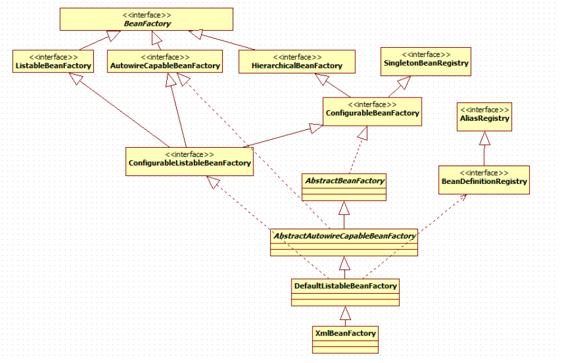

<!DOCTYPE html>


<html lang="zh-CN">


<head>
  <meta charset="utf-8" />
    
  <meta name="description" content="好记性不如烂笔头" />
  
  <meta name="viewport" content="width=device-width, initial-scale=1, maximum-scale=1" />
  <title>
    Spring IOC 学习分享 |  奋斗的皮皮虾
  </title>
  <meta name="generator" content="hexo-theme-ayer">
  
  <link rel="shortcut icon" href="/images/avatar.jpg" />
  
  
<link rel="stylesheet" href="/dist/main.css">

  
<link rel="stylesheet" href="https://cdn.jsdelivr.net/gh/Shen-Yu/cdn/css/remixicon.min.css">

  
<link rel="stylesheet" href="/css/custom.css">

  
  
<script src="https://cdn.jsdelivr.net/npm/pace-js@1.0.2/pace.min.js"></script>

  
  

  

<link rel="alternate" href="/atom.xml" title="奋斗的皮皮虾" type="application/atom+xml">
</head>

</html>

<body>
  <div id="app">
    
      <canvas class="fireworks"></canvas>
      <style>
        .fireworks {
          position: fixed;
          left: 0;
          top: 0;
          z-index: 99999;
          pointer-events: none;
        }
      </style>
      
      
    <main class="content on">
      <section class="outer">
  <article
  id="post-SpringIocLearn"
  class="article article-type-post"
  itemscope
  itemprop="blogPost"
  data-scroll-reveal
>
  <div class="article-inner">
    
    <header class="article-header">
       
<h1 class="article-title sea-center" style="border-left:0" itemprop="name">
  Spring IOC 学习分享
</h1>
 

    </header>
     
    <div class="article-meta">
      <a href="/2019/10/16/SpringIocLearn/" class="article-date">
  <time datetime="2019-10-16T15:10:11.000Z" itemprop="datePublished">2019-10-16</time>
</a> 
  <div class="article-category">
    <a class="article-category-link" href="/categories/spring/">spring</a>
  </div>
  
<div class="word_count">
    <span class="post-time">
        <span class="post-meta-item-icon">
            <i class="ri-quill-pen-line"></i>
            <span class="post-meta-item-text"> 字数统计:</span>
            <span class="post-count">14k</span>
        </span>
    </span>

    <span class="post-time">
        &nbsp; | &nbsp;
        <span class="post-meta-item-icon">
            <i class="ri-book-open-line"></i>
            <span class="post-meta-item-text"> 阅读时长≈</span>
            <span class="post-count">58 分钟</span>
        </span>
    </span>
</div>
 
    </div>
      
    <div class="tocbot"></div>


  
    <div class="article-entry" itemprop="articleBody">
       
  <h1 id="Spring-IOC学习分享"><a href="#Spring-IOC学习分享" class="headerlink" title="Spring IOC学习分享"></a>Spring IOC学习分享</h1><h4 id="引言"><a href="#引言" class="headerlink" title="引言"></a>引言</h4><p>  在工作几年JAVA开发中,几乎Spring框架是最常见不过了，但是我们又对框架了解多少，我时常问自己为啥要用？为啥要这么用？于是我开始总结、看博客，发现网上写的都很全很好，为了以后更加深刻理解和使用，整理了一套更加完整的IOC的文档。</p>
<h3 id="1-什么是IoC-DI？"><a href="#1-什么是IoC-DI？" class="headerlink" title="1.什么是IoC/DI？"></a>1.什么是IoC/DI？</h3><ul>
<li><p><strong>IoC(控制反转)</strong></p>
<p>　　首先想说说IoC（Inversion of Control，控制反转）。这是spring的核心，贯穿始终。所谓IoC，对于spring框架来说，就是由spring来负责控制对象的生命周期和对象间的关系。这是什么意思呢，举个简单的例子，我们是如何找女朋友的？常见的情况是，我们到处去看哪里有长得漂亮身材又好的mm，然后打听她们的兴趣爱好、qq号、电话号、ip号、iq号………，想办法认识她们，投其所好送其所要，然后嘿嘿……这个过程是复杂深奥的，我们必须自己设计和面对每个环节。传统的程序开发也是如此，在一个对象中，如果要使用另外的对象，就必须得到它（自己new一个，或者从JNDI中查询一个），使用完之后还要将对象销毁（比如Connection等），对象始终会和其他的接口或类藕合起来。<br>　　那么IoC是如何做的呢？有点像通过婚介找女朋友，在我和女朋友之间引入了一个第三者：婚姻介绍所。婚介管理了很多男男女女的资料，我可以向婚介提出一个列表，告诉它我想找个什么样的女朋友，比如长得像李嘉欣，身材像林熙雷，唱歌像周杰伦，速度像卡洛斯，技术像齐达内之类的，然后婚介就会按照我们的要求，提供一个mm，我们只需要去和她谈恋爱、结婚就行了。简单明了，如果婚介给我们的人选不符合要求，我们就会抛出异常。整个过程不再由我自己控制，而是有婚介这样一个类似容器的机构来控制。Spring所倡导的开发方式就是如此，所有的类都会在spring容器中登记，告诉spring你是个什么东西，你需要什么东西，然后spring会在系统运行到适当的时候，把你要的东西主动给你，同时也把你交给其他需要你的东西。所有的类的创建、销毁都由 spring来控制，也就是说控制对象生存周期的不再是引用它的对象，而是spring。对于某个具体的对象而言，以前是它控制其他对象，现在是所有对象都被spring控制，所以这叫控制反转。</p>
</li>
<li><p><strong>DI(依赖注入)</strong></p>
<p>　　IoC的一个重点是在系统运行中，动态的向某个对象提供它所需要的其他对象。这一点是通过DI（Dependency Injection，依赖注入）来实现的。比如对象A需要操作数据库，以前我们总是要在A中自己编写代码来获得一个Connection对象，有了 spring我们就只需要告诉spring，A中需要一个Connection，至于这个Connection怎么构造，何时构造，A不需要知道。在系统运行时，spring会在适当的时候制造一个Connection，然后像打针一样，注射到A当中，这样就完成了对各个对象之间关系的控制。A需要依赖 Connection才能正常运行，而这个Connection是由spring注入到A中的，依赖注入的名字就这么来的。那么DI是如何实现的呢？ Java 1.3之后一个重要特征是反射（reflection），它允许程序在运行的时候动态的生成对象、执行对象的方法、改变对象的属性，spring就是通过反射来实现注入的。<br>　　理解了IoC和DI的概念后，一切都将变得简单明了，剩下的工作只是在spring的框架中堆积木而已。</p>
</li>
</ul>
<h3 id="2-Spring-IoC容器系列"><a href="#2-Spring-IoC容器系列" class="headerlink" title="2.Spring IoC容器系列"></a>2.Spring IoC容器系列</h3><p>(1)实现 BeanFactory接口的简单容器系列<br>(2)ApplicationContext应用上下文，作为容器的高级形态存在<br>(3)IoC容器的初始化过程</p>
<h3 id="3-BeanFactory容器分析"><a href="#3-BeanFactory容器分析" class="headerlink" title="3.BeanFactory容器分析"></a>3.BeanFactory容器分析</h3><h4 id="一、BeanFactory继承体系"><a href="#一、BeanFactory继承体系" class="headerlink" title="一、BeanFactory继承体系"></a>一、BeanFactory继承体系</h4><p> </p>
<ol>
<li>BeanFactory 作为一个主接口不继承任何接口，一级接口。 </li>
<li>AutowireCapableBeanFactory、HierarchicalBeanFactory、ListableBeanFactory 3个子接口继承了它， 进行功能上的增强。这3个子接口称为二级接口。 </li>
<li>ConfigurableBeanFactory 可以被称为三级接口，对二级接口 Hierarchical（）BeanFactory 进行了再次增 强，它还继承了另一个外来的接口 SingletonBeanRegistry 。</li>
<li>ConfigurableListableBeanFactory 是一个更强大的接口，继承了上述的所有接口，无所不包，称为四级接 口。</li>
</ol>
<h5 id="1-1-BeanFactory"><a href="#1-1-BeanFactory" class="headerlink" title="1-1 BeanFactory"></a>1-1 BeanFactory</h5><p>首先看BeanFactory接口中定义的方法：</p>
<figure class="highlight java"><table><tr><td class="gutter"><pre><span class="line">1</span><br><span class="line">2</span><br><span class="line">3</span><br><span class="line">4</span><br><span class="line">5</span><br><span class="line">6</span><br><span class="line">7</span><br><span class="line">8</span><br><span class="line">9</span><br><span class="line">10</span><br><span class="line">11</span><br><span class="line">12</span><br><span class="line">13</span><br><span class="line">14</span><br><span class="line">15</span><br><span class="line">16</span><br><span class="line">17</span><br><span class="line">18</span><br><span class="line">19</span><br><span class="line">20</span><br><span class="line">21</span><br><span class="line">22</span><br><span class="line">23</span><br><span class="line">24</span><br></pre></td><td class="code"><pre><span class="line">  	<span class="comment">//这里是对FactoryBean的转义定义，因为如果使用bean的名字检索FactoryBean得到的对象是工厂生成的对象,通俗理解为如果一个FactoryBean的名字为a，那么，&amp;a会得到那个Factory</span></span><br><span class="line">   String FACTORY_BEAN_PREFIX = <span class="string">"&amp;"</span>;</span><br><span class="line"><span class="comment">//根据bean名称获取bean实例</span></span><br><span class="line">   <span class="function">Object <span class="title">getBean</span><span class="params">(String var1)</span> <span class="keyword">throws</span> BeansException</span>;</span><br><span class="line"></span><br><span class="line">   <span class="comment">//这里根据bean的名字和Class类型来得到bean实例，和上面的方法不同在于它会抛出异常：如果根据名字取得的bean实例的Class类型和需要的不同的话。</span></span><br><span class="line">   &lt;T&gt; <span class="function">T <span class="title">getBean</span><span class="params">(String var1, @Nullable Class&lt;T&gt; var2)</span> <span class="keyword">throws</span> BeansException</span>;</span><br><span class="line">   <span class="function">Object <span class="title">getBean</span><span class="params">(String var1, Object... var2)</span> <span class="keyword">throws</span> BeansException</span>;</span><br><span class="line">   &lt;T&gt; <span class="function">T <span class="title">getBean</span><span class="params">(Class&lt;T&gt; var1)</span> <span class="keyword">throws</span> BeansException</span>;</span><br><span class="line">   &lt;T&gt; <span class="function">T <span class="title">getBean</span><span class="params">(Class&lt;T&gt; var1, Object... var2)</span> <span class="keyword">throws</span> BeansException</span>;</span><br><span class="line">   </span><br><span class="line"><span class="comment">//是否包含bean</span></span><br><span class="line">   <span class="function"><span class="keyword">boolean</span> <span class="title">containsBean</span><span class="params">(String var1)</span></span>;</span><br><span class="line">   </span><br><span class="line">   <span class="comment">//这里根据bean名字得到bean实例，并同时判断这个bean是不是单件 </span></span><br><span class="line">   <span class="function"><span class="keyword">boolean</span> <span class="title">isSingleton</span><span class="params">(String var1)</span> <span class="keyword">throws</span> NoSuchBeanDefinitionException</span>;</span><br><span class="line">   <span class="comment">//这里根据bean名字得到bean实例，并同时判断这个bean是不是原型 </span></span><br><span class="line">   <span class="function"><span class="keyword">boolean</span> <span class="title">isPrototype</span><span class="params">(String var1)</span> <span class="keyword">throws</span> NoSuchBeanDefinitionException</span>;</span><br><span class="line">   </span><br><span class="line">   <span class="comment">//这里对得到bean实例的Class类型  </span></span><br><span class="line">  <span class="meta">@Nullable</span></span><br><span class="line">   Class&lt;?&gt; getType(String var1) <span class="keyword">throws</span> NoSuchBeanDefinitionException;</span><br><span class="line"><span class="comment">//这里得到bean的别名，如果根据别名检索，那么其原名也会被检索出来  </span></span><br><span class="line">   String[] getAliases(String var1);</span><br></pre></td></tr></table></figure>

<p> 然后在看BeanFactory 的直接继承接口（二级接口），有<strong>HierarchicalBeanFactory</strong>、<strong>AutowireCapableBeanFactory</strong>和<strong>ListableBeanFactory</strong></p>
<p>看这三个类代码：</p>
<h5 id="2-1-HierarchicalBeanFactory"><a href="#2-1-HierarchicalBeanFactory" class="headerlink" title="2-1 HierarchicalBeanFactory"></a>2-1 HierarchicalBeanFactory</h5><p>（ 是为了实现bean工厂的层级关系提供支持 ）</p>
<figure class="highlight java"><table><tr><td class="gutter"><pre><span class="line">1</span><br><span class="line">2</span><br><span class="line">3</span><br><span class="line">4</span><br><span class="line">5</span><br><span class="line">6</span><br></pre></td><td class="code"><pre><span class="line"><span class="keyword">public</span> <span class="class"><span class="keyword">interface</span> <span class="title">HierarchicalBeanFactory</span> <span class="keyword">extends</span> <span class="title">BeanFactory</span> </span>&#123;  </span><br><span class="line">    <span class="comment">//获取父BeanFactory</span></span><br><span class="line">    <span class="meta">@Nullable</span>    </span><br><span class="line">    <span class="function">BeanFactory <span class="title">getParentBeanFactory</span><span class="params">()</span></span>;</span><br><span class="line">    <span class="comment">//本地工厂是否包含这个Bean</span></span><br><span class="line">    <span class="function"><span class="keyword">boolean</span> <span class="title">containsLocalBean</span><span class="params">(String var1)</span></span>;&#125;</span><br></pre></td></tr></table></figure>

<p>   1、第一个方法返回本Bean工厂的父工厂。这个方法实现了工厂的分层。</p>
<p>   2、第二个方法判断本地工厂是否包含这个Bean（忽略其他所有父工厂）。这也是分层思想的体现</p>
<p>   这个工厂接口非常简单，实现了Bean工厂的分层。这个工厂接口也是继承自BeanFacotory，也是一个二级接      口，相对于父接口，它只扩展了一个重要的功能——工厂分层。</p>
<h5 id="2-2-AutowireCapableBeanFactory"><a href="#2-2-AutowireCapableBeanFactory" class="headerlink" title="2-2 AutowireCapableBeanFactory"></a>2-2 AutowireCapableBeanFactory</h5><p>顾名思义 核心功能就是自动装配</p>
<figure class="highlight java"><table><tr><td class="gutter"><pre><span class="line">1</span><br><span class="line">2</span><br><span class="line">3</span><br><span class="line">4</span><br><span class="line">5</span><br><span class="line">6</span><br><span class="line">7</span><br><span class="line">8</span><br><span class="line">9</span><br><span class="line">10</span><br><span class="line">11</span><br><span class="line">12</span><br><span class="line">13</span><br><span class="line">14</span><br><span class="line">15</span><br><span class="line">16</span><br><span class="line">17</span><br><span class="line">18</span><br><span class="line">19</span><br><span class="line">20</span><br><span class="line">21</span><br></pre></td><td class="code"><pre><span class="line"><span class="keyword">public</span> <span class="class"><span class="keyword">interface</span> <span class="title">AutowireCapableBeanFactory</span> <span class="keyword">extends</span> <span class="title">BeanFactory</span> </span>&#123;</span><br><span class="line"><span class="comment">// 这个常量表明工厂没有自动装配的Bean</span></span><br><span class="line"><span class="keyword">int</span> AUTOWIRE_NO = <span class="number">0</span>;  </span><br><span class="line">    <span class="comment">//表明根据名称自动装配</span></span><br><span class="line"><span class="keyword">int</span> AUTOWIRE_BY_NAME = <span class="number">1</span>;</span><br><span class="line">    <span class="comment">// 表明根据类型自动装配</span></span><br><span class="line"><span class="keyword">int</span> AUTOWIRE_BY_TYPE = <span class="number">2</span>;</span><br><span class="line">    <span class="comment">//根据构造自动装配</span></span><br><span class="line"><span class="keyword">int</span> AUTOWIRE_CONSTRUCTOR = <span class="number">3</span>;</span><br><span class="line"><span class="comment">//根据Class创建一个Bean</span></span><br><span class="line">&lt;T&gt; <span class="function">T <span class="title">createBean</span><span class="params">(Class&lt;T&gt; var1)</span> <span class="keyword">throws</span> BeansException</span>;    </span><br><span class="line"> <span class="comment">//  给定对象，根据注释、后处理器等，进行自动装配  </span></span><br><span class="line"><span class="function"><span class="keyword">void</span> <span class="title">autowireBean</span><span class="params">(Object existingBean)</span> <span class="keyword">throws</span> BeansException</span>;  </span><br><span class="line"> <span class="comment">// 自动注入和设置bean的属性、执行factory回调函数比如setBeanName和setBeanFactory和执行bean的所有的后处理器。    </span></span><br><span class="line"><span class="function">Object <span class="title">configureBean</span><span class="params">(Object existingBean, String beanName)</span> <span class="keyword">throws</span> BeansException</span>;</span><br><span class="line"> <span class="comment">//调用bean的init方法，这个方法是客户配置的，在bean实例化之后调用</span></span><br><span class="line"><span class="function">Object <span class="title">initializeBean</span><span class="params">(Object existingBean, String beanName)</span> <span class="keyword">throws</span> BeansException</span>;</span><br><span class="line"><span class="comment">//初始化完成之后应用后处理器</span></span><br><span class="line"><span class="function">Object <span class="title">applyBeanPostProcessorsAfterInitialization</span><span class="params">(Object existingBean, String beanName)</span></span></span><br><span class="line"><span class="function"><span class="comment">//应用前处理器</span></span></span><br><span class="line"><span class="function">Object <span class="title">applyBeanPostProcessorsBeforeInitialization</span><span class="params">(Object existingBean, String beanName)</span></span></span><br></pre></td></tr></table></figure>

<p> 这个工厂接口继承自BeanFacotory，它扩展了自动装配的功能，根据类定义BeanDefinition装配Bean、执行前、后处理器等 </p>
<h5 id="2-3-ListableBeanFactory"><a href="#2-3-ListableBeanFactory" class="headerlink" title="2-3 ListableBeanFactory"></a>2-3 ListableBeanFactory</h5><p>作用：可以枚举所有的bean实例，是为了使客户端访问工厂中的bean而设计的，主要方法（这些方法顾名思义，所有的方法实现在StaticListableBeanFactory、AbstractApplicationContext和DefaultListableBeanFactory中）</p>
<figure class="highlight java"><table><tr><td class="gutter"><pre><span class="line">1</span><br><span class="line">2</span><br><span class="line">3</span><br><span class="line">4</span><br><span class="line">5</span><br><span class="line">6</span><br><span class="line">7</span><br><span class="line">8</span><br><span class="line">9</span><br><span class="line">10</span><br><span class="line">11</span><br><span class="line">12</span><br><span class="line">13</span><br><span class="line">14</span><br><span class="line">15</span><br><span class="line">16</span><br><span class="line">17</span><br><span class="line">18</span><br><span class="line">19</span><br><span class="line">20</span><br><span class="line">21</span><br><span class="line">22</span><br><span class="line">23</span><br><span class="line">24</span><br><span class="line">25</span><br><span class="line">26</span><br><span class="line">27</span><br><span class="line">28</span><br><span class="line">29</span><br><span class="line">30</span><br><span class="line">31</span><br></pre></td><td class="code"><pre><span class="line"><span class="keyword">public</span> <span class="class"><span class="keyword">interface</span> <span class="title">ListableBeanFactory</span> <span class="keyword">extends</span> <span class="title">BeanFactory</span> </span>&#123;</span><br><span class="line">    </span><br><span class="line">    <span class="comment">// 对于给定的名字是否含有BeanDefinition</span></span><br><span class="line">    <span class="function"><span class="keyword">boolean</span> <span class="title">containsBeanDefinition</span><span class="params">(String beanName)</span></span>; </span><br><span class="line">    <span class="comment">// 返回工厂的BeanDefinition总数</span></span><br><span class="line">    <span class="function"><span class="keyword">int</span> <span class="title">getBeanDefinitionCount</span><span class="params">()</span></span>; </span><br><span class="line">    <span class="comment">// 返回工厂中所有Bean的名字</span></span><br><span class="line">    String[] getBeanDefinitionNames(); </span><br><span class="line">	<span class="comment">// 返回对于指定类型Bean（包括子类）的所有名字</span></span><br><span class="line">    String[] getBeanNamesForType(Class&lt;?&gt; type); </span><br><span class="line"></span><br><span class="line">    <span class="comment">/*</span></span><br><span class="line"><span class="comment">     * 返回指定类型的名字 includeNonSingletons为false表示只取单例Bean，true则不是</span></span><br><span class="line"><span class="comment">     * allowEagerInit为true表示立刻加载，false表示延迟加载。注意:FactoryBeans都是立刻加载的。</span></span><br><span class="line"><span class="comment">     */</span></span><br><span class="line">    String[] getBeanNamesForType(Class&lt;?&gt; type, <span class="keyword">boolean</span> includeNonSingletons,</span><br><span class="line">            <span class="keyword">boolean</span> allowEagerInit);</span><br><span class="line">	<span class="comment">// 根据类型（包括子类）返回指定Bean名和Bean的Map</span></span><br><span class="line">    &lt;T&gt; <span class="function">Map&lt;String, T&gt; <span class="title">getBeansOfType</span><span class="params">(Class&lt;T&gt; type)</span> <span class="keyword">throws</span> BeansException</span>; </span><br><span class="line">	 </span><br><span class="line">    &lt;T&gt; <span class="function">Map&lt;String, T&gt; <span class="title">getBeansOfType</span><span class="params">(Class&lt;T&gt; type,</span></span></span><br><span class="line"><span class="function"><span class="params">            <span class="keyword">boolean</span> includeNonSingletons, <span class="keyword">boolean</span> allowEagerInit)</span></span></span><br><span class="line"><span class="function">            <span class="keyword">throws</span> BeansException</span>;</span><br><span class="line">	<span class="comment">// 根据注解类型，查找所有有这个注解的Bean名和Bean的Map</span></span><br><span class="line">    <span class="function">Map&lt;String, Object&gt; <span class="title">getBeansWithAnnotation</span><span class="params">(</span></span></span><br><span class="line"><span class="function"><span class="params">            Class&lt;? extends Annotation&gt; annotationType)</span> <span class="keyword">throws</span> BeansException</span>; </span><br><span class="line"></span><br><span class="line">    <span class="comment">// 根据指定Bean名和注解类型查找指定的Bean</span></span><br><span class="line">    &lt;A extends Annotation&gt; <span class="function">A <span class="title">findAnnotationOnBean</span><span class="params">(String beanName,</span></span></span><br><span class="line"><span class="function"><span class="params">            Class&lt;A&gt; annotationType)</span></span>;</span><br><span class="line">        &#125;</span><br></pre></td></tr></table></figure>

<p>  正如这个工厂接口的名字所示，这个工厂接口最大的特点就是可以列出工厂可以生产的所有实例 ， 而且你可以通过getBeanDefinitionNames()得到工厂所有bean的名字，然后根据这些名字得到所有的Bean。这个工厂接口扩展了BeanFactory的功能，作为上文指出的BeanFactory二级接口，有9个独有的方法，扩展了跟BeanDefinition的功能，提供了BeanDefinition、BeanName、注解有关的各种操作。它可以根据条件返回Bean的集合，这就是它名字的由来——ListableBeanFactory 。</p>
<h5 id="3-1-ConfigurableBeanFactory"><a href="#3-1-ConfigurableBeanFactory" class="headerlink" title="3-1 ConfigurableBeanFactory"></a>3-1 ConfigurableBeanFactory</h5><figure class="highlight java"><table><tr><td class="gutter"><pre><span class="line">1</span><br><span class="line">2</span><br><span class="line">3</span><br><span class="line">4</span><br><span class="line">5</span><br><span class="line">6</span><br><span class="line">7</span><br><span class="line">8</span><br><span class="line">9</span><br><span class="line">10</span><br><span class="line">11</span><br><span class="line">12</span><br><span class="line">13</span><br><span class="line">14</span><br><span class="line">15</span><br><span class="line">16</span><br><span class="line">17</span><br><span class="line">18</span><br><span class="line">19</span><br><span class="line">20</span><br><span class="line">21</span><br><span class="line">22</span><br><span class="line">23</span><br><span class="line">24</span><br><span class="line">25</span><br><span class="line">26</span><br><span class="line">27</span><br><span class="line">28</span><br><span class="line">29</span><br><span class="line">30</span><br><span class="line">31</span><br><span class="line">32</span><br><span class="line">33</span><br><span class="line">34</span><br><span class="line">35</span><br><span class="line">36</span><br><span class="line">37</span><br><span class="line">38</span><br><span class="line">39</span><br><span class="line">40</span><br><span class="line">41</span><br><span class="line">42</span><br><span class="line">43</span><br><span class="line">44</span><br><span class="line">45</span><br><span class="line">46</span><br><span class="line">47</span><br><span class="line">48</span><br><span class="line">49</span><br><span class="line">50</span><br><span class="line">51</span><br><span class="line">52</span><br><span class="line">53</span><br><span class="line">54</span><br><span class="line">55</span><br><span class="line">56</span><br><span class="line">57</span><br><span class="line">58</span><br><span class="line">59</span><br><span class="line">60</span><br><span class="line">61</span><br><span class="line">62</span><br><span class="line">63</span><br><span class="line">64</span><br><span class="line">65</span><br><span class="line">66</span><br><span class="line">67</span><br><span class="line">68</span><br><span class="line">69</span><br><span class="line">70</span><br><span class="line">71</span><br><span class="line">72</span><br><span class="line">73</span><br><span class="line">74</span><br><span class="line">75</span><br><span class="line">76</span><br><span class="line">77</span><br><span class="line">78</span><br><span class="line">79</span><br><span class="line">80</span><br><span class="line">81</span><br><span class="line">82</span><br><span class="line">83</span><br><span class="line">84</span><br><span class="line">85</span><br><span class="line">86</span><br><span class="line">87</span><br><span class="line">88</span><br><span class="line">89</span><br><span class="line">90</span><br><span class="line">91</span><br><span class="line">92</span><br><span class="line">93</span><br><span class="line">94</span><br><span class="line">95</span><br><span class="line">96</span><br><span class="line">97</span><br><span class="line">98</span><br><span class="line">99</span><br><span class="line">100</span><br><span class="line">101</span><br><span class="line">102</span><br><span class="line">103</span><br><span class="line">104</span><br><span class="line">105</span><br><span class="line">106</span><br><span class="line">107</span><br><span class="line">108</span><br><span class="line">109</span><br><span class="line">110</span><br><span class="line">111</span><br><span class="line">112</span><br><span class="line">113</span><br><span class="line">114</span><br><span class="line">115</span><br><span class="line">116</span><br><span class="line">117</span><br><span class="line">118</span><br><span class="line">119</span><br><span class="line">120</span><br><span class="line">121</span><br><span class="line">122</span><br><span class="line">123</span><br><span class="line">124</span><br><span class="line">125</span><br><span class="line">126</span><br><span class="line">127</span><br><span class="line">128</span><br><span class="line">129</span><br><span class="line">130</span><br><span class="line">131</span><br><span class="line">132</span><br><span class="line">133</span><br><span class="line">134</span><br><span class="line">135</span><br><span class="line">136</span><br><span class="line">137</span><br><span class="line">138</span><br><span class="line">139</span><br><span class="line">140</span><br><span class="line">141</span><br></pre></td><td class="code"><pre><span class="line"><span class="keyword">public</span> <span class="class"><span class="keyword">interface</span> <span class="title">ConfigurableBeanFactory</span> <span class="keyword">extends</span> <span class="title">HierarchicalBeanFactory</span>, <span class="title">SingletonBeanRegistry</span> </span>&#123;</span><br><span class="line"> 	<span class="comment">//  单例</span></span><br><span class="line">    String SCOPE_SINGLETON = <span class="string">"singleton"</span>; </span><br><span class="line">	<span class="comment">//  原型</span></span><br><span class="line">    String SCOPE_PROTOTYPE = <span class="string">"prototype"</span>;  </span><br><span class="line"></span><br><span class="line">    <span class="comment">/*</span></span><br><span class="line"><span class="comment">     * 搭配HierarchicalBeanFactory接口的getParentBeanFactory方法</span></span><br><span class="line"><span class="comment">     */</span></span><br><span class="line">    <span class="function"><span class="keyword">void</span> <span class="title">setParentBeanFactory</span><span class="params">(BeanFactory parentBeanFactory)</span> <span class="keyword">throws</span> IllegalStateException</span>;</span><br><span class="line"></span><br><span class="line">    <span class="comment">/*</span></span><br><span class="line"><span class="comment">     * 设置、返回工厂的类加载器</span></span><br><span class="line"><span class="comment">     */</span></span><br><span class="line">    <span class="function"><span class="keyword">void</span> <span class="title">setBeanClassLoader</span><span class="params">(ClassLoader beanClassLoader)</span></span>;</span><br><span class="line"></span><br><span class="line">    <span class="function">ClassLoader <span class="title">getBeanClassLoader</span><span class="params">()</span></span>;</span><br><span class="line"></span><br><span class="line">    <span class="comment">/*</span></span><br><span class="line"><span class="comment">     * 设置、返回一个临时的类加载器</span></span><br><span class="line"><span class="comment">     */</span></span><br><span class="line">    <span class="function"><span class="keyword">void</span> <span class="title">setTempClassLoader</span><span class="params">(ClassLoader tempClassLoader)</span></span>;</span><br><span class="line"></span><br><span class="line">    <span class="function">ClassLoader <span class="title">getTempClassLoader</span><span class="params">()</span></span>;</span><br><span class="line"></span><br><span class="line">    <span class="comment">/*</span></span><br><span class="line"><span class="comment">     * 设置、是否缓存元数据，如果false，那么每次请求实例，都会从类加载器重新加载（热加载）</span></span><br><span class="line"><span class="comment"></span></span><br><span class="line"><span class="comment">     */</span></span><br><span class="line">    <span class="function"><span class="keyword">void</span> <span class="title">setCacheBeanMetadata</span><span class="params">(<span class="keyword">boolean</span> cacheBeanMetadata)</span></span>;</span><br><span class="line">    </span><br><span class="line">    <span class="comment">//是否缓存元数据</span></span><br><span class="line">    <span class="function"><span class="keyword">boolean</span> <span class="title">isCacheBeanMetadata</span><span class="params">()</span></span>;</span><br><span class="line"></span><br><span class="line">    <span class="comment">/*</span></span><br><span class="line"><span class="comment">     * Bean表达式分解器</span></span><br><span class="line"><span class="comment">     */</span></span><br><span class="line">    <span class="function"><span class="keyword">void</span> <span class="title">setBeanExpressionResolver</span><span class="params">(BeanExpressionResolver resolver)</span></span>;</span><br><span class="line">    </span><br><span class="line">    <span class="function">BeanExpressionResolver <span class="title">getBeanExpressionResolver</span><span class="params">()</span></span>;</span><br><span class="line"></span><br><span class="line">    <span class="comment">/*</span></span><br><span class="line"><span class="comment">     * 设置、返回一个转换服务</span></span><br><span class="line"><span class="comment">     */</span></span><br><span class="line">    <span class="function"><span class="keyword">void</span> <span class="title">setConversionService</span><span class="params">(ConversionService conversionService)</span></span>;</span><br><span class="line"></span><br><span class="line">    <span class="function">ConversionService <span class="title">getConversionService</span><span class="params">()</span></span>;</span><br><span class="line"></span><br><span class="line">    <span class="comment">/*</span></span><br><span class="line"><span class="comment">     * 设置属性编辑登记员...</span></span><br><span class="line"><span class="comment">     */</span></span><br><span class="line">    <span class="function"><span class="keyword">void</span> <span class="title">addPropertyEditorRegistrar</span><span class="params">(PropertyEditorRegistrar registrar)</span></span>;</span><br><span class="line"></span><br><span class="line">    <span class="comment">/*</span></span><br><span class="line"><span class="comment">     * 注册常用属性编辑器</span></span><br><span class="line"><span class="comment">     */</span></span><br><span class="line">    <span class="function"><span class="keyword">void</span> <span class="title">registerCustomEditor</span><span class="params">(Class&lt;?&gt; requiredType, Class&lt;? extends PropertyEditor&gt; propertyEditorClass)</span></span>;</span><br><span class="line"></span><br><span class="line">    <span class="comment">/*</span></span><br><span class="line"><span class="comment">     * 用工厂中注册的通用的编辑器初始化指定的属性编辑注册器</span></span><br><span class="line"><span class="comment">     */</span></span><br><span class="line">    <span class="function"><span class="keyword">void</span> <span class="title">copyRegisteredEditorsTo</span><span class="params">(PropertyEditorRegistry registry)</span></span>;</span><br><span class="line"></span><br><span class="line">    <span class="comment">/*</span></span><br><span class="line"><span class="comment">     * 设置、得到一个类型转换器</span></span><br><span class="line"><span class="comment">     */</span></span><br><span class="line">    <span class="function"><span class="keyword">void</span> <span class="title">setTypeConverter</span><span class="params">(TypeConverter typeConverter)</span></span>;</span><br><span class="line">	</span><br><span class="line">    <span class="comment">//类型转换器 </span></span><br><span class="line">    <span class="function">TypeConverter <span class="title">getTypeConverter</span><span class="params">()</span></span>;</span><br><span class="line"></span><br><span class="line">    <span class="comment">/*</span></span><br><span class="line"><span class="comment">     * 增加一个嵌入式的StringValueResolver</span></span><br><span class="line"><span class="comment">     */</span></span><br><span class="line">    <span class="function"><span class="keyword">void</span> <span class="title">addEmbeddedValueResolver</span><span class="params">(StringValueResolver valueResolver)</span></span>;</span><br><span class="line">	</span><br><span class="line">    <span class="comment">//分解指定的嵌入式的值</span></span><br><span class="line">    <span class="function">String <span class="title">resolveEmbeddedValue</span><span class="params">(String value)</span></span>;</span><br><span class="line"></span><br><span class="line">    <span class="comment">//设置一个Bean后处理器</span></span><br><span class="line">    <span class="function"><span class="keyword">void</span> <span class="title">addBeanPostProcessor</span><span class="params">(BeanPostProcessor beanPostProcessor)</span></span>;</span><br><span class="line"></span><br><span class="line">    <span class="comment">//返回Bean后处理器的数量</span></span><br><span class="line">    <span class="function"><span class="keyword">int</span> <span class="title">getBeanPostProcessorCount</span><span class="params">()</span></span>;</span><br><span class="line"></span><br><span class="line">    <span class="comment">//注册范围</span></span><br><span class="line">    <span class="function"><span class="keyword">void</span> <span class="title">registerScope</span><span class="params">(String scopeName, Scope scope)</span></span>;</span><br><span class="line"></span><br><span class="line">    <span class="comment">//返回注册的范围名</span></span><br><span class="line">    String[] getRegisteredScopeNames();</span><br><span class="line"></span><br><span class="line">    <span class="comment">//返回指定的范围</span></span><br><span class="line">    <span class="function">Scope <span class="title">getRegisteredScope</span><span class="params">(String scopeName)</span></span>;</span><br><span class="line">	</span><br><span class="line">    <span class="comment">//返回本工厂的一个安全访问上下文</span></span><br><span class="line">    <span class="function">AccessControlContext <span class="title">getAccessControlContext</span><span class="params">()</span></span>;</span><br><span class="line"></span><br><span class="line">    <span class="comment">//从其他的工厂复制相关的所有配置</span></span><br><span class="line">    <span class="function"><span class="keyword">void</span> <span class="title">copyConfigurationFrom</span><span class="params">(ConfigurableBeanFactory otherFactory)</span></span>;</span><br><span class="line"></span><br><span class="line">    <span class="comment">/*</span></span><br><span class="line"><span class="comment">     * 给指定的Bean注册别名</span></span><br><span class="line"><span class="comment">     */</span></span><br><span class="line">    <span class="function"><span class="keyword">void</span> <span class="title">registerAlias</span><span class="params">(String beanName, String alias)</span> <span class="keyword">throws</span> BeanDefinitionStoreException</span>;</span><br><span class="line"></span><br><span class="line">    <span class="comment">//根据指定的StringValueResolver移除所有的别名</span></span><br><span class="line">    <span class="function"><span class="keyword">void</span> <span class="title">resolveAliases</span><span class="params">(StringValueResolver valueResolver)</span></span>;</span><br><span class="line">    </span><br><span class="line">    <span class="comment">/*</span></span><br><span class="line"><span class="comment">     * 返回指定Bean合并后的Bean定义</span></span><br><span class="line"><span class="comment">     */</span></span><br><span class="line">    <span class="function">BeanDefinition <span class="title">getMergedBeanDefinition</span><span class="params">(String beanName)</span> <span class="keyword">throws</span> NoSuchBeanDefinitionException</span>;</span><br><span class="line"></span><br><span class="line">    <span class="comment">//判断指定Bean是否为一个工厂Bean</span></span><br><span class="line">    <span class="function"><span class="keyword">boolean</span> <span class="title">isFactoryBean</span><span class="params">(String name)</span> <span class="keyword">throws</span> NoSuchBeanDefinitionException</span>;</span><br><span class="line"></span><br><span class="line">    <span class="comment">//设置一个Bean是否正在创建</span></span><br><span class="line">    <span class="function"><span class="keyword">void</span> <span class="title">setCurrentlyInCreation</span><span class="params">(String beanName, <span class="keyword">boolean</span> inCreation)</span></span>;</span><br><span class="line">	</span><br><span class="line">    <span class="comment">//返回指定Bean是否已经成功创建</span></span><br><span class="line">    <span class="function"><span class="keyword">boolean</span> <span class="title">isCurrentlyInCreation</span><span class="params">(String beanName)</span></span>;</span><br><span class="line">    </span><br><span class="line">    <span class="comment">//注册一个依赖于指定bean的Bean</span></span><br><span class="line">    <span class="function"><span class="keyword">void</span> <span class="title">registerDependentBean</span><span class="params">(String beanName, String dependentBeanName)</span></span>;</span><br><span class="line">	</span><br><span class="line">    <span class="comment">//返回依赖于指定Bean的所欲Bean名</span></span><br><span class="line">    String[] getDependentBeans(String beanName);</span><br><span class="line"></span><br><span class="line">    <span class="comment">//返回指定Bean依赖的所有Bean名</span></span><br><span class="line">    String[] getDependenciesForBean(String beanName);</span><br><span class="line"></span><br><span class="line">    <span class="comment">//销毁指定的Bean</span></span><br><span class="line">    <span class="function"><span class="keyword">void</span> <span class="title">destroyBean</span><span class="params">(String beanName, Object beanInstance)</span></span>;</span><br><span class="line">	</span><br><span class="line">    <span class="comment">//销毁指定的范围Bean</span></span><br><span class="line">    <span class="function"><span class="keyword">void</span> <span class="title">destroyScopedBean</span><span class="params">(String beanName)</span></span>;</span><br><span class="line"></span><br><span class="line">    <span class="comment">//销毁所有的单例类</span></span><br><span class="line">    <span class="function"><span class="keyword">void</span> <span class="title">destroySingletons</span><span class="params">()</span></span>; </span><br><span class="line"></span><br><span class="line">&#125;</span><br></pre></td></tr></table></figure>

<p>再看一下继承的接口SingletonBeanRegistry,HierarchicalBeanFactory,  HierarchicalBeanFactory我们前面已经解释过了，这里主要看一下<strong>SingletonBeanRegistry</strong>的源码：</p>
<figure class="highlight java"><table><tr><td class="gutter"><pre><span class="line">1</span><br><span class="line">2</span><br><span class="line">3</span><br><span class="line">4</span><br><span class="line">5</span><br><span class="line">6</span><br><span class="line">7</span><br><span class="line">8</span><br><span class="line">9</span><br><span class="line">10</span><br><span class="line">11</span><br><span class="line">12</span><br><span class="line">13</span><br><span class="line">14</span><br><span class="line">15</span><br><span class="line">16</span><br><span class="line">17</span><br><span class="line">18</span><br></pre></td><td class="code"><pre><span class="line"><span class="keyword">public</span> <span class="class"><span class="keyword">interface</span> <span class="title">SingletonBeanRegistry</span> </span>&#123;</span><br><span class="line"></span><br><span class="line">	<span class="comment">//在容器内注册一个单例类 </span></span><br><span class="line">    <span class="function"><span class="keyword">void</span> <span class="title">registerSingleton</span><span class="params">(String beanName, Object singletonObject)</span></span>;  </span><br><span class="line">    </span><br><span class="line">    <span class="comment">//返回给定名称对应的单例类</span></span><br><span class="line">    <span class="function">Object <span class="title">getSingleton</span><span class="params">(String beanName)</span></span>;</span><br><span class="line"></span><br><span class="line">    <span class="comment">//给定名称是否对应单例类</span></span><br><span class="line">    <span class="function"><span class="keyword">boolean</span> <span class="title">containsSingleton</span><span class="params">(String beanName)</span></span>;</span><br><span class="line"></span><br><span class="line">    <span class="comment">//返回容器内所有单例类的名字</span></span><br><span class="line">    String[] getSingletonNames();</span><br><span class="line"></span><br><span class="line">    <span class="comment">//返回容器内注册的单例类数量</span></span><br><span class="line">    <span class="function"><span class="keyword">int</span> <span class="title">getSingletonCount</span><span class="params">()</span></span>;</span><br><span class="line"></span><br><span class="line">&#125;</span><br></pre></td></tr></table></figure>

<p>  <strong>ConfigurableBeanFactory</strong>同时继承了<strong>HierarchicalBeanFactory</strong> 和 <strong>SingletonBeanRegistry</strong> 这两个接口，即同时继承了分层和单例类注册的功能。</p>
<h5 id="4-1ConfigurableListableBeanFactory"><a href="#4-1ConfigurableListableBeanFactory" class="headerlink" title="4-1ConfigurableListableBeanFactory"></a>4-1ConfigurableListableBeanFactory</h5><figure class="highlight java"><table><tr><td class="gutter"><pre><span class="line">1</span><br><span class="line">2</span><br><span class="line">3</span><br><span class="line">4</span><br><span class="line">5</span><br><span class="line">6</span><br><span class="line">7</span><br><span class="line">8</span><br><span class="line">9</span><br><span class="line">10</span><br><span class="line">11</span><br><span class="line">12</span><br><span class="line">13</span><br><span class="line">14</span><br><span class="line">15</span><br><span class="line">16</span><br><span class="line">17</span><br><span class="line">18</span><br><span class="line">19</span><br><span class="line">20</span><br><span class="line">21</span><br><span class="line">22</span><br><span class="line">23</span><br><span class="line">24</span><br><span class="line">25</span><br><span class="line">26</span><br><span class="line">27</span><br><span class="line">28</span><br><span class="line">29</span><br><span class="line">30</span><br><span class="line">31</span><br><span class="line">32</span><br><span class="line">33</span><br><span class="line">34</span><br></pre></td><td class="code"><pre><span class="line"> <span class="keyword">public</span> <span class="class"><span class="keyword">interface</span> <span class="title">ConfigurableListableBeanFactory</span></span></span><br><span class="line"><span class="class">        <span class="keyword">extends</span> <span class="title">ListableBeanFactory</span>, <span class="title">AutowireCapableBeanFactory</span>, <span class="title">ConfigurableBeanFactory</span> </span>&#123;</span><br><span class="line">     <span class="comment">//忽略自动装配的依赖类型</span></span><br><span class="line">    <span class="function"><span class="keyword">void</span> <span class="title">ignoreDependencyType</span><span class="params">(Class&lt;?&gt; type)</span></span>;</span><br><span class="line"></span><br><span class="line">     <span class="comment">//忽略自动装配的接口</span></span><br><span class="line">    <span class="function"><span class="keyword">void</span> <span class="title">ignoreDependencyInterface</span><span class="params">(Class&lt;?&gt; ifc)</span></span>;</span><br><span class="line"></span><br><span class="line">    <span class="comment">/*</span></span><br><span class="line"><span class="comment">     * 注册一个可分解的依赖</span></span><br><span class="line"><span class="comment">     */</span></span><br><span class="line">    <span class="function"><span class="keyword">void</span> <span class="title">registerResolvableDependency</span><span class="params">(Class&lt;?&gt; dependencyType, Object autowiredValue)</span></span>;</span><br><span class="line"></span><br><span class="line">    <span class="comment">/*</span></span><br><span class="line"><span class="comment">     * 判断指定的Bean是否有资格作为自动装配的候选者</span></span><br><span class="line"><span class="comment">     */</span></span><br><span class="line">    <span class="function"><span class="keyword">boolean</span> <span class="title">isAutowireCandidate</span><span class="params">(String beanName, DependencyDescriptor descriptor)</span></span></span><br><span class="line"><span class="function">            <span class="keyword">throws</span> NoSuchBeanDefinitionException</span>;</span><br><span class="line"></span><br><span class="line">    <span class="comment">/*</span></span><br><span class="line"><span class="comment">     * 返回注册的Bean定义</span></span><br><span class="line"><span class="comment">     */</span></span><br><span class="line">    <span class="function">BeanDefinition <span class="title">getBeanDefinition</span><span class="params">(String beanName)</span> <span class="keyword">throws</span> NoSuchBeanDefinitionException</span>;</span><br><span class="line"></span><br><span class="line">     <span class="comment">//暂时冻结所有的Bean配置</span></span><br><span class="line">    <span class="function"><span class="keyword">void</span> <span class="title">freezeConfiguration</span><span class="params">()</span></span>;</span><br><span class="line"></span><br><span class="line">     <span class="comment">//判断本工厂配置是否被冻结</span></span><br><span class="line">    <span class="function"><span class="keyword">boolean</span> <span class="title">isConfigurationFrozen</span><span class="params">()</span></span>;</span><br><span class="line">     </span><br><span class="line">	<span class="comment">//使所有的非延迟加载的单例类都实例化。</span></span><br><span class="line">    <span class="function"><span class="keyword">void</span> <span class="title">preInstantiateSingletons</span><span class="params">()</span> <span class="keyword">throws</span> BeansException</span>;</span><br><span class="line"></span><br><span class="line">&#125;</span><br></pre></td></tr></table></figure>

<p>  工厂接口<strong>ConfigurableListableBeanFactory</strong>同时继承了3个接口，ListableBeanFactory、AutowireCapableBeanFactory 和 ConfigurableBeanFactory，扩展之后实在是巨大到不行了。这个工厂接口的自有方法总体上只是对父类接口功能的补充，包含了BeanFactory体系目前的所有方法，可以说是接口的集大成者 </p>
<p><strong>额外的接口——BeanDefinitionRegistry**</strong></p>
<p>这个接口基本用来操作定义在工厂内部的BeanDefinition的。我们先来看一下这个接口的父接口</p>
<figure class="highlight java"><table><tr><td class="gutter"><pre><span class="line">1</span><br><span class="line">2</span><br><span class="line">3</span><br><span class="line">4</span><br><span class="line">5</span><br><span class="line">6</span><br><span class="line">7</span><br><span class="line">8</span><br><span class="line">9</span><br><span class="line">10</span><br><span class="line">11</span><br></pre></td><td class="code"><pre><span class="line"><span class="keyword">public</span> <span class="class"><span class="keyword">interface</span> <span class="title">AliasRegistry</span> </span>&#123;</span><br><span class="line">	<span class="comment">//对指定的名称注册别名</span></span><br><span class="line">    <span class="function"><span class="keyword">void</span> <span class="title">registerAlias</span><span class="params">(String name, String alias)</span></span>;</span><br><span class="line">	<span class="comment">//从当前容器移除指定别名</span></span><br><span class="line">    <span class="function"><span class="keyword">void</span> <span class="title">removeAlias</span><span class="params">(String alias)</span></span>;</span><br><span class="line">	<span class="comment">//判断指定名称是否为别名</span></span><br><span class="line">    <span class="function"><span class="keyword">boolean</span> <span class="title">isAlias</span><span class="params">(String beanName)</span></span>;</span><br><span class="line">	<span class="comment">//返回指定名称的所有别名</span></span><br><span class="line">    String[] getAliases(String name);</span><br><span class="line"></span><br><span class="line">&#125;</span><br></pre></td></tr></table></figure>

<p>  可以看到这4个方法都非常简单，都是用来操作别名的。</p>
<p>再来看一下BeanDefinitionRegistry的源码：</p>
<figure class="highlight java"><table><tr><td class="gutter"><pre><span class="line">1</span><br><span class="line">2</span><br><span class="line">3</span><br><span class="line">4</span><br><span class="line">5</span><br><span class="line">6</span><br><span class="line">7</span><br><span class="line">8</span><br><span class="line">9</span><br><span class="line">10</span><br><span class="line">11</span><br><span class="line">12</span><br><span class="line">13</span><br><span class="line">14</span><br><span class="line">15</span><br><span class="line">16</span><br><span class="line">17</span><br><span class="line">18</span><br><span class="line">19</span><br><span class="line">20</span><br><span class="line">21</span><br><span class="line">22</span><br><span class="line">23</span><br><span class="line">24</span><br><span class="line">25</span><br><span class="line">26</span><br><span class="line">27</span><br></pre></td><td class="code"><pre><span class="line"><span class="keyword">public</span> <span class="class"><span class="keyword">interface</span> <span class="title">BeanDefinitionRegistry</span> <span class="keyword">extends</span> <span class="title">AliasRegistry</span> </span>&#123;</span><br><span class="line"></span><br><span class="line">    <span class="function"><span class="keyword">void</span> <span class="title">registerBeanDefinition</span><span class="params">(String beanName, BeanDefinition beanDefinition)</span></span></span><br><span class="line"><span class="function">            <span class="keyword">throws</span> BeanDefinitionStoreException</span>;<span class="comment">//给定bean名称，注册一个新的bean定义</span></span><br><span class="line"></span><br><span class="line">    <span class="comment">/*</span></span><br><span class="line"><span class="comment">     * 根据指定Bean名移除对应的Bean定义</span></span><br><span class="line"><span class="comment">     */</span></span><br><span class="line">    <span class="function"><span class="keyword">void</span> <span class="title">removeBeanDefinition</span><span class="params">(String beanName)</span> <span class="keyword">throws</span> NoSuchBeanDefinitionException</span>;</span><br><span class="line"></span><br><span class="line">    <span class="comment">/*</span></span><br><span class="line"><span class="comment">     * 根据指定bean名得到对应的Bean定义</span></span><br><span class="line"><span class="comment">     */</span></span><br><span class="line">    <span class="function">BeanDefinition <span class="title">getBeanDefinition</span><span class="params">(String beanName)</span> <span class="keyword">throws</span> NoSuchBeanDefinitionException</span>;</span><br><span class="line"></span><br><span class="line">    <span class="comment">/*</span></span><br><span class="line"><span class="comment">     * 查找，指定的Bean名是否包含Bean定义</span></span><br><span class="line"><span class="comment">     */</span></span><br><span class="line">    <span class="function"><span class="keyword">boolean</span> <span class="title">containsBeanDefinition</span><span class="params">(String beanName)</span></span>;</span><br><span class="line">	<span class="comment">//返回本容器内所有注册的Bean定义名称</span></span><br><span class="line">    String[] getBeanDefinitionNames();</span><br><span class="line">	<span class="comment">//返回本容器内注册的Bean定义数目</span></span><br><span class="line">    <span class="function"><span class="keyword">int</span> <span class="title">getBeanDefinitionCount</span><span class="params">()</span></span>;</span><br><span class="line">	<span class="comment">//指定Bean名是否被注册过。</span></span><br><span class="line">    <span class="function"><span class="keyword">boolean</span> <span class="title">isBeanNameInUse</span><span class="params">(String beanName)</span></span>;</span><br><span class="line"></span><br><span class="line">&#125;</span><br></pre></td></tr></table></figure>


<h4 id="BeanDefinition继承体系"><a href="#BeanDefinition继承体系" class="headerlink" title="BeanDefinition继承体系"></a>BeanDefinition继承体系</h4><p><strong>体系结构图</strong> </p>
<p>SpringIOC容器管理了我们定义的各种Bean对象及其相互的关系，Bean对象在Spring实现中是以BeanDefinition </p>
<p>来描述的，其继承体系如下： </p>
<p></p>
<h4 id="ApplicationContext继承体系"><a href="#ApplicationContext继承体系" class="headerlink" title="ApplicationContext继承体系"></a>ApplicationContext继承体系</h4><p><strong>体系结构图</strong></p>
<p></p>
<h3 id="4-IOC容器入口-XML方式"><a href="#4-IOC容器入口-XML方式" class="headerlink" title="4.IOC容器入口 XML方式"></a>4.IOC容器入口 XML方式</h3><p>​        前面主要对Beanfactory 和 Beanfactory 子接口的一些方法的描述，下面让我们来看看ioc的具体实现方式</p>
<p>大家先来看来下实现流程图：</p>
<p></p>
<p>ApplicationContext允许上下文嵌套，通过保持父上下文可以维持一个上下文体系。对于Bean的查找可以在这个上 下文体系中发生，首先检查当前上下文，其次是父上下文，逐级向上，这样为不同的Spring应用提供了一个共享的 Bean定义环境。</p>
<h4 id="找入口"><a href="#找入口" class="headerlink" title="找入口"></a>找入口</h4><p>通过上面的继承体系图 我们可以发现底层有两种种实现方式，一种基于java程序入口 ，一种基于web程序入口</p>
<h6 id="Java程序入口"><a href="#Java程序入口" class="headerlink" title="Java程序入口"></a>Java程序入口</h6><figure class="highlight java"><table><tr><td class="gutter"><pre><span class="line">1</span><br><span class="line">2</span><br><span class="line">3</span><br></pre></td><td class="code"><pre><span class="line">BeanFactory bf = <span class="keyword">new</span> XMLBeanFactory(<span class="string">"spring.xml"</span>); </span><br><span class="line"></span><br><span class="line">ApplicationContext ctx = <span class="keyword">new</span> ClassPathXmlApplicationContext(<span class="string">"spring.xml"</span>);</span><br></pre></td></tr></table></figure>

<h6 id="web程序入口"><a href="#web程序入口" class="headerlink" title="web程序入口"></a>web程序入口</h6><figure class="highlight java"><table><tr><td class="gutter"><pre><span class="line">1</span><br><span class="line">2</span><br><span class="line">3</span><br><span class="line">4</span><br><span class="line">5</span><br><span class="line">6</span><br><span class="line">7</span><br></pre></td><td class="code"><pre><span class="line"></span><br><span class="line">&lt;context-param&gt; &lt;param-name&gt;contextConfigLocation&lt;/param-name&gt; </span><br><span class="line">    &lt;param-value&gt;classpath:spring.xml&lt;/param-value&gt; </span><br><span class="line">&lt;/context-param&gt;</span><br><span class="line">&lt;listener&gt; </span><br><span class="line">	 &lt;listener-<span class="class"><span class="keyword">class</span>&gt; <span class="title">org</span>.<span class="title">springframework</span>.<span class="title">web</span>.<span class="title">context</span>.<span class="title">ContextLoaderListener</span>&lt;/<span class="title">listener</span>-<span class="title">class</span>&gt; </span></span><br><span class="line"><span class="class">&lt;/<span class="title">listener</span>&gt;</span></span><br></pre></td></tr></table></figure>

<p>不管上面哪种方式，最终都会调 AbstractApplicationContext的refresh方法 ，而这个方法才是我们真正的入口。</p>
<h4 id="5-容器解析"><a href="#5-容器解析" class="headerlink" title="5.容器解析"></a>5.容器解析</h4><p><strong>AbstractApplicationContext的 refresh 方法</strong>     </p>
<p>refresh()方法所有的ApplicationContext子类都没重写，只有AbstractApplicationContext里有实现过（接口定义在ConfigurableApplicationContext） </p>
<figure class="highlight java"><table><tr><td class="gutter"><pre><span class="line">1</span><br><span class="line">2</span><br><span class="line">3</span><br><span class="line">4</span><br><span class="line">5</span><br><span class="line">6</span><br><span class="line">7</span><br><span class="line">8</span><br><span class="line">9</span><br><span class="line">10</span><br><span class="line">11</span><br><span class="line">12</span><br><span class="line">13</span><br><span class="line">14</span><br><span class="line">15</span><br><span class="line">16</span><br><span class="line">17</span><br><span class="line">18</span><br><span class="line">19</span><br><span class="line">20</span><br><span class="line">21</span><br><span class="line">22</span><br><span class="line">23</span><br><span class="line">24</span><br><span class="line">25</span><br><span class="line">26</span><br><span class="line">27</span><br><span class="line">28</span><br><span class="line">29</span><br><span class="line">30</span><br><span class="line">31</span><br><span class="line">32</span><br><span class="line">33</span><br><span class="line">34</span><br><span class="line">35</span><br><span class="line">36</span><br><span class="line">37</span><br><span class="line">38</span><br><span class="line">39</span><br><span class="line">40</span><br><span class="line">41</span><br><span class="line">42</span><br><span class="line">43</span><br><span class="line">44</span><br><span class="line">45</span><br><span class="line">46</span><br><span class="line">47</span><br><span class="line">48</span><br><span class="line">49</span><br><span class="line">50</span><br><span class="line">51</span><br><span class="line">52</span><br><span class="line">53</span><br><span class="line">54</span><br><span class="line">55</span><br><span class="line">56</span><br><span class="line">57</span><br><span class="line">58</span><br><span class="line">59</span><br><span class="line">60</span><br><span class="line">61</span><br><span class="line">62</span><br><span class="line">63</span><br><span class="line">64</span><br><span class="line">65</span><br><span class="line">66</span><br><span class="line">67</span><br><span class="line">68</span><br><span class="line">69</span><br><span class="line">70</span><br><span class="line">71</span><br><span class="line">72</span><br><span class="line">73</span><br><span class="line">74</span><br><span class="line">75</span><br><span class="line">76</span><br><span class="line">77</span><br><span class="line">78</span><br><span class="line">79</span><br><span class="line">80</span><br><span class="line">81</span><br><span class="line">82</span><br><span class="line">83</span><br><span class="line">84</span><br><span class="line">85</span><br><span class="line">86</span><br><span class="line">87</span><br></pre></td><td class="code"><pre><span class="line"><span class="meta">@Override</span></span><br><span class="line">	<span class="function"><span class="keyword">public</span> <span class="keyword">void</span> <span class="title">refresh</span><span class="params">()</span> <span class="keyword">throws</span> BeansException, IllegalStateException </span>&#123;</span><br><span class="line">		<span class="keyword">synchronized</span> (<span class="keyword">this</span>.startupShutdownMonitor) &#123;</span><br><span class="line">			<span class="comment">// Prepare this context for refreshing.</span></span><br><span class="line">			<span class="comment">//容器刷新前的准备，设置上下文状态，获取属性，验证必要的属性等</span></span><br><span class="line">			prepareRefresh();</span><br><span class="line"></span><br><span class="line">			<span class="comment">// Tell the subclass to refresh the internal bean factory.</span></span><br><span class="line">			<span class="comment">// 获取新的beanFactory，销毁原有beanFactory、为每个bean生成BeanDefinition等  </span></span><br><span class="line">			<span class="comment">// 注意，此处是获取新的，销毁旧的，这就是刷新的意义</span></span><br><span class="line">			ConfigurableListableBeanFactory beanFactory = obtainFreshBeanFactory();</span><br><span class="line"></span><br><span class="line">			<span class="comment">// Prepare the bean factory for use in this context.</span></span><br><span class="line">			<span class="comment">//配置标准的beanFactory，设置ClassLoader，设置SpEL表达式解析器等</span></span><br><span class="line">			prepareBeanFactory(beanFactory);</span><br><span class="line"></span><br><span class="line">			<span class="keyword">try</span> &#123;</span><br><span class="line">				<span class="comment">// Allows post-processing of the bean factory in context subclasses.</span></span><br><span class="line">				<span class="comment">//模板方法，允许在子类中对beanFactory进行后置处理。</span></span><br><span class="line">				postProcessBeanFactory(beanFactory);</span><br><span class="line"></span><br><span class="line">				<span class="comment">// Invoke factory processors registered as beans in the context.</span></span><br><span class="line">				<span class="comment">//实例化并调用所有注册的beanFactory后置处理器（实现接口BeanFactoryPostProcessor的bean）。</span></span><br><span class="line">				<span class="comment">//在beanFactory标准初始化之后执行  例如：PropertyPlaceholderConfigurer(处理占位符)</span></span><br><span class="line">				invokeBeanFactoryPostProcessors(beanFactory);</span><br><span class="line"></span><br><span class="line">				<span class="comment">// Register bean processors that intercept bean creation.</span></span><br><span class="line">				<span class="comment">//实例化和注册beanFactory中扩展了BeanPostProcessor的bean。</span></span><br><span class="line">				<span class="comment">//例如：</span></span><br><span class="line">				<span class="comment">//AutowiredAnnotationBeanPostProcessor(处理被@Autowired注解修饰的bean并注入)</span></span><br><span class="line">				<span class="comment">//RequiredAnnotationBeanPostProcessor(处理被@Required注解修饰的方法)</span></span><br><span class="line">				<span class="comment">//CommonAnnotationBeanPostProcessor(处理@PreDestroy、@PostConstruct、@Resource等多个注解的作用)等。</span></span><br><span class="line">				registerBeanPostProcessors(beanFactory);</span><br><span class="line"></span><br><span class="line">				<span class="comment">// Initialize message source for this context.</span></span><br><span class="line">				<span class="comment">//初始化国际化工具类MessageSource</span></span><br><span class="line">				initMessageSource();</span><br><span class="line"></span><br><span class="line">				<span class="comment">// Initialize event multicaster for this context.</span></span><br><span class="line">				<span class="comment">//初始化事件广播器</span></span><br><span class="line">				initApplicationEventMulticaster();</span><br><span class="line"></span><br><span class="line">				<span class="comment">// Initialize other special beans in specific context subclasses.</span></span><br><span class="line">				<span class="comment">//模板方法，在容器刷新的时候可以自定义逻辑（子类自己去实现逻辑），不同的Spring容器做不同的事情</span></span><br><span class="line">				onRefresh();</span><br><span class="line"></span><br><span class="line">				<span class="comment">// Check for listener beans and register them.</span></span><br><span class="line">				<span class="comment">//注册监听器，并且广播early application events,也就是早期的事件</span></span><br><span class="line">				registerListeners();</span><br><span class="line"></span><br><span class="line">				<span class="comment">// Instantiate all remaining (non-lazy-init) singletons.</span></span><br><span class="line">				<span class="comment">//非常重要。。。实例化所有剩余的（非懒加载）单例Bean。（也就是我们自己定义的那些Bean们）</span></span><br><span class="line">				<span class="comment">//比如invokeBeanFactoryPostProcessors方法中根据各种注解解析出来的类，在这个时候都会被初始化  扫描的 @Bean之类的</span></span><br><span class="line">				<span class="comment">//实例化的过程各种BeanPostProcessor开始起作用</span></span><br><span class="line">				finishBeanFactoryInitialization(beanFactory);</span><br><span class="line"></span><br><span class="line">				<span class="comment">// Last step: publish corresponding event.</span></span><br><span class="line">				<span class="comment">//refresh做完之后需要做的其他事情</span></span><br><span class="line">				<span class="comment">//清除上下文资源缓存（如扫描中的ASM元数据）</span></span><br><span class="line">				<span class="comment">//初始化上下文的生命周期处理器，并刷新（找出Spring容器中实现了Lifecycle接口的bean并执行start()方法）。</span></span><br><span class="line">				<span class="comment">//发布ContextRefreshedEvent事件告知对应的ApplicationListener进行响应的操作</span></span><br><span class="line">				finishRefresh();</span><br><span class="line">			&#125; <span class="keyword">catch</span> (BeansException ex) &#123;</span><br><span class="line">				<span class="keyword">if</span> (logger.isWarnEnabled()) &#123;</span><br><span class="line">					logger.warn(<span class="string">"Exception encountered during context initialization - "</span> +</span><br><span class="line">							<span class="string">"cancelling refresh attempt: "</span> + ex);</span><br><span class="line">				&#125;</span><br><span class="line"></span><br><span class="line">				<span class="comment">// Destroy already created singletons to avoid dangling resources.</span></span><br><span class="line">				<span class="comment">//如果刷新失败那么就会将已经创建好的单例Bean销毁掉</span></span><br><span class="line">				destroyBeans();</span><br><span class="line"></span><br><span class="line">				<span class="comment">// Reset 'active' flag.</span></span><br><span class="line">				<span class="comment">//重置context的活动状态 告知是失败的</span></span><br><span class="line">				cancelRefresh(ex);</span><br><span class="line"></span><br><span class="line">				<span class="comment">// Propagate exception to caller.</span></span><br><span class="line">				<span class="comment">//抛出异常</span></span><br><span class="line">				<span class="keyword">throw</span> ex;</span><br><span class="line">			&#125; <span class="keyword">finally</span> &#123;</span><br><span class="line">				<span class="comment">// Reset common introspection caches in Spring's core, since we</span></span><br><span class="line">				<span class="comment">// might not ever need metadata for singleton beans anymore...</span></span><br><span class="line">				<span class="comment">// 失败与否，都会重置Spring内核的缓存。因为可能不再需要metadata给单例Bean了。</span></span><br><span class="line">				resetCommonCaches();</span><br><span class="line">			&#125;</span><br><span class="line">		&#125;</span><br><span class="line">	&#125;</span><br></pre></td></tr></table></figure>


<h4 id="第一步：prepareRefresh"><a href="#第一步：prepareRefresh" class="headerlink" title="第一步：prepareRefresh()"></a>第一步：prepareRefresh()</h4><figure class="highlight java"><table><tr><td class="gutter"><pre><span class="line">1</span><br><span class="line">2</span><br><span class="line">3</span><br><span class="line">4</span><br><span class="line">5</span><br><span class="line">6</span><br><span class="line">7</span><br><span class="line">8</span><br><span class="line">9</span><br><span class="line">10</span><br><span class="line">11</span><br><span class="line">12</span><br><span class="line">13</span><br><span class="line">14</span><br><span class="line">15</span><br><span class="line">16</span><br><span class="line">17</span><br><span class="line">18</span><br><span class="line">19</span><br><span class="line">20</span><br><span class="line">21</span><br><span class="line">22</span><br><span class="line">23</span><br><span class="line">24</span><br><span class="line">25</span><br><span class="line">26</span><br><span class="line">27</span><br></pre></td><td class="code"><pre><span class="line">	<span class="function"><span class="keyword">protected</span> <span class="keyword">void</span> <span class="title">prepareRefresh</span><span class="params">()</span> </span>&#123;</span><br><span class="line">		<span class="comment">//记录容器启动时间，然后设立对应的标志位</span></span><br><span class="line">		<span class="keyword">this</span>.startupDate = System.currentTimeMillis();</span><br><span class="line">		<span class="keyword">this</span>.closed.set(<span class="keyword">false</span>);</span><br><span class="line">		<span class="keyword">this</span>.active.set(<span class="keyword">true</span>);	</span><br><span class="line"><span class="comment">// 打印info日志：开始刷新this此容器了</span></span><br><span class="line">	<span class="keyword">if</span> (logger.isInfoEnabled()) &#123;</span><br><span class="line">		logger.info(<span class="string">"Refreshing "</span> + <span class="keyword">this</span>);</span><br><span class="line">	&#125;</span><br><span class="line"></span><br><span class="line">	<span class="comment">// Initialize any placeholder property sources in the context environment</span></span><br><span class="line">	<span class="comment">// 这是扩展方法，由子类去实现，可以在验证之前为系统属性设置一些值可以在子类中实现此方法</span></span><br><span class="line">	<span class="comment">// 因为我们这边是AnnotationConfigApplicationContext，可以看到不管父类还是自己，都什么都没做，所以此处先忽略</span></span><br><span class="line">	initPropertySources();</span><br><span class="line"></span><br><span class="line">	<span class="comment">// Validate that all properties marked as required are resolvable</span></span><br><span class="line">	<span class="comment">// see ConfigurablePropertyResolver#setRequiredProperties</span></span><br><span class="line">	<span class="comment">//这里有两步，getEnvironment()，然后是是验证是否系统环境中有RequiredProperties参数值 如下详情</span></span><br><span class="line">	<span class="comment">// 然后管理Environment#validateRequiredProperties 后面在讲到环境的时候再专门讲解吧</span></span><br><span class="line">	<span class="comment">// 这里其实就干了一件事，验证是否存在需要的属性</span></span><br><span class="line">	getEnvironment().validateRequiredProperties();</span><br><span class="line"></span><br><span class="line">	<span class="comment">// Allow for the collection of early ApplicationEvents,</span></span><br><span class="line">	<span class="comment">// to be published once the multicaster is available...</span></span><br><span class="line">	<span class="comment">// 初始化容器，用于装载早期的一些事件</span></span><br><span class="line">	<span class="keyword">this</span>.earlyApplicationEvents = <span class="keyword">new</span> LinkedHashSet&lt;&gt;();</span><br><span class="line">&#125;</span><br></pre></td></tr></table></figure>
<h4 id="第二步：ConfigurableListableBeanFactory-beanFactory-obtainFreshBeanFactory"><a href="#第二步：ConfigurableListableBeanFactory-beanFactory-obtainFreshBeanFactory" class="headerlink" title="第二步：ConfigurableListableBeanFactory beanFactory = obtainFreshBeanFactory()"></a>第二步：ConfigurableListableBeanFactory beanFactory = obtainFreshBeanFactory()</h4><p>**实际上就是重新创建一个bean工厂，并销毁原工厂。主要工作是创建DefaultListableBeanFactory实例，解析配置文件，注册Bean的定义信息</p>
<figure class="highlight java"><table><tr><td class="gutter"><pre><span class="line">1</span><br><span class="line">2</span><br><span class="line">3</span><br><span class="line">4</span><br><span class="line">5</span><br><span class="line">6</span><br></pre></td><td class="code"><pre><span class="line"><span class="comment">/** * Tell the subclass to refresh the internal bean factory.</span></span><br><span class="line"><span class="comment">* <span class="doctag">@return</span> the fresh BeanFactory instance * <span class="doctag">@see</span> #refreshBeanFactory() * <span class="doctag">@see</span> #getBeanFactory() */</span></span><br><span class="line"></span><br><span class="line"><span class="function"><span class="keyword">protected</span> ConfigurableListableBeanFactory <span class="title">obtainFreshBeanFactory</span><span class="params">()</span> </span>&#123;     	refreshBeanFactory();</span><br><span class="line"> 	<span class="keyword">return</span>    getBeanFactory();</span><br><span class="line">   &#125;</span><br></pre></td></tr></table></figure>

<p>  在spring中，基本上各司其职，每个类都有每个类的作用。其中refreshBeanFactory()是具体的刷新BeanFactory,负责这个工作做在类AbstractRefreshableApplicationContext#refreshBeanFactory中，顾名思义这是专门用来刷新的：</p>
<figure class="highlight java"><table><tr><td class="gutter"><pre><span class="line">1</span><br><span class="line">2</span><br><span class="line">3</span><br><span class="line">4</span><br><span class="line">5</span><br><span class="line">6</span><br><span class="line">7</span><br><span class="line">8</span><br><span class="line">9</span><br><span class="line">10</span><br><span class="line">11</span><br><span class="line">12</span><br><span class="line">13</span><br><span class="line">14</span><br><span class="line">15</span><br><span class="line">16</span><br><span class="line">17</span><br><span class="line">18</span><br><span class="line">19</span><br><span class="line">20</span><br><span class="line">21</span><br><span class="line">22</span><br><span class="line">23</span><br><span class="line">24</span><br><span class="line">25</span><br><span class="line">26</span><br><span class="line">27</span><br><span class="line">28</span><br><span class="line">29</span><br><span class="line">30</span><br><span class="line">31</span><br></pre></td><td class="code"><pre><span class="line"><span class="meta">@Override</span></span><br><span class="line"><span class="function"><span class="keyword">protected</span> <span class="keyword">final</span> <span class="keyword">void</span> <span class="title">refreshBeanFactory</span><span class="params">()</span> <span class="keyword">throws</span> BeansException </span>&#123;</span><br><span class="line">	<span class="comment">// 判断是否已经存在BeanFactory，存在则销毁所有Beans，并且关闭BeanFactory</span></span><br><span class="line">	<span class="comment">// 避免重复加载BeanFactory</span></span><br><span class="line">	<span class="keyword">if</span> (hasBeanFactory()) &#123;</span><br><span class="line">		destroyBeans();</span><br><span class="line">		closeBeanFactory();</span><br><span class="line">	&#125;</span><br><span class="line">	<span class="keyword">try</span> &#123;</span><br><span class="line">		<span class="comment">// 创建具体的beanFactory，这里创建的是DefaultListableBeanFactory，最重要的beanFactory spring注册及加载bean就靠它</span></span><br><span class="line">		<span class="comment">// createBeanFactory()这个方法，看下面，还有得说的</span></span><br><span class="line">		DefaultListableBeanFactory beanFactory = createBeanFactory();</span><br><span class="line">		beanFactory.setSerializationId(getId());</span><br><span class="line">	</span><br><span class="line">		<span class="comment">// 这句比较简单，就是把当前旧容器的一些配置值复制给新容器 </span></span><br><span class="line">		<span class="comment">// allowBeanDefinitionOverriding属性是指是否允对一个名字相同但definition不同进行重新注册，默认是true。</span></span><br><span class="line">		<span class="comment">// allowCircularReferences属性是指是否允许Bean之间循环引用，默认是true.</span></span><br><span class="line">		<span class="comment">// 这两个属性值初始值为空：复写此方法即可customizeBeanFactory</span></span><br><span class="line">		customizeBeanFactory(beanFactory);</span><br><span class="line">		</span><br><span class="line">		<span class="comment">// 这个就是最重要的了，加载所有的Bean配置信息，具体如下详细解释</span></span><br><span class="line">		<span class="comment">// 它属于模版方法，由子类去实现加载的方式</span></span><br><span class="line">		loadBeanDefinitions(beanFactory);</span><br><span class="line">		<span class="keyword">synchronized</span> (<span class="keyword">this</span>.beanFactoryMonitor) &#123;</span><br><span class="line">			<span class="keyword">this</span>.beanFactory = beanFactory;</span><br><span class="line">		&#125;</span><br><span class="line">	&#125;</span><br><span class="line">	<span class="keyword">catch</span> (IOException ex) &#123;</span><br><span class="line">		<span class="keyword">throw</span> <span class="keyword">new</span> ApplicationContextException(<span class="string">"I/O error parsing bean definition source for "</span> + getDisplayName(), ex);</span><br><span class="line">	&#125;</span><br><span class="line">&#125;</span><br></pre></td></tr></table></figure>
<p>  <strong>createBeanFactory</strong>()</p>
<figure class="highlight java"><table><tr><td class="gutter"><pre><span class="line">1</span><br><span class="line">2</span><br><span class="line">3</span><br><span class="line">4</span><br><span class="line">5</span><br><span class="line">6</span><br><span class="line">7</span><br><span class="line">8</span><br><span class="line">9</span><br><span class="line">10</span><br><span class="line">11</span><br><span class="line">12</span><br><span class="line">13</span><br><span class="line">14</span><br><span class="line">15</span><br><span class="line">16</span><br><span class="line">17</span><br><span class="line">18</span><br><span class="line">19</span><br><span class="line">20</span><br><span class="line">21</span><br><span class="line">22</span><br><span class="line">23</span><br><span class="line">24</span><br><span class="line">25</span><br><span class="line">26</span><br><span class="line">27</span><br><span class="line">28</span><br></pre></td><td class="code"><pre><span class="line"><span class="comment">// 创建的时候就是new了一个工厂：DefaultListableBeanFactory   这个时候工厂里面所有东西都是默认值，很多还没有完成初始化属性的设置呢</span></span><br><span class="line"><span class="function"><span class="keyword">protected</span> DefaultListableBeanFactory <span class="title">createBeanFactory</span><span class="params">()</span> </span>&#123;</span><br><span class="line">	<span class="keyword">return</span> <span class="keyword">new</span> DefaultListableBeanFactory(getInternalParentBeanFactory());</span><br><span class="line">&#125;</span><br><span class="line"></span><br><span class="line"><span class="comment">// 给设置父的BeanFactory，若存在的话</span></span><br><span class="line"><span class="function"><span class="keyword">public</span> <span class="title">AbstractAutowireCapableBeanFactory</span><span class="params">(@Nullable BeanFactory parentBeanFactory)</span> </span>&#123;</span><br><span class="line">	<span class="keyword">this</span>();</span><br><span class="line">	setParentBeanFactory(parentBeanFactory);</span><br><span class="line">&#125;</span><br><span class="line"></span><br><span class="line"><span class="comment">// 父类空构造器有这么些语句</span></span><br><span class="line"><span class="function"><span class="keyword">public</span> <span class="title">AbstractAutowireCapableBeanFactory</span><span class="params">()</span> </span>&#123;</span><br><span class="line">	<span class="keyword">super</span>();</span><br><span class="line">	</span><br><span class="line">	<span class="comment">// 这里是重点。忽略自动装配。这里指定的都是接口。什么意思呢？</span></span><br><span class="line">	<span class="comment">// ignoreDependencyInterface的真正意思是在自动装配时忽略指定接口的实现类中，对外的依赖。</span></span><br><span class="line">	ignoreDependencyInterface(BeanNameAware<span class="class">.<span class="keyword">class</span>)</span>;</span><br><span class="line">	ignoreDependencyInterface(BeanFactoryAware<span class="class">.<span class="keyword">class</span>)</span>;</span><br><span class="line">	ignoreDependencyInterface(BeanClassLoaderAware<span class="class">.<span class="keyword">class</span>)</span>;</span><br><span class="line">&#125;</span><br><span class="line"></span><br><span class="line"><span class="comment">//找到父的，若存在就返回 若存在父容器就存在父的BeanFactory</span></span><br><span class="line"><span class="meta">@Nullable</span></span><br><span class="line"><span class="function"><span class="keyword">protected</span> BeanFactory <span class="title">getInternalParentBeanFactory</span><span class="params">()</span> </span>&#123;</span><br><span class="line">	<span class="keyword">return</span> (getParent() <span class="keyword">instanceof</span> ConfigurableApplicationContext) ?</span><br><span class="line">			((ConfigurableApplicationContext) getParent()).getBeanFactory() : getParent();</span><br><span class="line">&#125;</span><br></pre></td></tr></table></figure>
<p> <strong><code>AnnotationConfigWebApplicationContext#loadBeanDefinitions()</code>方法，加载Bean的定义 （<code>XmlWebApplicationContext</code>的实现不一样，因为它是加载xml配置文件）</strong> </p>
<figure class="highlight java"><table><tr><td class="gutter"><pre><span class="line">1</span><br><span class="line">2</span><br><span class="line">3</span><br><span class="line">4</span><br><span class="line">5</span><br><span class="line">6</span><br><span class="line">7</span><br><span class="line">8</span><br><span class="line">9</span><br><span class="line">10</span><br><span class="line">11</span><br><span class="line">12</span><br><span class="line">13</span><br><span class="line">14</span><br><span class="line">15</span><br><span class="line">16</span><br><span class="line">17</span><br><span class="line">18</span><br><span class="line">19</span><br><span class="line">20</span><br><span class="line">21</span><br><span class="line">22</span><br><span class="line">23</span><br><span class="line">24</span><br><span class="line">25</span><br><span class="line">26</span><br><span class="line">27</span><br><span class="line">28</span><br><span class="line">29</span><br><span class="line">30</span><br><span class="line">31</span><br><span class="line">32</span><br><span class="line">33</span><br><span class="line">34</span><br><span class="line">35</span><br><span class="line">36</span><br><span class="line">37</span><br><span class="line">38</span><br><span class="line">39</span><br><span class="line">40</span><br><span class="line">41</span><br><span class="line">42</span><br><span class="line">43</span><br><span class="line">44</span><br><span class="line">45</span><br><span class="line">46</span><br><span class="line">47</span><br><span class="line">48</span><br><span class="line">49</span><br><span class="line">50</span><br><span class="line">51</span><br><span class="line">52</span><br><span class="line">53</span><br><span class="line">54</span><br><span class="line">55</span><br><span class="line">56</span><br><span class="line">57</span><br><span class="line">58</span><br><span class="line">59</span><br><span class="line">60</span><br><span class="line">61</span><br></pre></td><td class="code"><pre><span class="line"><span class="meta">@Override</span></span><br><span class="line"><span class="function"><span class="keyword">protected</span> <span class="keyword">void</span> <span class="title">loadBeanDefinitions</span><span class="params">(DefaultListableBeanFactory beanFactory)</span> </span>&#123;</span><br><span class="line">	<span class="comment">// 初始化这个脚手架 其实就是直接new出实例。具体做的工作，下面有相关博文链接</span></span><br><span class="line">	AnnotatedBeanDefinitionReader reader = getAnnotatedBeanDefinitionReader(beanFactory);</span><br><span class="line">	ClassPathBeanDefinitionScanner scanner = getClassPathBeanDefinitionScanner(beanFactory);</span><br><span class="line"></span><br><span class="line">	<span class="comment">// 生成Bean的名称的生成器，如果自己没有setBeanNameGenerator（可以自定义）,这里目前为null</span></span><br><span class="line">	BeanNameGenerator beanNameGenerator = getBeanNameGenerator();</span><br><span class="line">	<span class="keyword">if</span> (beanNameGenerator != <span class="keyword">null</span>) &#123;</span><br><span class="line">		reader.setBeanNameGenerator(beanNameGenerator);</span><br><span class="line">		scanner.setBeanNameGenerator(beanNameGenerator);</span><br><span class="line">		<span class="comment">//若我们注册了beanName生成器，那么就会注册进容器里面</span></span><br><span class="line">		beanFactory.registerSingleton(AnnotationConfigUtils.CONFIGURATION_BEAN_NAME_GENERATOR, beanNameGenerator);</span><br><span class="line">	&#125;</span><br><span class="line">	</span><br><span class="line">	<span class="comment">//这是给reader和scanner注册scope的解析器  此处为null</span></span><br><span class="line">	ScopeMetadataResolver scopeMetadataResolver = getScopeMetadataResolver();</span><br><span class="line">	<span class="keyword">if</span> (scopeMetadataResolver != <span class="keyword">null</span>) &#123;</span><br><span class="line">		reader.setScopeMetadataResolver(scopeMetadataResolver);</span><br><span class="line">		scanner.setScopeMetadataResolver(scopeMetadataResolver);</span><br><span class="line">	&#125;</span><br><span class="line"></span><br><span class="line">	<span class="comment">// 此处注意了：annotatedClasses和basePackages一般是选其一（当然看到此处，他们是可以并存的）</span></span><br><span class="line">	<span class="comment">//我们可以自己指定annotatedClasses 配置文件,同时也可以交给下面扫描</span></span><br><span class="line">	<span class="keyword">if</span> (!<span class="keyword">this</span>.annotatedClasses.isEmpty()) &#123;</span><br><span class="line">		</span><br><span class="line">		<span class="comment">// 这里会把所有的配置文件输出=======info日志  请注意观察控制台</span></span><br><span class="line">		<span class="keyword">if</span> (logger.isInfoEnabled()) &#123;</span><br><span class="line">			logger.info(<span class="string">"Registering annotated classes: ["</span> +</span><br><span class="line">					StringUtils.collectionToCommaDelimitedString(<span class="keyword">this</span>.annotatedClasses) + <span class="string">"]"</span>);</span><br><span class="line">		&#125;</span><br><span class="line">		</span><br><span class="line">		<span class="comment">// 若是指明的Bean，就交给reader去处理，至于怎么处理，见上篇博文的doRegisterBean去怎么解析每一个Config Bean的</span></span><br><span class="line">		reader.register(ClassUtils.toClassArray(<span class="keyword">this</span>.annotatedClasses));</span><br><span class="line">	&#125;</span><br><span class="line">	</span><br><span class="line">	<span class="comment">// 也可以是包扫描的方式，扫描配置文件的Bean</span></span><br><span class="line">	<span class="keyword">if</span> (!<span class="keyword">this</span>.basePackages.isEmpty()) &#123;</span><br><span class="line">		<span class="comment">// 输出对应的info日志</span></span><br><span class="line">		<span class="keyword">if</span> (logger.isInfoEnabled()) &#123;</span><br><span class="line">			logger.info(<span class="string">"Scanning base packages: ["</span> +</span><br><span class="line">					StringUtils.collectionToCommaDelimitedString(<span class="keyword">this</span>.basePackages) + <span class="string">"]"</span>);</span><br><span class="line">		&#125;</span><br><span class="line">		</span><br><span class="line"> 		scanner.scan(StringUtils.toStringArray(<span class="keyword">this</span>.basePackages));</span><br><span class="line">	&#125;</span><br><span class="line">	</span><br><span class="line">	<span class="comment">// 此处的意思是，也可以以全类名的形式注册。比如可以调用setConfigLocations设置（这在xml配置中使用较多）  可以是全类名，也可以是包路径</span></span><br><span class="line">	String[] configLocations = getConfigLocations();</span><br><span class="line">	<span class="keyword">if</span> (configLocations != <span class="keyword">null</span>) &#123;</span><br><span class="line">		<span class="keyword">for</span> (String configLocation : configLocations) &#123;</span><br><span class="line">			<span class="keyword">try</span> &#123;</span><br><span class="line">				Class&lt;?&gt; clazz = ClassUtils.forName(configLocation, getClassLoader());</span><br><span class="line">				reader.register(clazz);</span><br><span class="line">			&#125; <span class="keyword">catch</span> (ClassNotFoundException ex) &#123;</span><br><span class="line">				<span class="comment">// 发现不是全类名，那就当作包扫描吧</span></span><br><span class="line">				<span class="keyword">int</span> count = scanner.scan(configLocation);</span><br><span class="line">			&#125;</span><br><span class="line">		&#125;</span><br><span class="line">	&#125;</span><br><span class="line">&#125;</span><br></pre></td></tr></table></figure>
<h4 id="第三步：prepareBeanFactory-beanFactory"><a href="#第三步：prepareBeanFactory-beanFactory" class="headerlink" title="第三步：prepareBeanFactory(beanFactory)"></a>第三步：prepareBeanFactory(beanFactory)</h4><figure class="highlight java"><table><tr><td class="gutter"><pre><span class="line">1</span><br><span class="line">2</span><br><span class="line">3</span><br><span class="line">4</span><br><span class="line">5</span><br><span class="line">6</span><br><span class="line">7</span><br><span class="line">8</span><br><span class="line">9</span><br><span class="line">10</span><br><span class="line">11</span><br><span class="line">12</span><br><span class="line">13</span><br><span class="line">14</span><br><span class="line">15</span><br><span class="line">16</span><br><span class="line">17</span><br><span class="line">18</span><br><span class="line">19</span><br><span class="line">20</span><br><span class="line">21</span><br><span class="line">22</span><br><span class="line">23</span><br><span class="line">24</span><br><span class="line">25</span><br><span class="line">26</span><br><span class="line">27</span><br><span class="line">28</span><br><span class="line">29</span><br><span class="line">30</span><br><span class="line">31</span><br><span class="line">32</span><br><span class="line">33</span><br><span class="line">34</span><br><span class="line">35</span><br><span class="line">36</span><br><span class="line">37</span><br><span class="line">38</span><br><span class="line">39</span><br></pre></td><td class="code"><pre><span class="line"><span class="function"><span class="keyword">protected</span> <span class="keyword">void</span> <span class="title">prepareBeanFactory</span><span class="params">(ConfigurableListableBeanFactory beanFactory)</span> </span>&#123;</span><br><span class="line">	<span class="comment">// 设置beanFactory的classLoader为当前context的classLoader</span></span><br><span class="line">	beanFactory.setBeanClassLoader(getClassLoader());</span><br><span class="line">	<span class="comment">// 设置EL表达式解析器（Bean初始化完成后填充属性时会用到）</span></span><br><span class="line">	<span class="comment">// spring3增加了表达式语言的支持，默认可以使用#&#123;bean.xxx&#125;的形式来调用相关属性值</span></span><br><span class="line">	beanFactory.setBeanExpressionResolver(<span class="keyword">new</span> StandardBeanExpressionResolver(beanFactory.getBeanClassLoader()));</span><br><span class="line">	<span class="comment">// 设置属性注册解析器PropertyEditor 这个主要是对bean的属性等设置管理的一个工具</span></span><br><span class="line">	beanFactory.addPropertyEditorRegistrar(<span class="keyword">new</span> ResourceEditorRegistrar(<span class="keyword">this</span>, getEnvironment()));</span><br><span class="line">	</span><br><span class="line">	<span class="comment">// 将当前的ApplicationContext对象交给ApplicationContextAwareProcessor类来处理，从而在Aware接口实现类中的注入applicationContext等等</span></span><br><span class="line">	<span class="comment">// 添加了一个处理aware相关接口的beanPostProcessor扩展，主要是使用beanPostProcessor的postProcessBeforeInitialization()前置处理方法实现aware相关接口的功能</span></span><br><span class="line">	<span class="comment">// 类似的还有ResourceLoaderAware、ServletContextAware等等等等</span></span><br><span class="line">	beanFactory.addBeanPostProcessor(<span class="keyword">new</span> ApplicationContextAwareProcessor(<span class="keyword">this</span>));</span><br><span class="line">	<span class="comment">// 下面是忽略的自动装配（也就是实现了这些接口的Bean，不要Autowired自动装配了）</span></span><br><span class="line">	<span class="comment">// 默认只有BeanFactoryAware被忽略,所以其它的需要自行设置</span></span><br><span class="line">	<span class="comment">// 因为ApplicationContextAwareProcessor把这5个接口的实现工作做了（具体你可参见源码） 所以这里就直接忽略掉</span></span><br><span class="line">	beanFactory.ignoreDependencyInterface(EnvironmentAware<span class="class">.<span class="keyword">class</span>)</span>;</span><br><span class="line">	beanFactory.ignoreDependencyInterface(EmbeddedValueResolverAware<span class="class">.<span class="keyword">class</span>)</span>;</span><br><span class="line">	beanFactory.ignoreDependencyInterface(ResourceLoaderAware<span class="class">.<span class="keyword">class</span>)</span>;</span><br><span class="line">	beanFactory.ignoreDependencyInterface(ApplicationEventPublisherAware<span class="class">.<span class="keyword">class</span>)</span>;</span><br><span class="line">	beanFactory.ignoreDependencyInterface(MessageSourceAware<span class="class">.<span class="keyword">class</span>)</span>;</span><br><span class="line">	beanFactory.ignoreDependencyInterface(ApplicationContextAware<span class="class">.<span class="keyword">class</span>)</span>;</span><br><span class="line"></span><br><span class="line">	<span class="comment">// 设置几个"自动装配"规则======如下：</span></span><br><span class="line">	<span class="comment">// 如果是BeanFactory的类，就注册beanFactory</span></span><br><span class="line">	<span class="comment">//  如果是ResourceLoader、ApplicationEventPublisher、ApplicationContext等等就注入当前对象this(applicationContext对象)</span></span><br><span class="line">	</span><br><span class="line">	<span class="comment">// 此处registerResolvableDependency()方法注意：它会把他们加入到DefaultListableBeanFactory的resolvableDependencies字段里面缓存这，供后面处理依赖注入的时候使用 DefaultListableBeanFactory#resolveDependency处理依赖关系</span></span><br><span class="line">	<span class="comment">// 这也是为什么我们可以通过依赖注入的方式，直接注入这几个对象比如ApplicationContext可以直接依赖注入</span></span><br><span class="line">	<span class="comment">// 但是需要注意的是：这些Bean，Spring的IOC容器里其实是没有的。beanFactory.getBeanDefinitionNames()和beanFactory.getSingletonNames()都是找不到他们的，所以特别需要理解这一点</span></span><br><span class="line">	<span class="comment">// 至于容器中没有，但是我们还是可以@Autowired直接注入的有哪些，请看下图：</span></span><br><span class="line">	beanFactory.registerResolvableDependency(BeanFactory<span class="class">.<span class="keyword">class</span>, <span class="title">beanFactory</span>)</span>;</span><br><span class="line">	beanFactory.registerResolvableDependency(ResourceLoader<span class="class">.<span class="keyword">class</span>, <span class="title">this</span>)</span>;</span><br><span class="line">	beanFactory.registerResolvableDependency(ApplicationEventPublisher<span class="class">.<span class="keyword">class</span>, <span class="title">this</span>)</span>;</span><br><span class="line">	beanFactory.registerResolvableDependency(ApplicationContext<span class="class">.<span class="keyword">class</span>, <span class="title">this</span>)</span>;</span><br><span class="line"></span><br><span class="line">	<span class="comment">// 注册这个Bean的后置处理器：在Bean初始化后检查是否实现了ApplicationListener接口</span></span><br><span class="line">	<span class="comment">// 是则加入当前的applicationContext的applicationListeners列表 这样后面广播事件也就方便了</span></span><br><span class="line">	beanFactory.addBeanPostProcessor(<span class="keyword">new</span> ApplicationListenerDetector(<span class="keyword">this</span>));</span><br></pre></td></tr></table></figure>


<figure class="highlight java"><table><tr><td class="gutter"><pre><span class="line">1</span><br><span class="line">2</span><br><span class="line">3</span><br><span class="line">4</span><br><span class="line">5</span><br><span class="line">6</span><br><span class="line">7</span><br><span class="line">8</span><br><span class="line">9</span><br><span class="line">10</span><br><span class="line">11</span><br><span class="line">12</span><br><span class="line">13</span><br><span class="line">14</span><br><span class="line">15</span><br><span class="line">16</span><br><span class="line">17</span><br><span class="line">18</span><br><span class="line">19</span><br><span class="line">20</span><br><span class="line">21</span><br><span class="line">22</span><br><span class="line">23</span><br></pre></td><td class="code"><pre><span class="line">	<span class="comment">// 检查容器中是否包含名称为loadTimeWeaver的bean，实际上是增加Aspectj的支持</span></span><br><span class="line">	<span class="comment">// AspectJ采用编译期织入、类加载期织入两种方式进行切面的织入</span></span><br><span class="line">	<span class="comment">// 类加载期织入简称为LTW（Load Time Weaving）,通过特殊的类加载器来代理JVM默认的类加载器实现</span></span><br><span class="line">	<span class="keyword">if</span> (beanFactory.containsBean(LOAD_TIME_WEAVER_BEAN_NAME)) &#123;</span><br><span class="line">		<span class="comment">// 添加BEAN后置处理器：LoadTimeWeaverAwareProcessor</span></span><br><span class="line">    	<span class="comment">// 在BEAN初始化之前检查BEAN是否实现了LoadTimeWeaverAware接口，</span></span><br><span class="line">    	<span class="comment">// 如果是，则进行加载时织入，即静态代理。</span></span><br><span class="line">		beanFactory.addBeanPostProcessor(<span class="keyword">new</span> LoadTimeWeaverAwareProcessor(beanFactory));</span><br><span class="line">		<span class="comment">// Set a temporary ClassLoader for type matching.</span></span><br><span class="line">		beanFactory.setTempClassLoader(<span class="keyword">new</span> ContextTypeMatchClassLoader(beanFactory.getBeanClassLoader()));</span><br><span class="line">	&#125;</span><br><span class="line"></span><br><span class="line">	<span class="comment">// 注入一些其它信息的bean，比如environment、systemProperties、SystemEnvironment等</span></span><br><span class="line">	<span class="keyword">if</span> (!beanFactory.containsLocalBean(ENVIRONMENT_BEAN_NAME)) &#123;</span><br><span class="line">		beanFactory.registerSingleton(ENVIRONMENT_BEAN_NAME, getEnvironment());</span><br><span class="line">	&#125;</span><br><span class="line">	<span class="keyword">if</span> (!beanFactory.containsLocalBean(SYSTEM_PROPERTIES_BEAN_NAME)) &#123;</span><br><span class="line">		beanFactory.registerSingleton(SYSTEM_PROPERTIES_BEAN_NAME, getEnvironment().getSystemProperties());</span><br><span class="line">	&#125;</span><br><span class="line">	<span class="keyword">if</span> (!beanFactory.containsLocalBean(SYSTEM_ENVIRONMENT_BEAN_NAME)) &#123;</span><br><span class="line">		beanFactory.registerSingleton(SYSTEM_ENVIRONMENT_BEAN_NAME, getEnvironment().getSystemEnvironment());</span><br><span class="line">	&#125;</span><br><span class="line">&#125;</span><br></pre></td></tr></table></figure>
<h4 id="第四步：postProcessBeanFactory-beanFactory"><a href="#第四步：postProcessBeanFactory-beanFactory" class="headerlink" title="第四步：postProcessBeanFactory(beanFactory)"></a>第四步：postProcessBeanFactory(beanFactory)</h4><p>模版方法。因为beanFactory都准备好了，子类可以自己去实现自己的逻辑。<br>比如一些web的ApplicationContext，就实现了自己的逻辑，做一些自己的web相关的事情。此处我们就是web环境下，因此会进来AbstractRefreshableWebApplicationContext#postProcessBeanFactory方法：</p>
<figure class="highlight java"><table><tr><td class="gutter"><pre><span class="line">1</span><br><span class="line">2</span><br><span class="line">3</span><br><span class="line">4</span><br><span class="line">5</span><br><span class="line">6</span><br><span class="line">7</span><br><span class="line">8</span><br><span class="line">9</span><br><span class="line">10</span><br><span class="line">11</span><br></pre></td><td class="code"><pre><span class="line"> 	<span class="meta">@Override</span></span><br><span class="line">	<span class="function"><span class="keyword">protected</span> <span class="keyword">void</span> <span class="title">postProcessBeanFactory</span><span class="params">(ConfigurableListableBeanFactory beanFactory)</span> </span>&#123;</span><br><span class="line">		<span class="comment">//注册ServletContextAwareProcessor 这样任意Bean都可以很方便的获取到ServletContext了  同时忽略另外两个，因为ServletContextAwareProcessor 都把事情都做了</span></span><br><span class="line">		beanFactory.addBeanPostProcessor(<span class="keyword">new</span> ServletContextAwareProcessor(<span class="keyword">this</span>.servletContext, <span class="keyword">this</span>.servletConfig));</span><br><span class="line">		beanFactory.ignoreDependencyInterface(ServletContextAware<span class="class">.<span class="keyword">class</span>)</span>;</span><br><span class="line">		beanFactory.ignoreDependencyInterface(ServletConfigAware<span class="class">.<span class="keyword">class</span>)</span>;	</span><br><span class="line"><span class="comment">//注册web环境，包括request、session、golableSession、application</span></span><br><span class="line">	WebApplicationContextUtils.registerWebApplicationScopes(beanFactory, <span class="keyword">this</span>.servletContext);</span><br><span class="line">	<span class="comment">//注册servletContext、contextParamters、contextAttributes  、servletConfig单例bean</span></span><br><span class="line">	WebApplicationContextUtils.registerEnvironmentBeans(beanFactory, <span class="keyword">this</span>.servletContext, <span class="keyword">this</span>.servletConfig);</span><br><span class="line">&#125;</span><br></pre></td></tr></table></figure>
<h4 id="第五步：invokeBeanFactoryPostProcessors-beanFactory"><a href="#第五步：invokeBeanFactoryPostProcessors-beanFactory" class="headerlink" title="第五步：invokeBeanFactoryPostProcessors(beanFactory)"></a>第五步：invokeBeanFactoryPostProcessors(beanFactory)</h4><p>invokeBeanFactoryPostProcessors执行BeanFactory后置处理器，<strong>当然前提是你已经在容器中注册过此处理器了。</strong></p>
<figure class="highlight java"><table><tr><td class="gutter"><pre><span class="line">1</span><br><span class="line">2</span><br><span class="line">3</span><br><span class="line">4</span><br><span class="line">5</span><br><span class="line">6</span><br><span class="line">7</span><br><span class="line">8</span><br><span class="line">9</span><br><span class="line">10</span><br><span class="line">11</span><br></pre></td><td class="code"><pre><span class="line"><span class="function"><span class="keyword">protected</span> <span class="keyword">void</span> <span class="title">invokeBeanFactoryPostProcessors</span><span class="params">(ConfigurableListableBeanFactory beanFactory)</span> </span>&#123;</span><br><span class="line">	PostProcessorRegistrationDelegate.invokeBeanFactoryPostProcessors(beanFactory, getBeanFactoryPostProcessors());</span><br><span class="line"></span><br><span class="line">	<span class="comment">// Detect a LoadTimeWeaver and prepare for weaving, if found in the meantime</span></span><br><span class="line">	<span class="comment">// (e.g. through an @Bean method registered by ConfigurationClassPostProcessor)</span></span><br><span class="line">	<span class="comment">// 这里就是定制：如果loadTimeWeaver这个Bean存在，那么就会配置上运行时织入的处理器LoadTimeWeaverAwareProcessor</span></span><br><span class="line">	<span class="keyword">if</span> (beanFactory.getTempClassLoader() == <span class="keyword">null</span> &amp;&amp; beanFactory.containsBean(LOAD_TIME_WEAVER_BEAN_NAME)) &#123;</span><br><span class="line">		beanFactory.addBeanPostProcessor(<span class="keyword">new</span> LoadTimeWeaverAwareProcessor(beanFactory));</span><br><span class="line">		beanFactory.setTempClassLoader(<span class="keyword">new</span> ContextTypeMatchClassLoader(beanFactory.getBeanClassLoader()));</span><br><span class="line">	&#125;</span><br><span class="line">&#125;</span><br></pre></td></tr></table></figure>

<p>这里面我们必须先看看getBeanFactoryPostProcessors()这个方法：</p>
<figure class="highlight java"><table><tr><td class="gutter"><pre><span class="line">1</span><br><span class="line">2</span><br><span class="line">3</span><br></pre></td><td class="code"><pre><span class="line"><span class="function"><span class="keyword">public</span> List&lt;BeanFactoryPostProcessor&gt; <span class="title">getBeanFactoryPostProcessors</span><span class="params">()</span> </span>&#123;</span><br><span class="line">	<span class="keyword">return</span> <span class="keyword">this</span>.beanFactoryPostProcessors;</span><br><span class="line">&#125;</span><br></pre></td></tr></table></figure>

<p>这里非常有意思。方法非常简单，但有意思在于：它不是返回Spring容器里面的Processors，而是你自己的注册的（你自己手动set的），也就是说我们自己手动调用set方法添加进去，就能够执行。并不需要自己配置@Bean或者在xml里配置</p>
<p>那么重点就在于PostProcessorRegistrationDelegate.invokeBeanFactoryPostProcessors，它的代码可谓非常非常多：</p>
<figure class="highlight java"><table><tr><td class="gutter"><pre><span class="line">1</span><br><span class="line">2</span><br><span class="line">3</span><br><span class="line">4</span><br><span class="line">5</span><br><span class="line">6</span><br><span class="line">7</span><br><span class="line">8</span><br><span class="line">9</span><br><span class="line">10</span><br><span class="line">11</span><br><span class="line">12</span><br><span class="line">13</span><br><span class="line">14</span><br><span class="line">15</span><br><span class="line">16</span><br><span class="line">17</span><br><span class="line">18</span><br><span class="line">19</span><br><span class="line">20</span><br><span class="line">21</span><br><span class="line">22</span><br><span class="line">23</span><br><span class="line">24</span><br><span class="line">25</span><br><span class="line">26</span><br><span class="line">27</span><br><span class="line">28</span><br><span class="line">29</span><br><span class="line">30</span><br><span class="line">31</span><br><span class="line">32</span><br><span class="line">33</span><br><span class="line">34</span><br><span class="line">35</span><br><span class="line">36</span><br><span class="line">37</span><br><span class="line">38</span><br><span class="line">39</span><br><span class="line">40</span><br><span class="line">41</span><br><span class="line">42</span><br><span class="line">43</span><br><span class="line">44</span><br><span class="line">45</span><br><span class="line">46</span><br><span class="line">47</span><br><span class="line">48</span><br><span class="line">49</span><br><span class="line">50</span><br><span class="line">51</span><br><span class="line">52</span><br><span class="line">53</span><br><span class="line">54</span><br><span class="line">55</span><br><span class="line">56</span><br><span class="line">57</span><br><span class="line">58</span><br><span class="line">59</span><br><span class="line">60</span><br><span class="line">61</span><br><span class="line">62</span><br><span class="line">63</span><br><span class="line">64</span><br><span class="line">65</span><br><span class="line">66</span><br><span class="line">67</span><br><span class="line">68</span><br><span class="line">69</span><br><span class="line">70</span><br><span class="line">71</span><br><span class="line">72</span><br><span class="line">73</span><br><span class="line">74</span><br><span class="line">75</span><br><span class="line">76</span><br><span class="line">77</span><br><span class="line">78</span><br><span class="line">79</span><br><span class="line">80</span><br><span class="line">81</span><br><span class="line">82</span><br><span class="line">83</span><br><span class="line">84</span><br><span class="line">85</span><br><span class="line">86</span><br><span class="line">87</span><br><span class="line">88</span><br><span class="line">89</span><br><span class="line">90</span><br><span class="line">91</span><br><span class="line">92</span><br><span class="line">93</span><br><span class="line">94</span><br><span class="line">95</span><br><span class="line">96</span><br><span class="line">97</span><br><span class="line">98</span><br><span class="line">99</span><br><span class="line">100</span><br><span class="line">101</span><br><span class="line">102</span><br><span class="line">103</span><br><span class="line">104</span><br><span class="line">105</span><br><span class="line">106</span><br><span class="line">107</span><br><span class="line">108</span><br><span class="line">109</span><br><span class="line">110</span><br><span class="line">111</span><br><span class="line">112</span><br><span class="line">113</span><br><span class="line">114</span><br><span class="line">115</span><br><span class="line">116</span><br><span class="line">117</span><br><span class="line">118</span><br><span class="line">119</span><br><span class="line">120</span><br><span class="line">121</span><br><span class="line">122</span><br><span class="line">123</span><br><span class="line">124</span><br><span class="line">125</span><br><span class="line">126</span><br><span class="line">127</span><br><span class="line">128</span><br><span class="line">129</span><br><span class="line">130</span><br><span class="line">131</span><br><span class="line">132</span><br><span class="line">133</span><br><span class="line">134</span><br><span class="line">135</span><br><span class="line">136</span><br><span class="line">137</span><br><span class="line">138</span><br><span class="line">139</span><br><span class="line">140</span><br><span class="line">141</span><br><span class="line">142</span><br><span class="line">143</span><br><span class="line">144</span><br><span class="line">145</span><br><span class="line">146</span><br><span class="line">147</span><br><span class="line">148</span><br><span class="line">149</span><br><span class="line">150</span><br><span class="line">151</span><br><span class="line">152</span><br><span class="line">153</span><br><span class="line">154</span><br><span class="line">155</span><br><span class="line">156</span><br><span class="line">157</span><br><span class="line">158</span><br><span class="line">159</span><br><span class="line">160</span><br><span class="line">161</span><br><span class="line">162</span><br><span class="line">163</span><br><span class="line">164</span><br><span class="line">165</span><br><span class="line">166</span><br><span class="line">167</span><br></pre></td><td class="code"><pre><span class="line"><span class="function"><span class="keyword">public</span> <span class="keyword">static</span> <span class="keyword">void</span> <span class="title">invokeBeanFactoryPostProcessors</span><span class="params">(</span></span></span><br><span class="line"><span class="function"><span class="params">		ConfigurableListableBeanFactory beanFactory, List&lt;BeanFactoryPostProcessor&gt; beanFactoryPostProcessors)</span> </span>&#123;</span><br><span class="line"></span><br><span class="line">	<span class="comment">// Invoke BeanDefinitionRegistryPostProcessors first, if any.</span></span><br><span class="line">	<span class="comment">// 这个doc说明很清楚：不管怎么样，先执行BeanDefinitionRegistryPostProcessors </span></span><br><span class="line">	<span class="comment">// 需要注意的是BeanDefinitionRegistryPostProcessors 为 BeanFactoryPostProcessor 的子接口 它新增了方法：void postProcessBeanDefinitionRegistry(BeanDefinitionRegistry registry)</span></span><br><span class="line">	<span class="comment">// BeanFactoryPostProcessor 的方法为;void postProcessBeanFactory(ConfigurableListableBeanFactory beanFactory) throws BeansException;</span></span><br><span class="line">	<span class="comment">// 所以BeanDefinitionRegistryPostProcessors，它可以我们介入，改变Bean的一些定义信息</span></span><br><span class="line">	Set&lt;String&gt; processedBeans = <span class="keyword">new</span> HashSet&lt;&gt;();</span><br><span class="line"></span><br><span class="line">	<span class="comment">// 只有此beanFactory 是BeanDefinitionRegistry  才能执行BeanDefinitionRegistryPostProcessor，才能修改Bean的定义嘛~</span></span><br><span class="line">	<span class="keyword">if</span> (beanFactory <span class="keyword">instanceof</span> BeanDefinitionRegistry) &#123;</span><br><span class="line">		BeanDefinitionRegistry registry = (BeanDefinitionRegistry) beanFactory;</span><br><span class="line"></span><br><span class="line">		<span class="comment">// 此处安放了两个容器，一个装载普通的BeanFactoryPostProcessor</span></span><br><span class="line">		<span class="comment">// 另外一个装载和Bean定义有关的 BeanDefinitionRegistryPostProcessor</span></span><br><span class="line">		<span class="comment">// 另外都是LinkedList，所以执行顺序和set进去的顺序是保持一样的</span></span><br><span class="line">		List&lt;BeanFactoryPostProcessor&gt; regularPostProcessors = <span class="keyword">new</span> LinkedList&lt;&gt;();</span><br><span class="line">		List&lt;BeanDefinitionRegistryPostProcessor&gt; registryProcessors = <span class="keyword">new</span> LinkedList&lt;&gt;();</span><br><span class="line"></span><br><span class="line">		<span class="comment">// 这里是我们自己的set进去的，若没set，这里就是空(若是Sprng容器里的，下面会处理，见下面)</span></span><br><span class="line">		<span class="comment">// 从此处可以看出，我们手动set进去的，最最最最有限执行的</span></span><br><span class="line">		<span class="keyword">for</span> (BeanFactoryPostProcessor postProcessor : beanFactoryPostProcessors) &#123;</span><br><span class="line">			<span class="keyword">if</span> (postProcessor <span class="keyword">instanceof</span> BeanDefinitionRegistryPostProcessor) &#123;</span><br><span class="line">				BeanDefinitionRegistryPostProcessor registryProcessor =</span><br><span class="line">						(BeanDefinitionRegistryPostProcessor) postProcessor;</span><br><span class="line">				</span><br><span class="line">				<span class="comment">// 这里执行post方法，然后然后吧它缓冲起来了，放在了registryProcessors里</span></span><br><span class="line">				registryProcessor.postProcessBeanDefinitionRegistry(registry);</span><br><span class="line">				registryProcessors.add(registryProcessor);</span><br><span class="line">			&#125;</span><br><span class="line">			<span class="keyword">else</span> &#123;</span><br><span class="line">				<span class="comment">// 缓冲起来常规的处理器</span></span><br><span class="line">				regularPostProcessors.add(postProcessor);</span><br><span class="line">			&#125;</span><br><span class="line">		&#125;</span><br><span class="line"></span><br><span class="line">		<span class="comment">// Do not initialize FactoryBeans here: We need to leave all regular beans</span></span><br><span class="line">		<span class="comment">// uninitialized to let the bean factory post-processors apply to them!</span></span><br><span class="line">		<span class="comment">// Separate between BeanDefinitionRegistryPostProcessors that implement</span></span><br><span class="line">		<span class="comment">// PriorityOrdered, Ordered, and the rest.</span></span><br><span class="line">		<span class="comment">// 接下来，就是去执行Spring容器里面的一些PostProcessor了。他们顺序doc里也写得很清楚：</span></span><br><span class="line">		<span class="comment">// 先执行实现了PriorityOrdered接口的，然后是Ordered接口的，最后执行剩下的</span></span><br><span class="line">		List&lt;BeanDefinitionRegistryPostProcessor&gt; currentRegistryProcessors = <span class="keyword">new</span> ArrayList&lt;&gt;();</span><br><span class="line"></span><br><span class="line">		<span class="comment">// First, invoke the BeanDefinitionRegistryPostProcessors that implement PriorityOrdered.</span></span><br><span class="line">		<span class="comment">// 先从容器中拿出来所有的BeanDefinitionRegistryPostProcessor 然后先执行PriorityOrdered</span></span><br><span class="line">		<span class="comment">// 本例中有一个这个类型的处理器：ConfigurationClassPostProcessor（显然是处理@Configuration这种Bean的）</span></span><br><span class="line">		<span class="comment">// 至于这个Bean是什么时候注册进去的，前面有。在loadBeanDefinitions()初始化AnnotatedBeanDefinitionReader的时候调用的AnnotationConfigUtils.registerAnnotationConfigProcessors(this.registry)方法的时候，注册了6个Bean</span></span><br><span class="line">		String[] postProcessorNames =</span><br><span class="line">				beanFactory.getBeanNamesForType(BeanDefinitionRegistryPostProcessor<span class="class">.<span class="keyword">class</span>, <span class="title">true</span>, <span class="title">false</span>)</span>;</span><br><span class="line">		<span class="keyword">for</span> (String ppName : postProcessorNames) &#123;</span><br><span class="line">			<span class="keyword">if</span> (beanFactory.isTypeMatch(ppName, PriorityOrdered<span class="class">.<span class="keyword">class</span>)) </span>&#123;</span><br><span class="line">				</span><br><span class="line">				<span class="comment">// processedBeans也顺带保存了一份，保存的是bean的Name哦~</span></span><br><span class="line">				currentRegistryProcessors.add(beanFactory.getBean(ppName, BeanDefinitionRegistryPostProcessor<span class="class">.<span class="keyword">class</span>))</span>;</span><br><span class="line">				processedBeans.add(ppName);</span><br><span class="line">			&#125;</span><br><span class="line">		&#125;</span><br><span class="line">		<span class="comment">// 排序</span></span><br><span class="line">		sortPostProcessors(currentRegistryProcessors, beanFactory);</span><br><span class="line">		</span><br><span class="line">		<span class="comment">// 此处缓冲起来（需要注意的是，是排序后，再放进去的 这样是最好的）</span></span><br><span class="line">		registryProcessors.addAll(currentRegistryProcessors);</span><br><span class="line"></span><br><span class="line">		<span class="comment">// 这个方法很简单，就是吧currentRegistryProcessors里面所有的处理器for循环一个个的执行掉(本处只有ConfigurationClassPostProcessor，详见我的另一篇专门博文讲解)</span></span><br><span class="line">		invokeBeanDefinitionRegistryPostProcessors(currentRegistryProcessors, registry);</span><br><span class="line">		<span class="comment">// 此处把当前持有的执行对象给清空了，需要注意。以方便装载后续执行的处理器们</span></span><br><span class="line">		currentRegistryProcessors.clear();</span><br><span class="line"></span><br><span class="line">		<span class="comment">// Next, invoke the BeanDefinitionRegistryPostProcessors that implement Ordered.</span></span><br><span class="line">		<span class="comment">// 此处逻辑完全同上  处理实现Order接口的RegistryProcessors</span></span><br><span class="line">		postProcessorNames = beanFactory.getBeanNamesForType(BeanDefinitionRegistryPostProcessor<span class="class">.<span class="keyword">class</span>, <span class="title">true</span>, <span class="title">false</span>)</span>;</span><br><span class="line">		<span class="keyword">for</span> (String ppName : postProcessorNames) &#123;</span><br><span class="line">			<span class="keyword">if</span> (!processedBeans.contains(ppName) &amp;&amp; beanFactory.isTypeMatch(ppName, Ordered<span class="class">.<span class="keyword">class</span>)) </span>&#123;</span><br><span class="line">				currentRegistryProcessors.add(beanFactory.getBean(ppName, BeanDefinitionRegistryPostProcessor<span class="class">.<span class="keyword">class</span>))</span>;</span><br><span class="line">				processedBeans.add(ppName);</span><br><span class="line">			&#125;</span><br><span class="line">		&#125;</span><br><span class="line">		sortPostProcessors(currentRegistryProcessors, beanFactory);</span><br><span class="line">		registryProcessors.addAll(currentRegistryProcessors);</span><br><span class="line">		invokeBeanDefinitionRegistryPostProcessors(currentRegistryProcessors, registry);</span><br><span class="line">		currentRegistryProcessors.clear();</span><br><span class="line"></span><br><span class="line">		<span class="comment">// Finally, invoke all other BeanDefinitionRegistryPostProcessors until no further ones appear.</span></span><br><span class="line">		<span class="comment">// 最后执行，两个排序接口都没有实现的BeanDefinitionRegistryPostProcessor们，并且也缓存起来</span></span><br><span class="line">		<span class="keyword">boolean</span> reiterate = <span class="keyword">true</span>;</span><br><span class="line">		<span class="keyword">while</span> (reiterate) &#123;</span><br><span class="line">			reiterate = <span class="keyword">false</span>;</span><br><span class="line">			postProcessorNames = beanFactory.getBeanNamesForType(BeanDefinitionRegistryPostProcessor<span class="class">.<span class="keyword">class</span>, <span class="title">true</span>, <span class="title">false</span>)</span>;</span><br><span class="line">			<span class="keyword">for</span> (String ppName : postProcessorNames) &#123;</span><br><span class="line">				<span class="keyword">if</span> (!processedBeans.contains(ppName)) &#123;</span><br><span class="line">					currentRegistryProcessors.add(beanFactory.getBean(ppName, BeanDefinitionRegistryPostProcessor<span class="class">.<span class="keyword">class</span>))</span>;</span><br><span class="line">					processedBeans.add(ppName);</span><br><span class="line">					reiterate = <span class="keyword">true</span>;</span><br><span class="line">				&#125;</span><br><span class="line">			&#125;</span><br><span class="line">			sortPostProcessors(currentRegistryProcessors, beanFactory);</span><br><span class="line">			registryProcessors.addAll(currentRegistryProcessors);</span><br><span class="line">			invokeBeanDefinitionRegistryPostProcessors(currentRegistryProcessors, registry);</span><br><span class="line">			currentRegistryProcessors.clear();</span><br><span class="line">		&#125;</span><br><span class="line"></span><br><span class="line">		<span class="comment">// Now, invoke the postProcessBeanFactory callback of all processors handled so far.</span></span><br><span class="line">		<span class="comment">// 现在，这里很明显：去执行BeanDefinitionRegistryPostProcessor的postProcessBeanFactory方法</span></span><br><span class="line">		<span class="comment">// 以及 顶层接口BeanFactoryPostProcessor的postProcessBeanFactory方法</span></span><br><span class="line">		<span class="comment">// 我们当前环境regularPostProcessors长度为0.registryProcessors有一个解析@Configuration的处理器</span></span><br><span class="line">		invokeBeanFactoryPostProcessors(registryProcessors, beanFactory);</span><br><span class="line">		invokeBeanFactoryPostProcessors(regularPostProcessors, beanFactory);</span><br><span class="line">	&#125; <span class="keyword">else</span> &#123;</span><br><span class="line">		<span class="comment">// Invoke factory processors registered with the context instance.</span></span><br><span class="line">		<span class="comment">// 若是普通的Bean工厂，就直接执行set进来的后置处理器即可（因为容器里就没有其它Bean定义了）</span></span><br><span class="line">		invokeBeanFactoryPostProcessors(beanFactoryPostProcessors, beanFactory);</span><br><span class="line">	&#125;</span><br><span class="line"></span><br><span class="line">	<span class="comment">// Do not initialize FactoryBeans here: We need to leave all regular beans</span></span><br><span class="line">	<span class="comment">// uninitialized to let the bean factory post-processors apply to them!</span></span><br><span class="line">	<span class="comment">// 下面就是开始执行BeanFactoryPostProcessor 基本也是按照上面的顺序来执行的</span></span><br><span class="line">	<span class="comment">// 上面9个Bean，我们知道 也就ConfigurationClassPostProcessor是实现了此接口的。因此本环境下，只有它了，并且它在上面还已经执行了</span></span><br><span class="line">	String[] postProcessorNames =</span><br><span class="line">			beanFactory.getBeanNamesForType(BeanFactoryPostProcessor<span class="class">.<span class="keyword">class</span>, <span class="title">true</span>, <span class="title">false</span>)</span>;</span><br><span class="line"></span><br><span class="line">	<span class="comment">// Separate between BeanFactoryPostProcessors that implement PriorityOrdered,</span></span><br><span class="line">	<span class="comment">// Ordered, and the rest.</span></span><br><span class="line">	List&lt;BeanFactoryPostProcessor&gt; priorityOrderedPostProcessors = <span class="keyword">new</span> ArrayList&lt;&gt;();</span><br><span class="line">	List&lt;String&gt; orderedPostProcessorNames = <span class="keyword">new</span> ArrayList&lt;&gt;();</span><br><span class="line">	List&lt;String&gt; nonOrderedPostProcessorNames = <span class="keyword">new</span> ArrayList&lt;&gt;();</span><br><span class="line">	<span class="keyword">for</span> (String ppName : postProcessorNames) &#123;</span><br><span class="line"></span><br><span class="line">		<span class="comment">// 这里面注意，已经执行过的后置处理器，就不要再执行了</span></span><br><span class="line">		<span class="keyword">if</span> (processedBeans.contains(ppName)) &#123;</span><br><span class="line">			<span class="comment">// skip - already processed in first phase above</span></span><br><span class="line">		&#125;</span><br><span class="line">		<span class="keyword">else</span> <span class="keyword">if</span> (beanFactory.isTypeMatch(ppName, PriorityOrdered<span class="class">.<span class="keyword">class</span>)) </span>&#123;</span><br><span class="line">			priorityOrderedPostProcessors.add(beanFactory.getBean(ppName, BeanFactoryPostProcessor<span class="class">.<span class="keyword">class</span>))</span>;</span><br><span class="line">		&#125;</span><br><span class="line">		<span class="keyword">else</span> <span class="keyword">if</span> (beanFactory.isTypeMatch(ppName, Ordered<span class="class">.<span class="keyword">class</span>)) </span>&#123;</span><br><span class="line">			orderedPostProcessorNames.add(ppName);</span><br><span class="line">		&#125;</span><br><span class="line">		<span class="keyword">else</span> &#123;</span><br><span class="line">			nonOrderedPostProcessorNames.add(ppName);</span><br><span class="line">		&#125;</span><br><span class="line">	&#125;</span><br><span class="line"></span><br><span class="line">	<span class="comment">// First, invoke the BeanFactoryPostProcessors that implement PriorityOrdered.</span></span><br><span class="line">	sortPostProcessors(priorityOrderedPostProcessors, beanFactory);</span><br><span class="line">	invokeBeanFactoryPostProcessors(priorityOrderedPostProcessors, beanFactory);</span><br><span class="line"></span><br><span class="line">	<span class="comment">// Next, invoke the BeanFactoryPostProcessors that implement Ordered.</span></span><br><span class="line">	List&lt;BeanFactoryPostProcessor&gt; orderedPostProcessors = <span class="keyword">new</span> ArrayList&lt;&gt;();</span><br><span class="line">	<span class="keyword">for</span> (String postProcessorName : orderedPostProcessorNames) &#123;</span><br><span class="line">		orderedPostProcessors.add(beanFactory.getBean(postProcessorName, BeanFactoryPostProcessor<span class="class">.<span class="keyword">class</span>))</span>;</span><br><span class="line">	&#125;</span><br><span class="line">	sortPostProcessors(orderedPostProcessors, beanFactory);</span><br><span class="line">	invokeBeanFactoryPostProcessors(orderedPostProcessors, beanFactory);</span><br><span class="line"></span><br><span class="line">	<span class="comment">// Finally, invoke all other BeanFactoryPostProcessors.</span></span><br><span class="line">	List&lt;BeanFactoryPostProcessor&gt; nonOrderedPostProcessors = <span class="keyword">new</span> ArrayList&lt;&gt;();</span><br><span class="line">	<span class="keyword">for</span> (String postProcessorName : nonOrderedPostProcessorNames) &#123;</span><br><span class="line">		nonOrderedPostProcessors.add(beanFactory.getBean(postProcessorName, BeanFactoryPostProcessor<span class="class">.<span class="keyword">class</span>))</span>;</span><br><span class="line">	&#125;</span><br><span class="line">	invokeBeanFactoryPostProcessors(nonOrderedPostProcessors, beanFactory);</span><br><span class="line"></span><br><span class="line">	<span class="comment">// Clear cached merged bean definitions since the post-processors might have</span></span><br><span class="line">	<span class="comment">// modified the original metadata, e.g. replacing placeholders in values...</span></span><br><span class="line">	beanFactory.clearMetadataCache();</span><br><span class="line">&#125;</span><br></pre></td></tr></table></figure>
<p> postProcessBeanDefinitionRegistry和postProcessBeanFactory方法：<br>两者都存在于BeanDefinitionRegistryPostProcessor接口中，表明其既可以自定义BeanDefinition并注册进容器中也可以对beanFactory的修改</p>
<p>那为什么逻辑要先执行postProcessBeanDefinitionRegistry然后在执行postProcessBeanFactory呢？</p>
<p>因为postProcessBeanDefinitionRegistry是用来创建bean定义的，而postProcessBeanFactory是修改BeanFactory，当然postProcessBeanFactory也可以修改bean定义的。为了保证在修改之前所有的bean定义的都存在，所以优先执行postProcessBeanDefinitionRegistry。如不是以上顺序，会出先再修改某个bean定义的报错，因为此bean定义的还没有被创建。</p>
<p>至此，invokeBeanFactoryPostProcessors(beanFactory)这一步就完成了。这一步主要做了：</p>
<p>1.执行了BeanDefinitionRegistryPostProcessor（此处只有ConfigurationClassPostProcessor）<br>2.执行了BeanFactoryPostProcessor<br>3.完成了@Configuration配置文件的解析，并且把扫描到的、配置的Bean定义信息都加载进容器里<br>4.Full模式下，完成了对@Configuration配置文件的加强，使得管理Bean依赖关系更加的方便了</p>
<h4 id="第六步：registerBeanPostProcessors-beanFactory"><a href="#第六步：registerBeanPostProcessors-beanFactory" class="headerlink" title="第六步：registerBeanPostProcessors(beanFactory)"></a>第六步：registerBeanPostProcessors(beanFactory)</h4><p>在讲解这个方法之前先看下什么是BeanPostProcessor，下面是BeanPostProcessor的代码：</p>
<p>public interface BeanPostProcessor {</p>
<figure class="highlight java"><table><tr><td class="gutter"><pre><span class="line">1</span><br><span class="line">2</span><br><span class="line">3</span><br><span class="line">4</span><br><span class="line">5</span><br><span class="line">6</span><br><span class="line">7</span><br><span class="line">8</span><br><span class="line">9</span><br><span class="line">10</span><br><span class="line">11</span><br><span class="line">12</span><br><span class="line">13</span><br></pre></td><td class="code"><pre><span class="line"><span class="comment">// 在Bean实例化/依赖注入完毕以及自定义的初始化方法之前调用。什么叫自定义初始化方法：比如init-method、比如@PostConstruct标、比如实现InitailztingBean接口的方法等等</span></span><br><span class="line"><span class="comment">// bean:这个Bean实例  beanName：bean名称</span></span><br><span class="line"></span><br><span class="line"><span class="meta">@Nullable</span></span><br><span class="line"><span class="function"><span class="keyword">default</span> Object <span class="title">postProcessBeforeInitialization</span><span class="params">(Object bean, String beanName)</span> <span class="keyword">throws</span> BeansException </span>&#123;</span><br><span class="line">	<span class="keyword">return</span> bean;</span><br><span class="line">&#125;</span><br><span class="line"></span><br><span class="line"><span class="comment">// 在上面基础上，初始化方法之后调用</span></span><br><span class="line"><span class="meta">@Nullable</span></span><br><span class="line"><span class="function"><span class="keyword">default</span> Object <span class="title">postProcessAfterInitialization</span><span class="params">(Object bean, String beanName)</span> <span class="keyword">throws</span> BeansException </span>&#123;</span><br><span class="line">	<span class="keyword">return</span> bean;</span><br><span class="line">&#125;</span><br></pre></td></tr></table></figure>

<p>  接口中两个方法不能返回null，如果返回null那么在后续初始化方法将报空指针异常或者通过getBean()方法获取不到bena实例对象 ，因为后置处理器从Spring IoC容器中取出bean实例对象没有再次放回IoC容器中</p>
<p>BeanFactory和ApplicationContext注册Bean的后置处理器不通点：<br>ApplicationContext直接使用@Bean注解，就能向容器注册一个后置处理器。<br>原因：它注册Bean的时候，会先检测是否实现了BeanPostProcessor接口，并自动把它们注册为后置处理器。所在在它这部署一个后置处理器和注册一个普通的Bean，是没有区别的</p>
<p>BeanFactory必须显示的调用：void addBeanPostProcessor(BeanPostProcessor beanPostProcessor才能注册进去。</p>
<p>Spring 可以注册多个Bean的后置处理器，是按照注册的顺序进行调用的。若想定制顺序，可以实现@Order或者实现Order接口~</p>
<p>源码解读<br>先说说：((DefaultListableBeanFactory) beanFactory).getBeanPostProcessors();这个方法：</p>
<figure class="highlight java"><table><tr><td class="gutter"><pre><span class="line">1</span><br><span class="line">2</span><br><span class="line">3</span><br></pre></td><td class="code"><pre><span class="line"><span class="function"><span class="keyword">public</span> List&lt;BeanPostProcessor&gt; <span class="title">getBeanPostProcessors</span><span class="params">()</span> </span>&#123;</span><br><span class="line">	<span class="keyword">return</span> <span class="keyword">this</span>.beanPostProcessors;</span><br><span class="line">&#125;</span><br></pre></td></tr></table></figure>

<p>它返回的是所有的通过BeanFactory#addBeanPostProcessor方法添加进去的后置处理器们，会存在这个List里面。</p>
<p>还有就是这个内部类：（一共4个，是容器启动时，用BeanFactory添加进去的Bean后置处理器）</p>
<p>而这个方法getBeanNamesForType是从Bean定义信息里面去找：主要是如下几个属性缓存上的：<br>（所以请注意和getBeanPostProcessors的结果区分开来，虽然都是BeanPostProcessor）</p>
<figure class="highlight java"><table><tr><td class="gutter"><pre><span class="line">1</span><br><span class="line">2</span><br><span class="line">3</span><br><span class="line">4</span><br><span class="line">5</span><br><span class="line">6</span><br><span class="line">7</span><br><span class="line">8</span><br></pre></td><td class="code"><pre><span class="line"><span class="comment">/** Map of bean definition objects, keyed by bean name */</span></span><br><span class="line"><span class="keyword">private</span> <span class="keyword">final</span> Map&lt;String, BeanDefinition&gt; beanDefinitionMap = <span class="keyword">new</span> ConcurrentHashMap&lt;&gt;(<span class="number">256</span>);</span><br><span class="line"><span class="comment">/** Map of singleton and non-singleton bean names, keyed by dependency type */</span></span><br><span class="line"><span class="keyword">private</span> <span class="keyword">final</span> Map&lt;Class&lt;?&gt;, String[]&gt; allBeanNamesByType = <span class="keyword">new</span> ConcurrentHashMap&lt;&gt;(<span class="number">64</span>);</span><br><span class="line"><span class="comment">/** Map of singleton-only bean names, keyed by dependency type */</span></span><br><span class="line"><span class="keyword">private</span> <span class="keyword">final</span> Map&lt;Class&lt;?&gt;, String[]&gt; singletonBeanNamesByType = <span class="keyword">new</span> ConcurrentHashMap&lt;&gt;(<span class="number">64</span>);</span><br><span class="line"><span class="comment">/** List of bean definition names, in registration order */</span></span><br><span class="line"><span class="keyword">private</span> <span class="keyword">volatile</span> List&lt;String&gt; beanDefinitionNames = <span class="keyword">new</span> ArrayList&lt;&gt;(<span class="number">256</span>);</span><br></pre></td></tr></table></figure>

<p>这些其实就是IOC容器的本质：一堆Map</p>
<p>具体源码：</p>
<pre><code>// 发现它又是委托给PostProcessorRegistrationDelegate 去做的
protected void registerBeanPostProcessors(ConfigurableListableBeanFactory beanFactory) {
    PostProcessorRegistrationDelegate.registerBeanPostProcessors(beanFactory, this);
}</code></pre><figure class="highlight java"><table><tr><td class="gutter"><pre><span class="line">1</span><br><span class="line">2</span><br><span class="line">3</span><br><span class="line">4</span><br><span class="line">5</span><br><span class="line">6</span><br><span class="line">7</span><br><span class="line">8</span><br><span class="line">9</span><br><span class="line">10</span><br><span class="line">11</span><br><span class="line">12</span><br><span class="line">13</span><br><span class="line">14</span><br><span class="line">15</span><br><span class="line">16</span><br><span class="line">17</span><br><span class="line">18</span><br><span class="line">19</span><br><span class="line">20</span><br><span class="line">21</span><br><span class="line">22</span><br><span class="line">23</span><br><span class="line">24</span><br><span class="line">25</span><br><span class="line">26</span><br><span class="line">27</span><br><span class="line">28</span><br><span class="line">29</span><br><span class="line">30</span><br><span class="line">31</span><br><span class="line">32</span><br><span class="line">33</span><br><span class="line">34</span><br><span class="line">35</span><br><span class="line">36</span><br><span class="line">37</span><br><span class="line">38</span><br><span class="line">39</span><br><span class="line">40</span><br><span class="line">41</span><br><span class="line">42</span><br><span class="line">43</span><br><span class="line">44</span><br><span class="line">45</span><br><span class="line">46</span><br><span class="line">47</span><br><span class="line">48</span><br><span class="line">49</span><br><span class="line">50</span><br><span class="line">51</span><br><span class="line">52</span><br><span class="line">53</span><br><span class="line">54</span><br><span class="line">55</span><br><span class="line">56</span><br><span class="line">57</span><br><span class="line">58</span><br><span class="line">59</span><br><span class="line">60</span><br><span class="line">61</span><br><span class="line">62</span><br><span class="line">63</span><br><span class="line">64</span><br><span class="line">65</span><br><span class="line">66</span><br><span class="line">67</span><br><span class="line">68</span><br><span class="line">69</span><br><span class="line">70</span><br><span class="line">71</span><br><span class="line">72</span><br><span class="line">73</span><br><span class="line">74</span><br><span class="line">75</span><br><span class="line">76</span><br><span class="line">77</span><br><span class="line">78</span><br><span class="line">79</span><br><span class="line">80</span><br><span class="line">81</span><br><span class="line">82</span><br><span class="line">83</span><br><span class="line">84</span><br><span class="line">85</span><br><span class="line">86</span><br></pre></td><td class="code"><pre><span class="line"><span class="function"><span class="keyword">public</span> <span class="keyword">static</span> <span class="keyword">void</span> <span class="title">registerBeanPostProcessors</span><span class="params">(</span></span></span><br><span class="line"><span class="function"><span class="params">		ConfigurableListableBeanFactory beanFactory, AbstractApplicationContext applicationContext)</span> </span>&#123;</span><br><span class="line">	</span><br><span class="line">	<span class="comment">// 从所与Bean定义中提取出BeanPostProcessor类型的Bean，显然，最初的6个bean，有三个是BeanPostProcessor：</span></span><br><span class="line">	<span class="comment">// AutowiredAnnotationBeanPostProcessor  RequiredAnnotationBeanPostProcessor  CommonAnnotationBeanPostProcessor</span></span><br><span class="line">	String[] postProcessorNames = beanFactory.getBeanNamesForType(BeanPostProcessor<span class="class">.<span class="keyword">class</span>, <span class="title">true</span>, <span class="title">false</span>)</span>;</span><br><span class="line"></span><br><span class="line">	<span class="comment">// Register BeanPostProcessorChecker that logs an info message when</span></span><br><span class="line">	<span class="comment">// a bean is created during BeanPostProcessor instantiation, i.e. when</span></span><br><span class="line">	<span class="comment">// a bean is not eligible for getting processed by all BeanPostProcessors.</span></span><br><span class="line">	<span class="comment">// 此处有点意思了，向beanFactory又add了一个BeanPostProcessorChecker，并且此事后总数设置为了getBeanPostProcessorCount和addBeanPostProcessor的总和（+1表示自己）</span></span><br><span class="line">	<span class="keyword">int</span> beanProcessorTargetCount = beanFactory.getBeanPostProcessorCount() + <span class="number">1</span> + postProcessorNames.length;</span><br><span class="line">	<span class="comment">// 此处注意：第一个参数beanPostProcessorTargetCount表示的是处理器的总数，总数（包含两个位置离的，用于后面的校验）</span></span><br><span class="line">	beanFactory.addBeanPostProcessor(<span class="keyword">new</span> BeanPostProcessorChecker(beanFactory, beanProcessorTargetCount));</span><br><span class="line"></span><br><span class="line">	<span class="comment">// Separate between BeanPostProcessors that implement PriorityOrdered,</span></span><br><span class="line">	<span class="comment">// Ordered, and the rest.</span></span><br><span class="line">	<span class="comment">// 同样的 先按优先级，归类了BeanPostProcessor</span></span><br><span class="line">	List&lt;BeanPostProcessor&gt; priorityOrderedPostProcessors = <span class="keyword">new</span> ArrayList&lt;&gt;();</span><br><span class="line">	List&lt;BeanPostProcessor&gt; internalPostProcessors = <span class="keyword">new</span> ArrayList&lt;&gt;();</span><br><span class="line">	List&lt;String&gt; orderedPostProcessorNames = <span class="keyword">new</span> ArrayList&lt;&gt;();</span><br><span class="line">	List&lt;String&gt; nonOrderedPostProcessorNames = <span class="keyword">new</span> ArrayList&lt;&gt;();</span><br><span class="line">	<span class="keyword">for</span> (String ppName : postProcessorNames) &#123;</span><br><span class="line">		<span class="keyword">if</span> (beanFactory.isTypeMatch(ppName, PriorityOrdered<span class="class">.<span class="keyword">class</span>)) </span>&#123;</span><br><span class="line">			BeanPostProcessor pp = beanFactory.getBean(ppName, BeanPostProcessor<span class="class">.<span class="keyword">class</span>)</span>;</span><br><span class="line">			priorityOrderedPostProcessors.add(pp);</span><br><span class="line">			<span class="comment">// MergedBeanDefinitionPostProcessor则是在合并处理Bean定义的时候的回调。这个东东按我的理解也基本是框架内部使用的，用户不用管</span></span><br><span class="line">			<span class="keyword">if</span> (pp <span class="keyword">instanceof</span> MergedBeanDefinitionPostProcessor) &#123;</span><br><span class="line">				internalPostProcessors.add(pp);</span><br><span class="line">			&#125;</span><br><span class="line">		&#125;</span><br><span class="line">		<span class="keyword">else</span> <span class="keyword">if</span> (beanFactory.isTypeMatch(ppName, Ordered<span class="class">.<span class="keyword">class</span>)) </span>&#123;</span><br><span class="line">			orderedPostProcessorNames.add(ppName);</span><br><span class="line">		&#125;</span><br><span class="line">		<span class="keyword">else</span> &#123;</span><br><span class="line">			nonOrderedPostProcessorNames.add(ppName);</span><br><span class="line">		&#125;</span><br><span class="line">	&#125;</span><br><span class="line"></span><br><span class="line">	<span class="comment">// First, register the BeanPostProcessors that implement PriorityOrdered.</span></span><br><span class="line">	sortPostProcessors(priorityOrderedPostProcessors, beanFactory);</span><br><span class="line">	registerBeanPostProcessors(beanFactory, priorityOrderedPostProcessors);</span><br><span class="line"></span><br><span class="line">	<span class="comment">// Next, register the BeanPostProcessors that implement Ordered.</span></span><br><span class="line">	List&lt;BeanPostProcessor&gt; orderedPostProcessors = <span class="keyword">new</span> ArrayList&lt;&gt;();</span><br><span class="line">	<span class="keyword">for</span> (String ppName : orderedPostProcessorNames) &#123;</span><br><span class="line">		BeanPostProcessor pp = beanFactory.getBean(ppName, BeanPostProcessor<span class="class">.<span class="keyword">class</span>)</span>;</span><br><span class="line">		orderedPostProcessors.add(pp);</span><br><span class="line">		<span class="keyword">if</span> (pp <span class="keyword">instanceof</span> MergedBeanDefinitionPostProcessor) &#123;</span><br><span class="line">			internalPostProcessors.add(pp);</span><br><span class="line">		&#125;</span><br><span class="line">	&#125;</span><br><span class="line">	sortPostProcessors(orderedPostProcessors, beanFactory);</span><br><span class="line">	registerBeanPostProcessors(beanFactory, orderedPostProcessors);</span><br><span class="line"></span><br><span class="line">	<span class="comment">// Now, register all regular BeanPostProcessors.</span></span><br><span class="line">	List&lt;BeanPostProcessor&gt; nonOrderedPostProcessors = <span class="keyword">new</span> ArrayList&lt;&gt;();</span><br><span class="line">	<span class="keyword">for</span> (String ppName : nonOrderedPostProcessorNames) &#123;</span><br><span class="line">		BeanPostProcessor pp = beanFactory.getBean(ppName, BeanPostProcessor<span class="class">.<span class="keyword">class</span>)</span>;</span><br><span class="line">		nonOrderedPostProcessors.add(pp);</span><br><span class="line">		<span class="keyword">if</span> (pp <span class="keyword">instanceof</span> MergedBeanDefinitionPostProcessor) &#123;</span><br><span class="line">			internalPostProcessors.add(pp);</span><br><span class="line">		&#125;</span><br><span class="line">	&#125;</span><br><span class="line">	registerBeanPostProcessors(beanFactory, nonOrderedPostProcessors);</span><br><span class="line"></span><br><span class="line">	<span class="comment">// Finally, re-register all internal BeanPostProcessors.</span></span><br><span class="line">	sortPostProcessors(internalPostProcessors, beanFactory);</span><br><span class="line">	registerBeanPostProcessors(beanFactory, internalPostProcessors);</span><br><span class="line"></span><br><span class="line">	<span class="comment">// Re-register post-processor for detecting inner beans as ApplicationListeners,</span></span><br><span class="line">	<span class="comment">// moving it to the end of the processor chain (for picking up proxies etc).</span></span><br><span class="line">	<span class="comment">// 最后此处需要注意的是：Spring还给我们注册了一个Bean的后置处理器：ApplicationListenerDetector  它的作用：用来检查所有得ApplicationListener</span></span><br><span class="line">	<span class="comment">// 有的人就想问了：之前不是注册过了吗，怎么这里又注册一次呢？其实上面的doc里面说得很清楚：</span></span><br><span class="line">	<span class="comment">// Re-register重新注册这个后置处理器。把它移动到处理器连条的最后面，最后执行（小技巧是：先remove，然后执行add操作~~~ 自己可以点进addBeanPostProcessor源码可以看到这个小技巧）</span></span><br><span class="line">	beanFactory.addBeanPostProcessor(<span class="keyword">new</span> ApplicationListenerDetector(applicationContext));</span><br><span class="line">&#125;</span><br><span class="line"></span><br><span class="line"><span class="comment">// 把类型是BeanPostProcessor的Bean，注册到beanFactory里面去</span></span><br><span class="line"><span class="function"><span class="keyword">private</span> <span class="keyword">static</span> <span class="keyword">void</span> <span class="title">registerBeanPostProcessors</span><span class="params">(</span></span></span><br><span class="line"><span class="function"><span class="params">		ConfigurableListableBeanFactory beanFactory, List&lt;BeanPostProcessor&gt; postProcessors)</span> </span>&#123;</span><br><span class="line"></span><br><span class="line">	<span class="keyword">for</span> (BeanPostProcessor postProcessor : postProcessors) &#123;</span><br><span class="line">		beanFactory.addBeanPostProcessor(postProcessor);</span><br><span class="line">	&#125;</span><br><span class="line">&#125;</span><br></pre></td></tr></table></figure>

<p>这一步：我们从所有的@Bean定义中抽取出来了BeanPostProcessor然后都注册进去，等待后面的的顺序调用</p>
<h4 id="第七步：initMessageSource"><a href="#第七步：initMessageSource" class="headerlink" title="第七步：initMessageSource()"></a>第七步：initMessageSource()</h4><p>初始化消息源。</p>
<figure class="highlight java"><table><tr><td class="gutter"><pre><span class="line">1</span><br><span class="line">2</span><br><span class="line">3</span><br><span class="line">4</span><br><span class="line">5</span><br><span class="line">6</span><br><span class="line">7</span><br><span class="line">8</span><br><span class="line">9</span><br><span class="line">10</span><br><span class="line">11</span><br><span class="line">12</span><br><span class="line">13</span><br><span class="line">14</span><br><span class="line">15</span><br><span class="line">16</span><br><span class="line">17</span><br><span class="line">18</span><br><span class="line">19</span><br><span class="line">20</span><br><span class="line">21</span><br><span class="line">22</span><br><span class="line">23</span><br><span class="line">24</span><br><span class="line">25</span><br><span class="line">26</span><br><span class="line">27</span><br><span class="line">28</span><br><span class="line">29</span><br><span class="line">30</span><br></pre></td><td class="code"><pre><span class="line"><span class="function"><span class="keyword">protected</span> <span class="keyword">void</span> <span class="title">initMessageSource</span><span class="params">()</span> </span>&#123;</span><br><span class="line">	ConfigurableListableBeanFactory beanFactory = getBeanFactory();</span><br><span class="line"></span><br><span class="line">	<span class="comment">// 判断是否已经存在名为“messageSource”的Bean了（一般情况下，我们都是没有的）</span></span><br><span class="line">	<span class="keyword">if</span> (beanFactory.containsLocalBean(MESSAGE_SOURCE_BEAN_NAME)) &#123;</span><br><span class="line">		<span class="comment">// 从容器里拿出这个messageSource </span></span><br><span class="line">		<span class="keyword">this</span>.messageSource = beanFactory.getBean(MESSAGE_SOURCE_BEAN_NAME, MessageSource<span class="class">.<span class="keyword">class</span>)</span>;</span><br><span class="line">		<span class="comment">// Make MessageSource aware of parent MessageSource.</span></span><br><span class="line">		<span class="comment">// 设置父属性。。。。。。。。。。。。。</span></span><br><span class="line">		<span class="keyword">if</span> (<span class="keyword">this</span>.parent != <span class="keyword">null</span> &amp;&amp; <span class="keyword">this</span>.messageSource <span class="keyword">instanceof</span> HierarchicalMessageSource) &#123;</span><br><span class="line">			HierarchicalMessageSource hms = (HierarchicalMessageSource) <span class="keyword">this</span>.messageSource;</span><br><span class="line">			<span class="keyword">if</span> (hms.getParentMessageSource() == <span class="keyword">null</span>) &#123;</span><br><span class="line">				<span class="comment">// Only set parent context as parent MessageSource if no parent MessageSource</span></span><br><span class="line">				<span class="comment">// registered already.</span></span><br><span class="line">				hms.setParentMessageSource(getInternalParentMessageSource());</span><br><span class="line">			&#125;</span><br><span class="line">		&#125;</span><br><span class="line">	&#125;</span><br><span class="line">	<span class="keyword">else</span> &#123;</span><br><span class="line">		<span class="comment">// Use empty MessageSource to be able to accept getMessage calls.</span></span><br><span class="line">		DelegatingMessageSource dms = <span class="keyword">new</span> DelegatingMessageSource();</span><br><span class="line"></span><br><span class="line">		<span class="comment">// 其实就是获取到父容器的messageSource字段（否则就是getParent()上下文自己）</span></span><br><span class="line">		dms.setParentMessageSource(getInternalParentMessageSource());</span><br><span class="line">		<span class="comment">// 给当前的messageSource赋值</span></span><br><span class="line">		<span class="keyword">this</span>.messageSource = dms;</span><br><span class="line">		<span class="comment">// 把messageSource作为一个单例的Bean注册进beanFactory工厂里面</span></span><br><span class="line">		beanFactory.registerSingleton(MESSAGE_SOURCE_BEAN_NAME, <span class="keyword">this</span>.messageSource);</span><br><span class="line">	&#125;</span><br><span class="line">&#125;</span><br></pre></td></tr></table></figure>

<p>这部分逻辑比较简单：向容器里注册一个一个事件源的单例Bean：MessageSource</p>
<h4 id="第八步：initApplicationEventMulticaster"><a href="#第八步：initApplicationEventMulticaster" class="headerlink" title="第八步：initApplicationEventMulticaster()"></a>第八步：initApplicationEventMulticaster()</h4><p>初始化Spring的事件多播器：ApplicationEventMulticaster</p>
<figure class="highlight java"><table><tr><td class="gutter"><pre><span class="line">1</span><br><span class="line">2</span><br><span class="line">3</span><br><span class="line">4</span><br><span class="line">5</span><br><span class="line">6</span><br><span class="line">7</span><br><span class="line">8</span><br><span class="line">9</span><br></pre></td><td class="code"><pre><span class="line"><span class="function"><span class="keyword">protected</span> <span class="keyword">void</span> <span class="title">initApplicationEventMulticaster</span><span class="params">()</span> </span>&#123;</span><br><span class="line">	ConfigurableListableBeanFactory beanFactory = getBeanFactory();</span><br><span class="line">	<span class="keyword">if</span> (beanFactory.containsLocalBean(APPLICATION_EVENT_MULTICASTER_BEAN_NAME)) &#123;</span><br><span class="line">		<span class="keyword">this</span>.applicationEventMulticaster = beanFactory.getBean(APPLICATION_EVENT_MULTICASTER_BEAN_NAME, ApplicationEventMulticaster<span class="class">.<span class="keyword">class</span>)</span>;</span><br><span class="line">	&#125; <span class="keyword">else</span> &#123;</span><br><span class="line">		<span class="keyword">this</span>.applicationEventMulticaster = <span class="keyword">new</span> SimpleApplicationEventMulticaster(beanFactory);</span><br><span class="line">		beanFactory.registerSingleton(APPLICATION_EVENT_MULTICASTER_BEAN_NAME, <span class="keyword">this</span>.applicationEventMulticaster); </span><br><span class="line">	&#125;</span><br><span class="line">&#125;</span><br></pre></td></tr></table></figure>

<p>这个逻辑太简单了，一句话：若用户自己定义了这个Bean（备注：Bean名称必须是”applicationEventMulticaster”哦），就以用户的为准。否则注册一个系统默认的SimpleApplicationEventMulticaster</p>
<h4 id="第九步：onRefresh"><a href="#第九步：onRefresh" class="headerlink" title="第九步：onRefresh()"></a>第九步：onRefresh()</h4><p>类似于第四步的postProcessBeanFactory，它也是个模版方法。本环境中的实现为：AbstractRefreshableWebApplicationContext#onRefresh方法：</p>
<figure class="highlight java"><table><tr><td class="gutter"><pre><span class="line">1</span><br><span class="line">2</span><br><span class="line">3</span><br><span class="line">4</span><br></pre></td><td class="code"><pre><span class="line"><span class="meta">@Override</span></span><br><span class="line"><span class="function"><span class="keyword">protected</span> <span class="keyword">void</span> <span class="title">onRefresh</span><span class="params">()</span> </span>&#123;</span><br><span class="line">	<span class="keyword">this</span>.themeSource = UiApplicationContextUtils.initThemeSource(<span class="keyword">this</span>);</span><br><span class="line">&#125;</span><br></pre></td></tr></table></figure>

<p>web环境，所以去初始化了它的主题。</p>
<h4 id="第十步：registerListeners"><a href="#第十步：registerListeners" class="headerlink" title="第十步：registerListeners();"></a>第十步：registerListeners();</h4><p>我们知道，上面我们已经把事件源、多播器都注册好了，这里就是注册监听器了：</p>
<figure class="highlight java"><table><tr><td class="gutter"><pre><span class="line">1</span><br><span class="line">2</span><br><span class="line">3</span><br><span class="line">4</span><br><span class="line">5</span><br><span class="line">6</span><br><span class="line">7</span><br><span class="line">8</span><br><span class="line">9</span><br><span class="line">10</span><br><span class="line">11</span><br><span class="line">12</span><br><span class="line">13</span><br><span class="line">14</span><br><span class="line">15</span><br><span class="line">16</span><br><span class="line">17</span><br><span class="line">18</span><br><span class="line">19</span><br><span class="line">20</span><br><span class="line">21</span><br><span class="line">22</span><br><span class="line">23</span><br><span class="line">24</span><br><span class="line">25</span><br><span class="line">26</span><br><span class="line">27</span><br></pre></td><td class="code"><pre><span class="line"><span class="function"><span class="keyword">protected</span> <span class="keyword">void</span> <span class="title">registerListeners</span><span class="params">()</span> </span>&#123;</span><br><span class="line">	<span class="comment">// 这一步和手动注册BeanDefinitionRegistryPostProcessor一样，可以自己通过set手动注册监听器  然后是最新执行的（显然此处我们无自己set）</span></span><br><span class="line">	<span class="keyword">for</span> (ApplicationListener&lt;?&gt; listener : getApplicationListeners()) &#123;</span><br><span class="line">		<span class="comment">// 把手动注册的监听器绑定到广播器</span></span><br><span class="line">		getApplicationEventMulticaster().addApplicationListener(listener);</span><br><span class="line">	&#125;</span><br><span class="line"></span><br><span class="line">	<span class="comment">// Do not initialize FactoryBeans here: We need to leave all regular beans</span></span><br><span class="line">	<span class="comment">// uninitialized to let post-processors apply to them!</span></span><br><span class="line">	<span class="comment">// 取到容器里面的所有的监听器的名称，绑定到广播器  后面会广播出去这些事件的</span></span><br><span class="line">	<span class="comment">// 同时提醒大伙注意：此处并没有说到ApplicationListenerDetector这个东东，下文会分解</span></span><br><span class="line">	String[] listenerBeanNames = getBeanNamesForType(ApplicationListener<span class="class">.<span class="keyword">class</span>, <span class="title">true</span>, <span class="title">false</span>)</span>;</span><br><span class="line">	<span class="keyword">for</span> (String listenerBeanName : listenerBeanNames) &#123;</span><br><span class="line">		getApplicationEventMulticaster().addApplicationListenerBean(listenerBeanName);</span><br><span class="line">	&#125;</span><br><span class="line"></span><br><span class="line">	<span class="comment">// Publish early application events now that we finally have a multicaster...</span></span><br><span class="line">	<span class="comment">// 这一步需要注意了：如果存在早期应用事件，这里就直接发布了(同时就把earlyApplicationEvents该字段置为null)</span></span><br><span class="line">	<span class="comment">// </span></span><br><span class="line">	Set&lt;ApplicationEvent&gt; earlyEventsToProcess = <span class="keyword">this</span>.earlyApplicationEvents;</span><br><span class="line">	<span class="keyword">this</span>.earlyApplicationEvents = <span class="keyword">null</span>;</span><br><span class="line">	<span class="keyword">if</span> (earlyEventsToProcess != <span class="keyword">null</span>) &#123;</span><br><span class="line">		<span class="keyword">for</span> (ApplicationEvent earlyEvent : earlyEventsToProcess) &#123;</span><br><span class="line">			getApplicationEventMulticaster().multicastEvent(earlyEvent);</span><br><span class="line">		&#125;</span><br><span class="line">	&#125;</span><br><span class="line">&#125;</span><br></pre></td></tr></table></figure>
<h4 id="第十一步：finishBeanFactoryInitialization-beanFactory"><a href="#第十一步：finishBeanFactoryInitialization-beanFactory" class="headerlink" title="第十一步：finishBeanFactoryInitialization(beanFactory)"></a>第十一步：finishBeanFactoryInitialization(beanFactory)</h4><p>这进行这一步之前，我这里截图看看，当前工厂里的Bean的的一个情况：<br>容器内所有的单例Bean们： 有的是提前经历过getBean()被提前实例化了，有的是直接addSingleton()方法直接添加的</p>
<p> </p>
<p>容器内所有的Bean定义信息： 我们能够发现，我们自己@Bean进去的目前都仅仅存在于Bean定义信息内，还并没有真正的实例化。这就是我们这一步需要做的事<del>~</del></p>
<p></p>
<p>这里先建立一个快照，等执行完成这一步之后，再截图对比。</p>
<p>创建所有非懒加载的单例类（并invoke BeanPostProcessors）。这一步可谓和我们开发者打交道最多的，我们自定义的Bean绝大都是在这一步被初始化的，包括依赖注入等等~</p>
<p>因此了解这一步，能让我们更深入的了解Spring是怎么管理我们的Bean的声明周期，以及依赖关系的。</p>
<figure class="highlight java"><table><tr><td class="gutter"><pre><span class="line">1</span><br><span class="line">2</span><br><span class="line">3</span><br><span class="line">4</span><br><span class="line">5</span><br><span class="line">6</span><br><span class="line">7</span><br><span class="line">8</span><br><span class="line">9</span><br><span class="line">10</span><br><span class="line">11</span><br><span class="line">12</span><br><span class="line">13</span><br><span class="line">14</span><br><span class="line">15</span><br><span class="line">16</span><br><span class="line">17</span><br><span class="line">18</span><br><span class="line">19</span><br><span class="line">20</span><br><span class="line">21</span><br><span class="line">22</span><br><span class="line">23</span><br><span class="line">24</span><br><span class="line">25</span><br><span class="line">26</span><br><span class="line">27</span><br><span class="line">28</span><br><span class="line">29</span><br><span class="line">30</span><br><span class="line">31</span><br><span class="line">32</span><br><span class="line">33</span><br><span class="line">34</span><br><span class="line">35</span><br><span class="line">36</span><br><span class="line">37</span><br></pre></td><td class="code"><pre><span class="line"><span class="function"><span class="keyword">protected</span> <span class="keyword">void</span> <span class="title">finishBeanFactoryInitialization</span><span class="params">(ConfigurableListableBeanFactory beanFactory)</span> </span>&#123;</span><br><span class="line">	<span class="comment">// Initialize conversion service for this context.</span></span><br><span class="line">	<span class="comment">// 初始化上下文的转换服务，ConversionService是一个类型转换接口</span></span><br><span class="line">	<span class="keyword">if</span> (beanFactory.containsBean(CONVERSION_SERVICE_BEAN_NAME) &amp;&amp; beanFactory.isTypeMatch(CONVERSION_SERVICE_BEAN_NAME, ConversionService<span class="class">.<span class="keyword">class</span>)) </span>&#123;</span><br><span class="line">		beanFactory.setConversionService( beanFactory.getBean(CONVERSION_SERVICE_BEAN_NAME, ConversionService<span class="class">.<span class="keyword">class</span>))</span>;</span><br><span class="line">	&#125;</span><br><span class="line"></span><br><span class="line">	<span class="comment">// Register a default embedded value resolver if no bean post-processor</span></span><br><span class="line">	<span class="comment">// (such as a PropertyPlaceholderConfigurer bean) registered any before:</span></span><br><span class="line">	<span class="comment">// at this point, primarily for resolution in annotation attribute values.</span></span><br><span class="line">	<span class="comment">// 设置一个内置的值处理器（若没有的话），该处理器作用有点像一个PropertyPlaceholderConfigurer bean</span></span><br><span class="line">	<span class="keyword">if</span> (!beanFactory.hasEmbeddedValueResolver()) &#123;</span><br><span class="line">		beanFactory.addEmbeddedValueResolver(strVal -&gt; getEnvironment().resolvePlaceholders(strVal));</span><br><span class="line">	&#125;</span><br><span class="line"></span><br><span class="line">	<span class="comment">// Initialize LoadTimeWeaverAware beans early to allow for registering their transformers early.</span></span><br><span class="line">	<span class="comment">// 注意此处已经调用了getBean方法，初始化LoadTimeWeaverAware Bean</span></span><br><span class="line">	<span class="comment">// getBean()方法的详细，下面会详细分解</span></span><br><span class="line">	<span class="comment">// LoadTimeWeaverAware是类加载时织入的意思</span></span><br><span class="line">	String[] weaverAwareNames = beanFactory.getBeanNamesForType(LoadTimeWeaverAware<span class="class">.<span class="keyword">class</span>, <span class="title">false</span>, <span class="title">false</span>)</span>;</span><br><span class="line">	<span class="keyword">for</span> (String weaverAwareName : weaverAwareNames) &#123;</span><br><span class="line">		getBean(weaverAwareName);</span><br><span class="line">	&#125;</span><br><span class="line"></span><br><span class="line">	<span class="comment">// Stop using the temporary ClassLoader for type matching.</span></span><br><span class="line">	<span class="comment">// 停止使用临时的类加载器</span></span><br><span class="line">	beanFactory.setTempClassLoader(<span class="keyword">null</span>);</span><br><span class="line"></span><br><span class="line">	<span class="comment">// Allow for caching all bean definition metadata, not expecting further changes.</span></span><br><span class="line">	<span class="comment">// 缓存（冻结）所有的bean definition数据，不期望以后会改变</span></span><br><span class="line">	beanFactory.freezeConfiguration();</span><br><span class="line"></span><br><span class="line">	<span class="comment">// Instantiate all remaining (non-lazy-init) singletons.</span></span><br><span class="line">	<span class="comment">// 这个就是最重要的方法：会把留下来的Bean们  不是lazy懒加载的bean都实例化掉</span></span><br><span class="line">	<span class="comment">//  bean真正实例化的时刻到了</span></span><br><span class="line">	beanFactory.preInstantiateSingletons();</span><br><span class="line">&#125;</span><br></pre></td></tr></table></figure>


<pre><code>@Override
public void freezeConfiguration() {
    this.configurationFrozen = true;
    this.frozenBeanDefinitionNames = StringUtils.toStringArray(this.beanDefinitionNames);
}</code></pre><p>接下来重点看看DefaultListableBeanFactory#preInstantiateSingletons：实例化所有剩余的单例Bean</p>
<figure class="highlight java"><table><tr><td class="gutter"><pre><span class="line">1</span><br><span class="line">2</span><br><span class="line">3</span><br><span class="line">4</span><br><span class="line">5</span><br><span class="line">6</span><br><span class="line">7</span><br><span class="line">8</span><br><span class="line">9</span><br><span class="line">10</span><br><span class="line">11</span><br><span class="line">12</span><br><span class="line">13</span><br><span class="line">14</span><br><span class="line">15</span><br><span class="line">16</span><br><span class="line">17</span><br><span class="line">18</span><br><span class="line">19</span><br><span class="line">20</span><br><span class="line">21</span><br><span class="line">22</span><br><span class="line">23</span><br><span class="line">24</span><br><span class="line">25</span><br><span class="line">26</span><br><span class="line">27</span><br><span class="line">28</span><br><span class="line">29</span><br><span class="line">30</span><br><span class="line">31</span><br><span class="line">32</span><br><span class="line">33</span><br><span class="line">34</span><br><span class="line">35</span><br><span class="line">36</span><br><span class="line">37</span><br><span class="line">38</span><br><span class="line">39</span><br><span class="line">40</span><br><span class="line">41</span><br><span class="line">42</span><br><span class="line">43</span><br><span class="line">44</span><br><span class="line">45</span><br><span class="line">46</span><br><span class="line">47</span><br><span class="line">48</span><br><span class="line">49</span><br><span class="line">50</span><br><span class="line">51</span><br><span class="line">52</span><br><span class="line">53</span><br><span class="line">54</span><br><span class="line">55</span><br><span class="line">56</span><br><span class="line">57</span><br><span class="line">58</span><br><span class="line">59</span><br><span class="line">60</span><br><span class="line">61</span><br><span class="line">62</span><br><span class="line">63</span><br><span class="line">64</span><br><span class="line">65</span><br><span class="line">66</span><br><span class="line">67</span><br><span class="line">68</span><br><span class="line">69</span><br></pre></td><td class="code"><pre><span class="line"><span class="meta">@Override</span></span><br><span class="line"><span class="function"><span class="keyword">public</span> <span class="keyword">void</span> <span class="title">preInstantiateSingletons</span><span class="params">()</span> <span class="keyword">throws</span> BeansException </span>&#123;</span><br><span class="line"></span><br><span class="line">	<span class="comment">// Iterate over a copy to allow for init methods which in turn register new bean definitions.</span></span><br><span class="line">	<span class="comment">// While this may not be part of the regular factory bootstrap, it does otherwise work fine.</span></span><br><span class="line">	<span class="comment">// 此处目的，把所有的bean定义信息名称，赋值到一个新的集合中</span></span><br><span class="line">	List&lt;String&gt; beanNames = <span class="keyword">new</span> ArrayList&lt;&gt;(<span class="keyword">this</span>.beanDefinitionNames);</span><br><span class="line"></span><br><span class="line">	<span class="comment">// Trigger initialization of all non-lazy singleton beans...</span></span><br><span class="line">	<span class="keyword">for</span> (String beanName : beanNames) &#123;</span><br><span class="line">		<span class="comment">//getMergedLocalBeanDefinition：见下~</span></span><br><span class="line">		RootBeanDefinition bd = getMergedLocalBeanDefinition(beanName);</span><br><span class="line"></span><br><span class="line">		<span class="comment">// 不是抽象类&amp;&amp;是单例&amp;&amp;不是懒加载</span></span><br><span class="line">		<span class="keyword">if</span> (!bd.isAbstract() &amp;&amp; bd.isSingleton() &amp;&amp; !bd.isLazyInit()) &#123;</span><br><span class="line"></span><br><span class="line">			<span class="comment">// 这是Spring提供的对工程bean模式的支持：比如第三方框架的继承经常采用这种方式</span></span><br><span class="line">			<span class="comment">// 如果是工厂Bean，那就会此工厂Bean放进去</span></span><br><span class="line">			<span class="keyword">if</span> (isFactoryBean(beanName)) &#123;</span><br><span class="line">				<span class="comment">// 拿到工厂Bean本省，注意有前缀为：FACTORY_BEAN_PREFIX </span></span><br><span class="line">				Object bean = getBean(FACTORY_BEAN_PREFIX + beanName);</span><br><span class="line">				<span class="keyword">if</span> (bean <span class="keyword">instanceof</span> FactoryBean) &#123;</span><br><span class="line">					<span class="keyword">final</span> FactoryBean&lt;?&gt; factory = (FactoryBean&lt;?&gt;) bean;</span><br><span class="line">					<span class="keyword">boolean</span> isEagerInit;</span><br><span class="line">					<span class="keyword">if</span> (System.getSecurityManager() != <span class="keyword">null</span> &amp;&amp; factory <span class="keyword">instanceof</span> SmartFactoryBean) &#123;</span><br><span class="line">						isEagerInit = AccessController.doPrivileged((PrivilegedAction&lt;Boolean&gt;)</span><br><span class="line">										((SmartFactoryBean&lt;?&gt;) factory)::isEagerInit,</span><br><span class="line">								getAccessControlContext());</span><br><span class="line">					&#125; <span class="keyword">else</span> &#123;</span><br><span class="line">						isEagerInit = (factory <span class="keyword">instanceof</span> SmartFactoryBean &amp;&amp;</span><br><span class="line">								((SmartFactoryBean&lt;?&gt;) factory).isEagerInit());</span><br><span class="line">					&#125;</span><br><span class="line"></span><br><span class="line">					<span class="comment">// true：表示渴望马上被初始化的，那就拿上执行初始化~</span></span><br><span class="line">					<span class="keyword">if</span> (isEagerInit) &#123;</span><br><span class="line">						getBean(beanName);</span><br><span class="line">					&#125;</span><br><span class="line">				&#125;</span><br><span class="line">			&#125; <span class="keyword">else</span> &#123; <span class="comment">// 这里，就是普通单例Bean正式初始化了~  核心逻辑在方法：doGetBean </span></span><br><span class="line">				<span class="comment">// 关于doGetBean方法的详解：下面有贴出博文，专文讲解</span></span><br><span class="line">				getBean(beanName);</span><br><span class="line">			&#125;</span><br><span class="line">		&#125;</span><br><span class="line">	&#125;</span><br><span class="line"></span><br><span class="line">	<span class="comment">// Trigger post-initialization callback for all applicable beans...</span></span><br><span class="line">	<span class="comment">// SmartInitializingSingleton：所有非lazy单例Bean实例化完成后的回调方法 Spring4.1才提供</span></span><br><span class="line">	<span class="comment">//SmartInitializingSingleton的afterSingletonsInstantiated方法是在所有单例bean都已经被创建后执行的</span></span><br><span class="line">	<span class="comment">//InitializingBean#afterPropertiesSet 是在仅仅自己被创建好了执行的</span></span><br><span class="line">	<span class="comment">// 比如EventListenerMethodProcessor它在afterSingletonsInstantiated方法里就去处理所有的Bean的方法</span></span><br><span class="line">	<span class="comment">// 看看哪些被标注了@EventListener注解，提取处理也作为一个Listener放到容器addApplicationListener里面去</span></span><br><span class="line">	<span class="keyword">for</span> (String beanName : beanNames) &#123;</span><br><span class="line">		Object singletonInstance = getSingleton(beanName);</span><br><span class="line"></span><br><span class="line">		<span class="keyword">if</span> (singletonInstance <span class="keyword">instanceof</span> SmartInitializingSingleton) &#123;</span><br><span class="line">			<span class="keyword">final</span> SmartInitializingSingleton smartSingleton = (SmartInitializingSingleton) singletonInstance;</span><br><span class="line">			<span class="keyword">if</span> (System.getSecurityManager() != <span class="keyword">null</span>) &#123;</span><br><span class="line">				AccessController.doPrivileged((PrivilegedAction&lt;Object&gt;) () -&gt; &#123;</span><br><span class="line">					smartSingleton.afterSingletonsInstantiated();</span><br><span class="line">					<span class="keyword">return</span> <span class="keyword">null</span>;</span><br><span class="line">				&#125;, getAccessControlContext());</span><br><span class="line">			&#125;</span><br><span class="line">			<span class="keyword">else</span> &#123;</span><br><span class="line">				<span class="comment">// 比如：ScheduledAnnotationBeanPostProcessor CacheAspectSupport  MBeanExporter等等</span></span><br><span class="line">				smartSingleton.afterSingletonsInstantiated();</span><br><span class="line">			&#125;</span><br><span class="line">		&#125;</span><br><span class="line">	&#125;</span><br><span class="line">&#125;</span><br></pre></td></tr></table></figure>

<p>此处必须说明：此处绝大部分的单例Bean定义信息都会被实例化，但是如果是通过FactoryBean定义的，它是懒加载的（如果没人使用，就先不会实例化。只会到使用的时候才实例化~）。如下例子：</p>
<p>@Configuration<br>public class RootConfig {</p>
<figure class="highlight java"><table><tr><td class="gutter"><pre><span class="line">1</span><br><span class="line">2</span><br><span class="line">3</span><br><span class="line">4</span><br><span class="line">5</span><br><span class="line">6</span><br><span class="line">7</span><br><span class="line">8</span><br><span class="line">9</span><br><span class="line">10</span><br><span class="line">11</span><br><span class="line">12</span><br><span class="line">13</span><br><span class="line">14</span><br><span class="line">15</span><br><span class="line">16</span><br><span class="line">17</span><br><span class="line">18</span><br><span class="line">19</span><br><span class="line">20</span><br><span class="line">21</span><br></pre></td><td class="code"><pre><span class="line"><span class="meta">@Bean</span></span><br><span class="line"><span class="function"><span class="keyword">public</span> Person <span class="title">person</span><span class="params">()</span> </span>&#123;</span><br><span class="line">    System.out.println(<span class="string">"this is from @Bean person"</span>);</span><br><span class="line">    <span class="keyword">return</span> <span class="keyword">new</span> Person();</span><br><span class="line">&#125;</span><br><span class="line"></span><br><span class="line"><span class="meta">@Bean</span>(<span class="string">"personFactoryBean"</span>)</span><br><span class="line"><span class="function"><span class="keyword">public</span> FactoryBean&lt;Person&gt; <span class="title">personFactoryBean</span><span class="params">()</span> </span>&#123;</span><br><span class="line">    <span class="keyword">return</span> <span class="keyword">new</span> FactoryBean&lt;Person&gt;() &#123;</span><br><span class="line">        <span class="meta">@Override</span></span><br><span class="line">        <span class="function"><span class="keyword">public</span> Person <span class="title">getObject</span><span class="params">()</span> <span class="keyword">throws</span> Exception </span>&#123;</span><br><span class="line">            System.out.println(<span class="string">"this is from personFactoryBean"</span>);</span><br><span class="line">            <span class="keyword">return</span> <span class="keyword">new</span> Person();</span><br><span class="line">        &#125;</span><br><span class="line"></span><br><span class="line">        <span class="meta">@Override</span></span><br><span class="line">        <span class="keyword">public</span> Class&lt;?&gt; getObjectType() &#123;</span><br><span class="line">            <span class="keyword">return</span> Person<span class="class">.<span class="keyword">class</span></span>;</span><br><span class="line">        &#125;</span><br><span class="line">    &#125;;</span><br><span class="line">&#125;</span><br></pre></td></tr></table></figure>


<p>默认情况下，person()会被启动时候，实例化，但是personFactoryBean()不会。</p>
<p>此时通过applicationContext.getBeanDefinitionNames()能找到personFactoryBean这个Bean定义。并且通过.beanFactory.getSingletonNames()也能找到personFactoryBean这个单例Bean，所以其实此时容器内的Bean是FactoryBean而不是真正的Bean，只有在真正使用的时候，才会create一个真正的Bean出来~</p>
<p>比如我只需要在某个组件内注入一下：</p>
<figure class="highlight java"><table><tr><td class="gutter"><pre><span class="line">1</span><br><span class="line">2</span><br><span class="line">3</span><br></pre></td><td class="code"><pre><span class="line"><span class="meta">@Autowired</span></span><br><span class="line"><span class="meta">@Qualifier</span>(<span class="string">"personFactoryBean"</span>)</span><br><span class="line"><span class="keyword">private</span> Person person;</span><br></pre></td></tr></table></figure>

<p>这个FactoryBean#getObject就会立马执行了~</p>
<p>getMergedLocalBeanDefinition方法分解：<br>这里先解释一下getMergedLocalBeanDefinition方法的含义，因为这个方法会常常看到。<br>Bean定义公共的抽象类是AbstractBeanDefinition，普通的Bean在Spring加载Bean定义的时候，实例化出来的是GenericBeanDefinition，而Spring上下文包括实例化所有Bean用的AbstractBeanDefinition是RootBeanDefinition，这时候就使用getMergedLocalBeanDefinition方法做了一次转化，将非RootBeanDefinition转换为RootBeanDefinition以供后续操作。</p>
<figure class="highlight java"><table><tr><td class="gutter"><pre><span class="line">1</span><br><span class="line">2</span><br><span class="line">3</span><br><span class="line">4</span><br><span class="line">5</span><br><span class="line">6</span><br><span class="line">7</span><br><span class="line">8</span><br><span class="line">9</span><br><span class="line">10</span><br><span class="line">11</span><br><span class="line">12</span><br></pre></td><td class="code"><pre><span class="line"><span class="comment">// 该方法功能说明：在map缓存中把Bean的定义拿出来。交给getMergedLocalBeanDefinition处理。最终转换成了RootBeanDefinition类型</span></span><br><span class="line"><span class="comment">//在转换的过程中如果BeanDefinition的父类不为空，则把父类的属性也合并到RootBeanDefinition中，</span></span><br><span class="line"><span class="comment">//所以getMergedLocalBeanDefinition方法的作用就是获取缓存的BeanDefinition对象并合并其父类和本身的属性</span></span><br><span class="line"><span class="comment">//注意如果当前BeanDefinition存在父BeanDefinition，会基于父BeanDefinition生成一个RootBeanDefinition,然后再将调用OverrideFrom子BeanDefinition的相关属性覆写进去</span></span><br><span class="line"><span class="function"><span class="keyword">protected</span> RootBeanDefinition <span class="title">getMergedLocalBeanDefinition</span><span class="params">(String beanName)</span> <span class="keyword">throws</span> BeansException </span>&#123;</span><br><span class="line">	<span class="comment">// Quick check on the concurrent map first, with minimal locking.</span></span><br><span class="line">	RootBeanDefinition mbd = <span class="keyword">this</span>.mergedBeanDefinitions.get(beanName);</span><br><span class="line">	<span class="keyword">if</span> (mbd != <span class="keyword">null</span>) &#123;</span><br><span class="line">		<span class="keyword">return</span> mbd;</span><br><span class="line">	&#125;</span><br><span class="line">	<span class="keyword">return</span> getMergedBeanDefinition(beanName, getBeanDefinition(beanName));</span><br><span class="line">&#125;</span><br></pre></td></tr></table></figure>

<p>getBeanDefinition(beanName)：方法如下</p>
<figure class="highlight java"><table><tr><td class="gutter"><pre><span class="line">1</span><br><span class="line">2</span><br><span class="line">3</span><br><span class="line">4</span><br><span class="line">5</span><br><span class="line">6</span><br><span class="line">7</span><br><span class="line">8</span><br><span class="line">9</span><br><span class="line">10</span><br><span class="line">11</span><br><span class="line">12</span><br></pre></td><td class="code"><pre><span class="line"><span class="comment">// 这一步说白了：就是把前面已经保存在IOC容器里的BeanDefinition定义信息</span></span><br><span class="line"><span class="meta">@Override</span></span><br><span class="line"><span class="function"><span class="keyword">public</span> BeanDefinition <span class="title">getBeanDefinition</span><span class="params">(String beanName)</span> <span class="keyword">throws</span> NoSuchBeanDefinitionException </span>&#123;</span><br><span class="line">	BeanDefinition bd = <span class="keyword">this</span>.beanDefinitionMap.get(beanName);</span><br><span class="line">	<span class="keyword">if</span> (bd == <span class="keyword">null</span>) &#123;</span><br><span class="line">		<span class="keyword">if</span> (<span class="keyword">this</span>.logger.isTraceEnabled()) &#123;</span><br><span class="line">			<span class="keyword">this</span>.logger.trace(<span class="string">"No bean named '"</span> + beanName + <span class="string">"' found in "</span> + <span class="keyword">this</span>);</span><br><span class="line">		&#125;</span><br><span class="line">		<span class="keyword">throw</span> <span class="keyword">new</span> NoSuchBeanDefinitionException(beanName);</span><br><span class="line">	&#125;</span><br><span class="line">	<span class="keyword">return</span> bd;</span><br><span class="line">&#125;</span><br></pre></td></tr></table></figure>
<p>至此，finishBeanFactoryInitialization这一步完成，所有的单例Bean已经创建完成并放置容器里。</p>
<h4 id="第十二步：finishRefresh"><a href="#第十二步：finishRefresh" class="headerlink" title="第十二步：finishRefresh()"></a>第十二步：finishRefresh()</h4><p>refresh做完之后需要做的其他事情。</p>
<figure class="highlight java"><table><tr><td class="gutter"><pre><span class="line">1</span><br><span class="line">2</span><br><span class="line">3</span><br><span class="line">4</span><br><span class="line">5</span><br><span class="line">6</span><br><span class="line">7</span><br><span class="line">8</span><br><span class="line">9</span><br><span class="line">10</span><br><span class="line">11</span><br><span class="line">12</span><br><span class="line">13</span><br><span class="line">14</span><br><span class="line">15</span><br><span class="line">16</span><br><span class="line">17</span><br><span class="line">18</span><br><span class="line">19</span><br><span class="line">20</span><br><span class="line">21</span><br><span class="line">22</span><br><span class="line">23</span><br></pre></td><td class="code"><pre><span class="line"><span class="function"><span class="keyword">protected</span> <span class="keyword">void</span> <span class="title">finishRefresh</span><span class="params">()</span> </span>&#123;</span><br><span class="line">	<span class="comment">// Clear context-level resource caches (such as ASM metadata from scanning).</span></span><br><span class="line">	<span class="comment">// 这个是Spring5.0之后才有的方法</span></span><br><span class="line">	<span class="comment">// 表示清除一些resourceCaches,如doc说的  清楚context级别的资源缓存，比如ASM的元数据</span></span><br><span class="line">	clearResourceCaches();</span><br><span class="line"></span><br><span class="line">	<span class="comment">// Initialize lifecycle processor for this context.</span></span><br><span class="line">	<span class="comment">// 初始化所有的LifecycleProcessor  详见下面</span></span><br><span class="line">	initLifecycleProcessor();</span><br><span class="line"></span><br><span class="line">	<span class="comment">// Propagate refresh to lifecycle processor first.</span></span><br><span class="line">	<span class="comment">// 上面注册好的处理器，这里就拿出来，调用它的onRefresh方法了</span></span><br><span class="line">	getLifecycleProcessor().onRefresh();</span><br><span class="line"></span><br><span class="line">	<span class="comment">// Publish the final event.</span></span><br><span class="line">	<span class="comment">// 发布容器刷新的事件：</span></span><br><span class="line">	publishEvent(<span class="keyword">new</span> ContextRefreshedEvent(<span class="keyword">this</span>));</span><br><span class="line"></span><br><span class="line">	<span class="comment">// Participate in LiveBeansView MBean, if active.</span></span><br><span class="line">	<span class="comment">// 和MBeanServer和MBean有关的。相当于把当前容器上下文，注册到MBeanServer里面去。</span></span><br><span class="line">	<span class="comment">// 这样子，MBeanServer持久了容器的引用，就可以拿到容器的所有内容了，也就让Spring支持到了MBean的相关功能</span></span><br><span class="line">	LiveBeansView.registerApplicationContext(<span class="keyword">this</span>);</span><br><span class="line">&#125;</span><br></pre></td></tr></table></figure>
<p>完成了这一步骤后，Spring IOC容器正式启动成功了。</p>
<h4 id="容器解析-参考-https-blog-csdn-net-sid1109217623-article-details-90643671"><a href="#容器解析-参考-https-blog-csdn-net-sid1109217623-article-details-90643671" class="headerlink" title="容器解析 参考  https://blog.csdn.net/sid1109217623/article/details/90643671"></a>容器解析 参考  <a href="https://blog.csdn.net/sid1109217623/article/details/90643671" target="_blank" rel="noopener">https://blog.csdn.net/sid1109217623/article/details/90643671</a></h4><h4 id="6-常见面试题"><a href="#6-常见面试题" class="headerlink" title="6.常见面试题"></a>6.常见面试题</h4><h4 id="请解释Spring-Bean的生命周期？"><a href="#请解释Spring-Bean的生命周期？" class="headerlink" title="请解释Spring Bean的生命周期？"></a>请解释Spring Bean的生命周期？</h4><p> 首先说一下Servlet的生命周期：实例化，初始init，接收请求service，销毁destroy；</p>
<p> Spring上下文中的Bean生命周期也类似，如下：</p>
<p>（1）实例化Bean：</p>
<p>对于BeanFactory容器，当客户向容器请求一个尚未初始化的bean时，或初始化bean的时候需要注入另一个尚未初始化的依赖时，容器就会调用createBean进行实例化。对于ApplicationContext容器，当容器启动结束后，通过获取BeanDefinition对象中的信息，实例化所有的bean。</p>
<p>（2）设置对象属性（依赖注入）：</p>
<p>实例化后的对象被封装在BeanWrapper对象中，紧接着，Spring根据BeanDefinition中的信息 以及 通过BeanWrapper提供的设置属性的接口完成依赖注入。</p>
<p>（3）处理Aware接口：</p>
<p>接着，Spring会检测该对象是否实现了xxxAware接口，并将相关的xxxAware实例注入给Bean：</p>
<p>①如果这个Bean已经实现了BeanNameAware接口，会调用它实现的setBeanName(String beanId)方法，此处传递的就是Spring配置文件中Bean的id值；</p>
<p>②如果这个Bean已经实现了BeanFactoryAware接口，会调用它实现的setBeanFactory()方法，传递的是Spring工厂自身。</p>
<p>③如果这个Bean已经实现了ApplicationContextAware接口，会调用setApplicationContext(ApplicationContext)方法，传入Spring上下文；</p>
<p>（4）BeanPostProcessor：</p>
<p>如果想对Bean进行一些自定义的处理，那么可以让Bean实现了BeanPostProcessor接口，那将会调用postProcessBeforeInitialization(Object obj, String s)方法。</p>
<p>（5）InitializingBean 与 init-method：</p>
<p>如果Bean在Spring配置文件中配置了 init-method 属性，则会自动调用其配置的初始化方法。</p>
<p>（6）如果这个Bean实现了BeanPostProcessor接口，将会调用postProcessAfterInitialization(Object obj, String s)方法；由于这个方法是在Bean初始化结束时调用的，所以可以被应用于内存或缓存技术；</p>
<p>以上几个步骤完成后，Bean就已经被正确创建了，之后就可以使用这个Bean了。</p>
<p>（7）DisposableBean：</p>
<p>当Bean不再需要时，会经过清理阶段，如果Bean实现了DisposableBean这个接口，会调用其实现的destroy()方法；</p>
<p>（8）destroy-method：</p>
<p>最后，如果这个Bean的Spring配置中配置了destroy-method属性，会自动调用其配置的销毁方法</p>
<h4 id="BeanFactory和ApplicationContext有什么区别？"><a href="#BeanFactory和ApplicationContext有什么区别？" class="headerlink" title="BeanFactory和ApplicationContext有什么区别？"></a><strong>BeanFactory和ApplicationContext有什么区别？</strong></h4><p><strong>BeanFactory：</strong></p>
<p>是Spring里面最低层的接口，提供了最简单的容器的功能，只提供了实例化对象和拿对象的功能；</p>
<p><strong>ApplicationContext：</strong></p>
<p>应用上下文，继承BeanFactory接口，它是Spring的一各更高级的容器，提供了更多的有用的功能；</p>
<p>1) 国际化（MessageSource）</p>
<p>2) 访问资源，如URL和文件（ResourceLoader）</p>
<p>3) 载入多个（有继承关系）上下文 ，使得每一个上下文都专注于一个特定的层次，比如应用的web层  </p>
<p>4) 消息发送、响应机制（ApplicationEventPublisher）</p>
<p>5) AOP（拦截器）</p>
<h4 id="Spring-FactoryBean和BeanFactory-区别"><a href="#Spring-FactoryBean和BeanFactory-区别" class="headerlink" title="Spring FactoryBean和BeanFactory 区别"></a>Spring FactoryBean和BeanFactory 区别</h4><p>BeanFactory是个bean 工厂，是一个工厂类(接口)， 它负责生产和管理bean的一个工厂 </p>
<p>FactoryBean是个bean，在IOC容器的基础上给Bean的实现加上了一个简单工厂模式和装饰模式，是一个可以生产对象和装饰对象的工厂bean，由spring管理后，生产的对象是由getObject()方法决定的</p>
<h4 id="Spring的BeanFactoryPostProcessor和BeanPostProcessor区别"><a href="#Spring的BeanFactoryPostProcessor和BeanPostProcessor区别" class="headerlink" title="Spring的BeanFactoryPostProcessor和BeanPostProcessor区别"></a>Spring的BeanFactoryPostProcessor和BeanPostProcessor区别</h4><p>BeanFactoryPostProcessor：对BeanFactory后置处理器，是对BeanDefinition对象进行修改。（BeanDefinition：存储bean标签的信息，用来生成bean实例）对${xxx} 读取properites文件赋值，把单例bean 改成多例等。<br>BeanPostProcessor：Bean后置处理器，是对生成的Bean对象进行修改。比如： 在执行bean的初始化方法前后，添加一些自己的处理逻辑 </p>
<h4 id="Spring如何处理线程并发问题？"><a href="#Spring如何处理线程并发问题？" class="headerlink" title="Spring如何处理线程并发问题？"></a><strong>Spring如何处理线程并发问题？</strong></h4><p>在一般情况下，只有无状态的Bean才可以在多线程环境下共享，在Spring中，绝大部分Bean都可以声明为singleton作用域，因为Spring对一些Bean中非线程安全状态采用ThreadLocal进行处理，解决线程安全问题.</p>
<p>Spring 框架中都用到了哪些设计模式？</p>
<p>（1）工厂模式：BeanFactory就是简单工厂模式的体现，用来创建对象的实例；</p>
<p>（2）单例模式：Bean默认为单例模式。</p>
<p>（3）代理模式：Spring的AOP功能用到了JDK的动态代理和CGLIB字节码生成技术；</p>
<p>（4）模板方法：用来解决代码重复的问题。比如. RestTemplate, JmsTemplate, JpaTemplate。</p>
<p>（5）观察者模式：定义对象键一种一对多的依赖关系，当一个对象的状态发生改变时，所有依赖于它的对象都会得到通知被制动更新，如Spring中listener的实现–ApplicationListener。</p>
<h4 id="Spring框架中有哪些不同类型的事件？"><a href="#Spring框架中有哪些不同类型的事件？" class="headerlink" title="Spring框架中有哪些不同类型的事件？"></a><strong>Spring框架中有哪些不同类型的事件？</strong></h4><p>Spring 提供了以下5种标准的事件：</p>
<p>（1）上下文更新事件（ContextRefreshedEvent）：在调用ConfigurableApplicationContext 接口中的refresh()方法时被触发。</p>
<p>（2）上下文开始事件（ContextStartedEvent）：当容器调用ConfigurableApplicationContext的Start()方法开始/重新开始容器时触发该事件。</p>
<p>（3）上下文停止事件（ContextStoppedEvent）：当容器调用ConfigurableApplicationContext的Stop()方法停止容器时触发该事件。</p>
<p>（4）上下文关闭事件（ContextClosedEvent）：当ApplicationContext被关闭时触发该事件。容器被关闭时，其管理的所有单例Bean都被销毁。</p>
<p>（5）请求处理事件（RequestHandledEvent）：</p>
<p>在Web应用中，当一个http请求（request）结束触发该事件。</p>
<p>如果一个bean实现了ApplicationListener接口，当一个ApplicationEvent 被发布以后，bean会自动被通知。</p>
 
      <!-- reward -->
      
      <div id="reward-btn">
        打赏
      </div>
      
    </div>
    

    <!-- copyright -->
    
    <div class="declare">
      <ul class="post-copyright">
        <li>
          <i class="ri-copyright-line"></i>
          <strong>版权声明： </strong>
          本博客所有文章除特别声明外，著作权归作者所有。转载请注明出处！
        </li>
      </ul>
    </div>
    
    <footer class="article-footer">
       
<div class="share-btn">
      <span class="share-sns share-outer">
        <i class="ri-share-forward-line"></i>
        分享
      </span>
      <div class="share-wrap">
        <i class="arrow"></i>
        <div class="share-icons">
          
          <a class="weibo share-sns" href="javascript:;" data-type="weibo">
            <i class="ri-weibo-fill"></i>
          </a>
          <a class="weixin share-sns wxFab" href="javascript:;" data-type="weixin">
            <i class="ri-wechat-fill"></i>
          </a>
          <a class="qq share-sns" href="javascript:;" data-type="qq">
            <i class="ri-qq-fill"></i>
          </a>
          <a class="douban share-sns" href="javascript:;" data-type="douban">
            <i class="ri-douban-line"></i>
          </a>
          <!-- <a class="qzone share-sns" href="javascript:;" data-type="qzone">
            <i class="icon icon-qzone"></i>
          </a> -->
          
          <a class="facebook share-sns" href="javascript:;" data-type="facebook">
            <i class="ri-facebook-circle-fill"></i>
          </a>
          <a class="twitter share-sns" href="javascript:;" data-type="twitter">
            <i class="ri-twitter-fill"></i>
          </a>
          <a class="google share-sns" href="javascript:;" data-type="google">
            <i class="ri-google-fill"></i>
          </a>
        </div>
      </div>
</div>

<div class="wx-share-modal">
    <a class="modal-close" href="javascript:;"><i class="ri-close-circle-line"></i></a>
    <p>扫一扫，分享到微信</p>
    <div class="wx-qrcode">
      
    </div>
</div>

<div id="share-mask"></div>  
  <ul class="article-tag-list" itemprop="keywords"><li class="article-tag-list-item"><a class="article-tag-list-link" href="/tags/ioc%E5%AE%B9%E5%99%A8/" rel="tag">ioc容器</a></li></ul>

    </footer>
  </div>

   
  <nav class="article-nav">
    
      <a href="/2019/10/28/Spring%E5%BE%AA%E7%8E%AF%E4%BE%9D%E8%B5%96/" class="article-nav-link">
        <strong class="article-nav-caption">上一篇</strong>
        <div class="article-nav-title">
          
            循环依赖
          
        </div>
      </a>
    
    
      <a href="/2019/09/29/%E6%B5%85%E8%B0%88ConcurrentHashMap/" class="article-nav-link">
        <strong class="article-nav-caption">下一篇</strong>
        <div class="article-nav-title">浅谈ConcurrentHashMap</div>
      </a>
    
  </nav>

   
<!-- valine评论 -->
<div id="vcomments-box">
  <div id="vcomments"></div>
</div>
<script src="//cdn1.lncld.net/static/js/3.0.4/av-min.js"></script>
<script src="https://cdn.jsdelivr.net/npm/valine@1.4.14/dist/Valine.min.js"></script>
<script>
  new Valine({
    el: "#vcomments",
    app_id: "SctsT8yefP0D7VSA3skojjQJ-gzGzoHsz",
    app_key: "m5U9PA8tUiK3NJFScBqsQ8pg",
    path: window.location.pathname,
    avatar: "mp",
    placeholder: "给我的文章加点评论吧~",
    recordIP: true,
  });
  const infoEle = document.querySelector("#vcomments .info");
  if (infoEle && infoEle.childNodes && infoEle.childNodes.length > 0) {
    infoEle.childNodes.forEach(function (item) {
      item.parentNode.removeChild(item);
    });
  }
</script>
<style>
  #vcomments-box {
    padding: 5px 30px;
  }

  @media screen and (max-width: 800px) {
    #vcomments-box {
      padding: 5px 0px;
    }
  }

  #vcomments-box #vcomments {
    background-color: #fff;
  }

  .v .vlist .vcard .vh {
    padding-right: 20px;
  }

  .v .vlist .vcard {
    padding-left: 10px;
  }
</style>

 
     
</article>

</section>
      <footer class="footer">
  <div class="outer">
    <ul>
      <li>
        Copyrights &copy;
        2019-2020
        <i class="ri-heart-fill heart_icon"></i> 张朝阳
      </li>
    </ul>
    <ul>
      <li>
        
        
        
        由 <a href="https://hexo.io" target="_blank">Hexo</a> 强力驱动
        <span class="division">|</span>
        主题 - <a href="https://github.com/Shen-Yu/hexo-theme-ayer" target="_blank">Ayer</a>
        
      </li>
    </ul>
    <ul>
      <li>
        
        
        <span>
  <span><i class="ri-user-3-fill"></i>访问人数:<span id="busuanzi_value_site_uv"></span></s>
  <span class="division">|</span>
  <span><i class="ri-eye-fill"></i>浏览次数:<span id="busuanzi_value_page_pv"></span></span>
</span>
        
      </li>
    </ul>
    <ul>
      
    </ul>
    <ul>
      <li>
        <!-- cnzz统计 -->
        
        <script type="text/javascript" src=''></script>
        
      </li>
    </ul>
  </div>
</footer>
      <div class="float_btns">
        <div class="totop" id="totop">
  <i class="ri-arrow-up-line"></i>
</div>

<div class="todark" id="todark">
  <i class="ri-moon-line"></i>
</div>

      </div>
    </main>
    <aside class="sidebar on">
      <button class="navbar-toggle"></button>
<nav class="navbar">
  
  <div class="logo">
    <a href="/"></a>
  </div>
  
  <ul class="nav nav-main">
    
    <li class="nav-item">
      <a class="nav-item-link" href="/">主页</a>
    </li>
    
    <li class="nav-item">
      <a class="nav-item-link" href="/archives">归档</a>
    </li>
    
    <li class="nav-item">
      <a class="nav-item-link" href="/categories">分类</a>
    </li>
    
    <li class="nav-item">
      <a class="nav-item-link" href="/tags">标签</a>
    </li>
    
    <li class="nav-item">
      <a class="nav-item-link" href="http://shenyu-vip.lofter.com" target="_blank" rel="noopener">摄影</a>
    </li>
    
    <li class="nav-item">
      <a class="nav-item-link" href="/tags/%E6%97%85%E8%A1%8C/">旅行</a>
    </li>
    
    <li class="nav-item">
      <a class="nav-item-link" href="/2019/about">关于我</a>
    </li>
    
  </ul>
</nav>
<nav class="navbar navbar-bottom">
  <ul class="nav">
    <li class="nav-item">
      
      <a class="nav-item-link nav-item-search"  title="搜索">
        <i class="ri-search-line"></i>
      </a>
      
      
      <a class="nav-item-link" target="_blank" href="/atom.xml" title="RSS Feed">
        <i class="ri-rss-line"></i>
      </a>
      
    </li>
  </ul>
</nav>
<div class="search-form-wrap">
  <div class="local-search local-search-plugin">
  <input type="search" id="local-search-input" class="local-search-input" placeholder="Search...">
  <div id="local-search-result" class="local-search-result"></div>
</div>
</div>
    </aside>
    <script>
      if (window.matchMedia("(max-width: 768px)").matches) {
        document.querySelector('.content').classList.remove('on');
        document.querySelector('.sidebar').classList.remove('on');
      }
    </script>
    <div id="mask"></div>

<!-- #reward -->
<div id="reward">
  <span class="close"><i class="ri-close-line"></i></span>
  <p class="reward-p"><i class="ri-cup-line"></i>请我喝杯咖啡吧~</p>
  <div class="reward-box">
    
    <div class="reward-item">
      
      <span class="reward-type">支付宝</span>
    </div>
    
    
    <div class="reward-item">
      
      <span class="reward-type">微信</span>
    </div>
    
  </div>
</div>
    
<script src="/js/jquery-2.0.3.min.js"></script>


<script src="/js/lazyload.min.js"></script>

<!-- Subtitle -->

<!-- Tocbot -->


<script src="/js/tocbot.min.js"></script>

<script>
  tocbot.init({
    tocSelector: '.tocbot',
    contentSelector: '.article-entry',
    headingSelector: 'h1, h2, h3, h4, h5, h6',
    hasInnerContainers: true,
    scrollSmooth: true,
    scrollContainer: 'main',
    positionFixedSelector: '.tocbot',
    positionFixedClass: 'is-position-fixed',
    fixedSidebarOffset: 'auto'
  });
</script>

<script src="https://cdn.jsdelivr.net/npm/jquery-modal@0.9.2/jquery.modal.min.js"></script>
<link rel="stylesheet" href="https://cdn.jsdelivr.net/npm/jquery-modal@0.9.2/jquery.modal.min.css">
<script src="https://cdn.jsdelivr.net/npm/justifiedGallery@3.7.0/dist/js/jquery.justifiedGallery.min.js"></script>

<script src="/dist/main.js"></script>

<!-- ImageViewer -->

<!-- Root element of PhotoSwipe. Must have class pswp. -->
<div class="pswp" tabindex="-1" role="dialog" aria-hidden="true">

    <!-- Background of PhotoSwipe. 
         It's a separate element as animating opacity is faster than rgba(). -->
    <div class="pswp__bg"></div>

    <!-- Slides wrapper with overflow:hidden. -->
    <div class="pswp__scroll-wrap">

        <!-- Container that holds slides. 
            PhotoSwipe keeps only 3 of them in the DOM to save memory.
            Don't modify these 3 pswp__item elements, data is added later on. -->
        <div class="pswp__container">
            <div class="pswp__item"></div>
            <div class="pswp__item"></div>
            <div class="pswp__item"></div>
        </div>

        <!-- Default (PhotoSwipeUI_Default) interface on top of sliding area. Can be changed. -->
        <div class="pswp__ui pswp__ui--hidden">

            <div class="pswp__top-bar">

                <!--  Controls are self-explanatory. Order can be changed. -->

                <div class="pswp__counter"></div>

                <button class="pswp__button pswp__button--close" title="Close (Esc)"></button>

                <button class="pswp__button pswp__button--share" style="display:none" title="Share"></button>

                <button class="pswp__button pswp__button--fs" title="Toggle fullscreen"></button>

                <button class="pswp__button pswp__button--zoom" title="Zoom in/out"></button>

                <!-- Preloader demo http://codepen.io/dimsemenov/pen/yyBWoR -->
                <!-- element will get class pswp__preloader--active when preloader is running -->
                <div class="pswp__preloader">
                    <div class="pswp__preloader__icn">
                        <div class="pswp__preloader__cut">
                            <div class="pswp__preloader__donut"></div>
                        </div>
                    </div>
                </div>
            </div>

            <div class="pswp__share-modal pswp__share-modal--hidden pswp__single-tap">
                <div class="pswp__share-tooltip"></div>
            </div>

            <button class="pswp__button pswp__button--arrow--left" title="Previous (arrow left)">
            </button>

            <button class="pswp__button pswp__button--arrow--right" title="Next (arrow right)">
            </button>

            <div class="pswp__caption">
                <div class="pswp__caption__center"></div>
            </div>

        </div>

    </div>

</div>

<link rel="stylesheet" href="https://cdn.jsdelivr.net/npm/photoswipe@4.1.3/dist/photoswipe.min.css">
<link rel="stylesheet" href="https://cdn.jsdelivr.net/npm/photoswipe@4.1.3/dist/default-skin/default-skin.min.css">
<script src="https://cdn.jsdelivr.net/npm/photoswipe@4.1.3/dist/photoswipe.min.js"></script>
<script src="https://cdn.jsdelivr.net/npm/photoswipe@4.1.3/dist/photoswipe-ui-default.min.js"></script>

<script>
    function viewer_init() {
        let pswpElement = document.querySelectorAll('.pswp')[0];
        let $imgArr = document.querySelectorAll(('.article-entry img:not(.reward-img)'))

        $imgArr.forEach(($em, i) => {
            $em.onclick = () => {
                // slider展开状态
                // todo: 这样不好，后面改成状态
                if (document.querySelector('.left-col.show')) return
                let items = []
                $imgArr.forEach(($em2, i2) => {
                    let img = $em2.getAttribute('data-idx', i2)
                    let src = $em2.getAttribute('data-target') || $em2.getAttribute('src')
                    let title = $em2.getAttribute('alt')
                    // 获得原图尺寸
                    const image = new Image()
                    image.src = src
                    items.push({
                        src: src,
                        w: image.width || $em2.width,
                        h: image.height || $em2.height,
                        title: title
                    })
                })
                var gallery = new PhotoSwipe(pswpElement, PhotoSwipeUI_Default, items, {
                    index: parseInt(i)
                });
                gallery.init()
            }
        })
    }
    viewer_init()
</script>

<!-- MathJax -->

<script type="text/x-mathjax-config">
  MathJax.Hub.Config({
      tex2jax: {
          inlineMath: [ ['$','$'], ["\\(","\\)"]  ],
          processEscapes: true,
          skipTags: ['script', 'noscript', 'style', 'textarea', 'pre', 'code']
      }
  });

  MathJax.Hub.Queue(function() {
      var all = MathJax.Hub.getAllJax(), i;
      for(i=0; i < all.length; i += 1) {
          all[i].SourceElement().parentNode.className += ' has-jax';
      }
  });
</script>

<script src="https://cdn.jsdelivr.net/npm/mathjax@2.7.6/unpacked/MathJax.js?config=TeX-AMS-MML_HTMLorMML"></script>
<script>
  var ayerConfig = {
    mathjax: true
  }
</script>

<!-- Katex -->

<!-- busuanzi  -->


<script src="/js/busuanzi-2.3.pure.min.js"></script>


<!-- ClickLove -->

<!-- ClickBoom1 -->

<script src="https://cdn.jsdelivr.net/npm/animejs@latest/anime.min.js"></script>

<script src="/js/clickBoom1.js"></script>


<!-- ClickBoom2 -->

<!-- CodeCopy -->


<link rel="stylesheet" href="/css/clipboard.css">

<script src="https://cdn.jsdelivr.net/npm/clipboard@2/dist/clipboard.min.js"></script>
<script>
  function wait(callback, seconds) {
    var timelag = null;
    timelag = window.setTimeout(callback, seconds);
  }
  !function (e, t, a) {
    var initCopyCode = function(){
      var copyHtml = '';
      copyHtml += '<button class="btn-copy" data-clipboard-snippet="">';
      copyHtml += '<i class="ri-file-copy-2-line"></i><span>COPY</span>';
      copyHtml += '</button>';
      $(".highlight .code pre").before(copyHtml);
      $(".article pre code").before(copyHtml);
      var clipboard = new ClipboardJS('.btn-copy', {
        target: function(trigger) {
          return trigger.nextElementSibling;
        }
      });
      clipboard.on('success', function(e) {
        let $btn = $(e.trigger);
        $btn.addClass('copied');
        let $icon = $($btn.find('i'));
        $icon.removeClass('ri-file-copy-2-line');
        $icon.addClass('ri-checkbox-circle-line');
        let $span = $($btn.find('span'));
        $span[0].innerText = 'COPIED';
        
        wait(function () { // 等待两秒钟后恢复
          $icon.removeClass('ri-checkbox-circle-line');
          $icon.addClass('ri-file-copy-2-line');
          $span[0].innerText = 'COPY';
        }, 2000);
      });
      clipboard.on('error', function(e) {
        e.clearSelection();
        let $btn = $(e.trigger);
        $btn.addClass('copy-failed');
        let $icon = $($btn.find('i'));
        $icon.removeClass('ri-file-copy-2-line');
        $icon.addClass('ri-time-line');
        let $span = $($btn.find('span'));
        $span[0].innerText = 'COPY FAILED';
        
        wait(function () { // 等待两秒钟后恢复
          $icon.removeClass('ri-time-line');
          $icon.addClass('ri-file-copy-2-line');
          $span[0].innerText = 'COPY';
        }, 2000);
      });
    }
    initCopyCode();
  }(window, document);
</script>


<!-- CanvasBackground -->


    
    <div id="music">
    
    
    
    <iframe frameborder="no" border="1" marginwidth="0" marginheight="0" width="200" height="86"
        src="//music.163.com/outchain/player?type=2&id=37653063&auto=1&height=66"></iframe>
</div>

<style>
    #music {
        position: fixed;
        right: 15px;
        bottom: 0;
        z-index: 998;
    }
</style>
    
  </div>
</body>

</html>